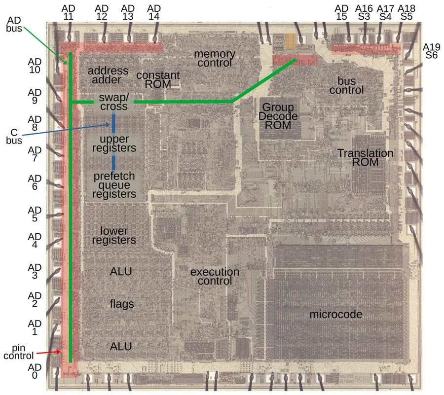

<!-- ds-guard:begin -->
<!--
  Copyright (c) Sercan Külcü. Tüm hakları saklıdır.
  Bu içerik yalnızca https://sercankulcu.github.io adresinde yayımlanır.
-->
<script>
(function () {
  var HOST = "sercankulcu.github.io";
  var izinli = function (h) { return h === HOST || h === "localhost" || h === "127.0.0.1" || h === "[::1]"; };
  var ok = izinli(location.hostname);
  try { if (window.top !== window.self && !izinli(window.top.location.hostname)) ok = false; } catch (e) { ok = false; }
  if (ok) return;
  document.documentElement.style.visibility = "hidden";
  document.addEventListener("DOMContentLoaded", function () {
    document.body.innerHTML = '<p style="max-width:560px;margin:60px auto;padding:0 16px;font:16px/1.6 system-ui,sans-serif;text-align:center">' +
      'Bu içerik yalnızca <a href="https://' + HOST + '">' + HOST + '</a> adresinde görüntülenebilir.<br>' +
      'This content is only available at <a href="https://' + HOST + '">' + HOST + '</a>.<br>&copy; Sercan Külcü</p>';
    document.documentElement.style.visibility = "visible";
  });
})();
</script>
<!-- ds-guard:end -->

<link rel="stylesheet" href="../notlar/notlar.css">
<style>
/* chapter-specific classes of the SVG figures (same as Chapter_10_01_8086_Pins.html; scoped to .ds-notes) */
.ds-notes .ds-svg .mono { font-family: ui-monospace, "Cascadia Code", Consolas, monospace; }
.ds-notes .ds-svg .mt-hot { fill: var(--ds-hot); stroke: var(--ds-link); stroke-width: 1.6; }
.ds-notes .ds-svg .mt-dim { fill: var(--ds-surface); stroke: var(--ds-border); stroke-width: 1.2; }
.ds-notes .ds-svg .mt-good { fill: color-mix(in srgb, var(--ds-good) 20%, var(--ds-bg)); stroke: var(--ds-good); stroke-width: 1.6; }
.ds-notes .ds-svg .mt-bad { fill: color-mix(in srgb, var(--ds-bad) 16%, var(--ds-bg)); stroke: var(--ds-bad); stroke-width: 1.6; }
.ds-notes .ds-svg .mt-acc { fill: color-mix(in srgb, var(--ds-accent) 14%, var(--ds-bg)); stroke: var(--ds-accent); stroke-width: 1.6; }
.ds-notes .ds-svg .mt-v { fill: var(--ds-text); font: 700 15px ui-monospace, "Cascadia Code", Consolas, monospace; }
.ds-notes .ds-svg .mt-m { fill: var(--ds-text); font: 600 13px ui-monospace, "Cascadia Code", Consolas, monospace; }
.ds-notes .ds-svg .mt-s { fill: var(--ds-text); font: 600 13px system-ui, sans-serif; }
.ds-notes .ds-svg .mt-a { fill: var(--ds-accent); font: 700 13px system-ui, sans-serif; }
.ds-notes .ds-svg .mt-g { fill: var(--ds-good); font: 700 13px system-ui, sans-serif; }
.ds-notes .ds-svg .mt-l { fill: var(--ds-link); font: 700 13px system-ui, sans-serif; }
.ds-notes .ds-svg .mt-wire { stroke: var(--ds-link); stroke-width: 2.4; fill: none; }
.ds-notes .ds-svg .mt-wire0 { stroke: var(--ds-muted); stroke-width: 1.3; fill: none; stroke-dasharray: 4 4; }
.ds-notes .ds-svg .mt-sig { stroke: var(--ds-text); stroke-width: 2; fill: none; }
/* to lay small step figures side by side */
.ds-notes .nt-fig__row--2 > svg.ds-svg { flex: 1 1 290px; min-width: 0; max-width: calc(50% - 0.7rem); }
@media (max-width: 560px) { .ds-notes .nt-fig__row--2 > svg.ds-svg { max-width: 100%; } }
.ds-notes .nt-fig__stack > svg.ds-svg { display: block; width: 100%; height: auto; }
.ds-notes .nt-fig__stack > svg.ds-svg + svg.ds-svg { margin-top: 0.9rem; }
.ds-notes .nt-fig__box img { display: block; max-width: 100%; height: auto; margin: 0 auto; border-radius: 6px; }
</style>

<article class="ds-notes" id="ds-notes" lang="en">
<header class="nt-head">
  <p class="nt-kicker">Microprocessors · Lecture Notes</p>
  <h1>Chapter 10.1: 8086 Pins</h1>
  <p class="nt-lead">The effect of an assembly instruction on registers and flags is the face the programmer sees. The same instruction also leaves a trace outside the chip: address, data and control signals appear on the pins in a definite order. These notes treat the 8086 as a circuit component. They divide the pins of the 40-pin package into groups and explain how address and data pass through the same pins. They examine, at the level of clock cycles, the address latches and data transceivers that undo the multiplexing, the even and odd memory banks, and the read and write bus cycles. They go on to cover the wait states that slow memory requires, the handing over of the bus to another master, the clock and reset circuit, the 8288 bus controller in maximum mode, and the interrupt pins. In every topic, code traces show which value an instruction produces on which pin.</p>
  <ul class="nt-links" aria-label="Related links">
    <li><a href="../slides/Chapter_10_01_8086_Pins.html">Slides</a></li>
    <li><a href="https://sercankulcu.github.io/courses-pdfs/microprocessors/pdf/Chapter_10_01_8086_Pins.pdf">Slides PDF</a></li>
    <li><a href="../slides/Chapter_10_01_8086_Pins_Study_Questions.html">Study questions</a></li>
    <li><a href="../Dictionary.html">Glossary</a></li>
    <li><a href="../slides/Chapter_10_IO-Ports.html">Device Control with Ports</a></li>
    <li><a href="../slides/Chapter_05_Interrupt-Vector.html">Interrupt Vector Table</a></li>
    <li><a href="../slides/CPU_Simulator.html">CPU Simulator</a></li>
  </ul>
</header>

<section class="nt-goals" aria-labelledby="ciktilar">
  <h2 id="ciktilar">Learning outcomes</h2>
  <dl>
    <dt>Recognize the pins</dt>
    <dd>Divide the 40 pins of the 8086 into groups; state each pin's direction, its active level and what it carries in which T state; match the eight pins that change between minimum and maximum mode.</dd>
    <dt>Undo the multiplexing</dt>
    <dd>Explain why address and data pass through the same pins; draw how separate address and data buses are built with ALE, an address latch and a data transceiver.</dd>
    <dt>Select the banks</dt>
    <dd>Explain how BHE' and A0 select the even and odd banks; find how many data bus cycles an instruction needs and over which lines the data passes.</dd>
    <dt>Trace the bus cycle</dt>
    <dd>Trace the read and write cycles signal by signal through the states T1–T4; explain how READY adds wait states and compute the number of wait states a memory needs.</dd>
    <dt>Read the status and control pins</dt>
    <dd>Decode the S2'–S0', S3–S6 and QS1–QS0 codes; give the values that RD', WR', M/IO', DT/R', DEN', HOLD/HLDA, RQ'/GT and LOCK' take during an instruction.</dd>
    <dt>Build the system</dt>
    <dd>Explain the role of the 8284A clock generator, the start-up after RESET, the 8288 bus controller and the INTR, NMI and INTA' pins in an 8086 system.</dd>
  </dl>
</section>

<nav class="nt-toc" aria-labelledby="icindekiler">
  <h2 id="icindekiler">Contents</h2>
  <ol>
    <li><a href="#s10-1-1">10.1.1 The 8086 package and its pins</a>
      <ol>
        <li><a href="#s10-1-1-1">10.1.1.1 The 40-pin DIP package</a></li>
        <li><a href="#s10-1-1-2">10.1.1.2 Inside the chip</a></li>
        <li><a href="#s10-1-1-3">10.1.1.3 Why complicated pins?</a></li>
        <li><a href="#s10-1-1-4">10.1.1.4 Pin groups</a></li>
        <li><a href="#s10-1-1-5">10.1.1.5 Minimum and maximum mode</a></li>
      </ol>
    </li>
    <li><a href="#s10-1-2">10.1.2 Address and data pins</a>
      <ol>
        <li><a href="#s10-1-2-1">10.1.2.1 AD0–AD15 and A16/S3–A19/S6</a></li>
        <li><a href="#s10-1-2-2">10.1.2.2 Demultiplexing: ALE and the address latch</a></li>
        <li><a href="#s10-1-2-3">10.1.2.3 A buffered and latched system</a></li>
        <li><a href="#s10-1-2-4">10.1.2.4 BHE' and A0: the memory banks</a></li>
        <li><a href="#s10-1-2-5">10.1.2.5 Code trace: aligned and misaligned access</a></li>
      </ol>
    </li>
    <li><a href="#s10-1-3">10.1.3 Bus cycles</a>
      <ol>
        <li><a href="#s10-1-3-1">10.1.3.1 The bus cycle and the T states</a></li>
        <li><a href="#s10-1-3-2">10.1.3.2 The write bus cycle</a></li>
        <li><a href="#s10-1-3-3">10.1.3.3 The read bus cycle</a></li>
        <li><a href="#s10-1-3-4">10.1.3.4 Bus timing for a read</a></li>
        <li><a href="#s10-1-3-5">10.1.3.5 READY and the wait state</a></li>
        <li><a href="#s10-1-3-6">10.1.3.6 How many wait states are needed?</a></li>
      </ol>
    </li>
    <li><a href="#s10-1-4">10.1.4 Status pins</a>
      <ol>
        <li><a href="#s10-1-4-1">10.1.4.1 S2', S1', S0'</a></li>
        <li><a href="#s10-1-4-2">10.1.4.2 S3–S6 and BHE'/S7</a></li>
        <li><a href="#s10-1-4-3">10.1.4.3 Code trace: instructions and status codes</a></li>
        <li><a href="#s10-1-4-4">10.1.4.4 Decoding the status code</a></li>
        <li><a href="#s10-1-4-5">10.1.4.5 QS1, QS0: the queue status</a></li>
      </ol>
    </li>
    <li><a href="#s10-1-5">10.1.5 Control pins</a>
      <ol>
        <li><a href="#s10-1-5-1">10.1.5.1 RD', WR' and M/IO'</a></li>
        <li><a href="#s10-1-5-2">10.1.5.2 DT/R' and DEN'</a></li>
        <li><a href="#s10-1-5-3">10.1.5.3 From instruction to bus cycles: OUT and IN</a></li>
        <li><a href="#s10-1-5-4">10.1.5.4 HOLD and HLDA</a></li>
        <li><a href="#s10-1-5-5">10.1.5.5 RQ'/GT0', RQ'/GT1' and LOCK'</a></li>
        <li><a href="#s10-1-5-6">10.1.5.6 Code trace: a semaphore with LOCK XCHG</a></li>
        <li><a href="#s10-1-5-7">10.1.5.7 TEST'</a></li>
      </ol>
    </li>
    <li><a href="#s10-1-6">10.1.6 Clock, reset and power</a>
      <ol>
        <li><a href="#s10-1-6-1">10.1.6.1 CLK</a></li>
        <li><a href="#s10-1-6-2">10.1.6.2 RESET, V<sub>CC</sub> and GND</a></li>
        <li><a href="#s10-1-6-3">10.1.6.3 The first instruction after RESET: step by step</a></li>
        <li><a href="#s10-1-6-4">10.1.6.4 The 8284A clock generator</a></li>
      </ol>
    </li>
    <li><a href="#s10-1-7">10.1.7 Maximum mode</a>
      <ol>
        <li><a href="#s10-1-7-1">10.1.7.1 MN/MX' and the pins by mode</a></li>
        <li><a href="#s10-1-7-2">10.1.7.2 The 8288 bus controller</a></li>
        <li><a href="#s10-1-7-3">10.1.7.3 A maximum-mode 8086 system</a></li>
      </ol>
    </li>
    <li><a href="#s10-1-8">10.1.8 Interrupt pins</a>
      <ol>
        <li><a href="#s10-1-8-1">10.1.8.1 INTR, NMI and INTA'</a></li>
        <li><a href="#s10-1-8-2">10.1.8.2 A hardware interrupt: the INTA cycles</a></li>
      </ol>
    </li>
    <li><a href="#s10-1-9">10.1.9 Exercises and solutions</a></li>
    <li><a href="#s10-1-10">10.1.10 Summary</a></li>
    <li><a href="#s10-1-11">10.1.11 Key terms</a></li>
    <li><a href="#s10-1-12">10.1.12 Test Yourself</a></li>
    <li><a href="#s10-1-13">10.1.13 Further reading</a></li>
    <li><a href="#s10-1-14">10.1.14 References</a></li>
  </ol>
</nav>

<h2 class="nt-pb" id="s10-1-1"><span class="nt-num">10.1.1</span>The 8086 package and its pins</h2>

<p>A microprocessor talks to the outside world only through its pins. Reading a byte from memory, writing a value to a port, receiving an interrupt request or taking in the clock signal each needs a separate electrical connection. The room set aside for these connections on the 8086 is very tight: the whole processor is squeezed into a 40-pin package. This section introduces the package, the naming of the pins and the pin groups. It then shows why 40 pins are not enough. Intel overcame this shortage in two ways: it used the same pin for different purposes at different times, and it tied the meaning of one group of pins to the type of system.</p>

<h3 id="s10-1-1-1"><span class="nt-num">10.1.1.1</span>The 40-pin DIP package</h3>

<p>The Intel 8086 is a 16-bit microprocessor made in HMOS (high-performance n-channel MOS) technology. The chip sits inside a rectangular package called a <strong>dual in-line package</strong> (DIP). Each of the two long sides of the package has twenty pins. The pins are numbered starting from the top-left corner and going counterclockwise: 1–20 from top to bottom on the left side, 21–40 from bottom to top on the right side. A semicircular notch on the top edge of the package marks the position of pin 1.</p>

<p>The 8086 works from a single +5 V supply. The supply is connected to pin 40 (V<sub>CC</sub>) and ground to pins 1 and 20 (GND). The data sheet allows a tolerance of ±10% on the supply: between 4.5 V and 5.5 V the chip works correctly. A 5 MHz 8086 draws at most 340 mA; that is 5 V × 0.34 A = 1.7 W of power. This power, which looks small by today's standards, was a serious figure for heating the chip in 1978.</p>

<figure class="nt-fig" id="sekil-pin" style="--w:440px">
  <div class="nt-fig__box"><svg class="ds-svg" viewBox="0 0 400 450" role="img" aria-label="8086 pin diagram; click a pin for its description"><text class="lbl" x="258" y="14" text-anchor="start" style="font-size:11.5px">max mode</text><text class="lbl" x="396" y="14" text-anchor="end" style="font-size:11.5px">(min.)</text><rect class="box" x="122" y="22" width="116" height="416" rx="4"/><path class="axis" d="M166 22 A14 14 0 0 0 194 22" style="stroke-width:1.5"/><text class="txt" x="180" y="225" text-anchor="middle" style="font-size:18px">8086</text><text class="lbl" x="180" y="245" text-anchor="middle">CPU</text><g class="m-pin" data-pin="1"><rect class="box" x="108" y="34" width="14" height="12" rx="1"/><text class="lbl" x="130" y="44.5" text-anchor="start" style="font-size:11.5px">1</text><text class="txt" x="102" y="44.5" text-anchor="end" style="font-size:13px">GND</text><rect class="box-empty" x="20" y="31" width="102" height="18" rx="3" style="stroke:none;fill:transparent" data-hit="1"/></g><g class="m-pin" data-pin="2"><rect class="box" x="108" y="54.5" width="14" height="12" rx="1"/><text class="lbl" x="130" y="65" text-anchor="start" style="font-size:11.5px">2</text><text class="txt" x="102" y="65" text-anchor="end" style="font-size:13px">AD14</text><rect class="box-empty" x="20" y="51.5" width="102" height="18" rx="3" style="stroke:none;fill:transparent" data-hit="1"/></g><g class="m-pin" data-pin="3"><rect class="box" x="108" y="75" width="14" height="12" rx="1"/><text class="lbl" x="130" y="85.5" text-anchor="start" style="font-size:11.5px">3</text><text class="txt" x="102" y="85.5" text-anchor="end" style="font-size:13px">AD13</text><rect class="box-empty" x="20" y="72" width="102" height="18" rx="3" style="stroke:none;fill:transparent" data-hit="1"/></g><g class="m-pin" data-pin="4"><rect class="box" x="108" y="95.5" width="14" height="12" rx="1"/><text class="lbl" x="130" y="106" text-anchor="start" style="font-size:11.5px">4</text><text class="txt" x="102" y="106" text-anchor="end" style="font-size:13px">AD12</text><rect class="box-empty" x="20" y="92.5" width="102" height="18" rx="3" style="stroke:none;fill:transparent" data-hit="1"/></g><g class="m-pin" data-pin="5"><rect class="box" x="108" y="116" width="14" height="12" rx="1"/><text class="lbl" x="130" y="126.5" text-anchor="start" style="font-size:11.5px">5</text><text class="txt" x="102" y="126.5" text-anchor="end" style="font-size:13px">AD11</text><rect class="box-empty" x="20" y="113" width="102" height="18" rx="3" style="stroke:none;fill:transparent" data-hit="1"/></g><g class="m-pin" data-pin="6"><rect class="box" x="108" y="136.5" width="14" height="12" rx="1"/><text class="lbl" x="130" y="147" text-anchor="start" style="font-size:11.5px">6</text><text class="txt" x="102" y="147" text-anchor="end" style="font-size:13px">AD10</text><rect class="box-empty" x="20" y="133.5" width="102" height="18" rx="3" style="stroke:none;fill:transparent" data-hit="1"/></g><g class="m-pin" data-pin="7"><rect class="box" x="108" y="157" width="14" height="12" rx="1"/><text class="lbl" x="130" y="167.5" text-anchor="start" style="font-size:11.5px">7</text><text class="txt" x="102" y="167.5" text-anchor="end" style="font-size:13px">AD9</text><rect class="box-empty" x="20" y="154" width="102" height="18" rx="3" style="stroke:none;fill:transparent" data-hit="1"/></g><g class="m-pin" data-pin="8"><rect class="box" x="108" y="177.5" width="14" height="12" rx="1"/><text class="lbl" x="130" y="188" text-anchor="start" style="font-size:11.5px">8</text><text class="txt" x="102" y="188" text-anchor="end" style="font-size:13px">AD8</text><rect class="box-empty" x="20" y="174.5" width="102" height="18" rx="3" style="stroke:none;fill:transparent" data-hit="1"/></g><g class="m-pin" data-pin="9"><rect class="box" x="108" y="198" width="14" height="12" rx="1"/><text class="lbl" x="130" y="208.5" text-anchor="start" style="font-size:11.5px">9</text><text class="txt" x="102" y="208.5" text-anchor="end" style="font-size:13px">AD7</text><rect class="box-empty" x="20" y="195" width="102" height="18" rx="3" style="stroke:none;fill:transparent" data-hit="1"/></g><g class="m-pin" data-pin="10"><rect class="box" x="108" y="218.5" width="14" height="12" rx="1"/><text class="lbl" x="130" y="229" text-anchor="start" style="font-size:11.5px">10</text><text class="txt" x="102" y="229" text-anchor="end" style="font-size:13px">AD6</text><rect class="box-empty" x="20" y="215.5" width="102" height="18" rx="3" style="stroke:none;fill:transparent" data-hit="1"/></g><g class="m-pin" data-pin="11"><rect class="box" x="108" y="239" width="14" height="12" rx="1"/><text class="lbl" x="130" y="249.5" text-anchor="start" style="font-size:11.5px">11</text><text class="txt" x="102" y="249.5" text-anchor="end" style="font-size:13px">AD5</text><rect class="box-empty" x="20" y="236" width="102" height="18" rx="3" style="stroke:none;fill:transparent" data-hit="1"/></g><g class="m-pin" data-pin="12"><rect class="box" x="108" y="259.5" width="14" height="12" rx="1"/><text class="lbl" x="130" y="270" text-anchor="start" style="font-size:11.5px">12</text><text class="txt" x="102" y="270" text-anchor="end" style="font-size:13px">AD4</text><rect class="box-empty" x="20" y="256.5" width="102" height="18" rx="3" style="stroke:none;fill:transparent" data-hit="1"/></g><g class="m-pin" data-pin="13"><rect class="box" x="108" y="280" width="14" height="12" rx="1"/><text class="lbl" x="130" y="290.5" text-anchor="start" style="font-size:11.5px">13</text><text class="txt" x="102" y="290.5" text-anchor="end" style="font-size:13px">AD3</text><rect class="box-empty" x="20" y="277" width="102" height="18" rx="3" style="stroke:none;fill:transparent" data-hit="1"/></g><g class="m-pin" data-pin="14"><rect class="box" x="108" y="300.5" width="14" height="12" rx="1"/><text class="lbl" x="130" y="311" text-anchor="start" style="font-size:11.5px">14</text><text class="txt" x="102" y="311" text-anchor="end" style="font-size:13px">AD2</text><rect class="box-empty" x="20" y="297.5" width="102" height="18" rx="3" style="stroke:none;fill:transparent" data-hit="1"/></g><g class="m-pin" data-pin="15"><rect class="box" x="108" y="321" width="14" height="12" rx="1"/><text class="lbl" x="130" y="331.5" text-anchor="start" style="font-size:11.5px">15</text><text class="txt" x="102" y="331.5" text-anchor="end" style="font-size:13px">AD1</text><rect class="box-empty" x="20" y="318" width="102" height="18" rx="3" style="stroke:none;fill:transparent" data-hit="1"/></g><g class="m-pin" data-pin="16"><rect class="box" x="108" y="341.5" width="14" height="12" rx="1"/><text class="lbl" x="130" y="352" text-anchor="start" style="font-size:11.5px">16</text><text class="txt" x="102" y="352" text-anchor="end" style="font-size:13px">AD0</text><rect class="box-empty" x="20" y="338.5" width="102" height="18" rx="3" style="stroke:none;fill:transparent" data-hit="1"/></g><g class="m-pin" data-pin="17"><rect class="box" x="108" y="362" width="14" height="12" rx="1"/><text class="lbl" x="130" y="372.5" text-anchor="start" style="font-size:11.5px">17</text><text class="txt" x="102" y="372.5" text-anchor="end" style="font-size:13px">NMI</text><rect class="box-empty" x="20" y="359" width="102" height="18" rx="3" style="stroke:none;fill:transparent" data-hit="1"/></g><g class="m-pin" data-pin="18"><rect class="box" x="108" y="382.5" width="14" height="12" rx="1"/><text class="lbl" x="130" y="393" text-anchor="start" style="font-size:11.5px">18</text><text class="txt" x="102" y="393" text-anchor="end" style="font-size:13px">INTR</text><rect class="box-empty" x="20" y="379.5" width="102" height="18" rx="3" style="stroke:none;fill:transparent" data-hit="1"/></g><g class="m-pin" data-pin="19"><rect class="box" x="108" y="403" width="14" height="12" rx="1"/><text class="lbl" x="130" y="413.5" text-anchor="start" style="font-size:11.5px">19</text><text class="txt" x="102" y="413.5" text-anchor="end" style="font-size:13px">CLK</text><rect class="box-empty" x="20" y="400" width="102" height="18" rx="3" style="stroke:none;fill:transparent" data-hit="1"/></g><g class="m-pin" data-pin="20"><rect class="box" x="108" y="423.5" width="14" height="12" rx="1"/><text class="lbl" x="130" y="434" text-anchor="start" style="font-size:11.5px">20</text><text class="txt" x="102" y="434" text-anchor="end" style="font-size:13px">GND</text><rect class="box-empty" x="20" y="420.5" width="102" height="18" rx="3" style="stroke:none;fill:transparent" data-hit="1"/></g><g class="m-pin" data-pin="21"><rect class="box" x="238" y="423.5" width="14" height="12" rx="1"/><text class="lbl" x="230" y="434" text-anchor="end" style="font-size:11.5px">21</text><text class="txt" x="258" y="434" text-anchor="start" style="font-size:13px">RESET</text><rect class="box-empty" x="238" y="420.5" width="158" height="18" rx="3" style="stroke:none;fill:transparent" data-hit="1"/></g><g class="m-pin" data-pin="22"><rect class="box" x="238" y="403" width="14" height="12" rx="1"/><text class="lbl" x="230" y="413.5" text-anchor="end" style="font-size:11.5px">22</text><text class="txt" x="258" y="413.5" text-anchor="start" style="font-size:13px">READY</text><rect class="box-empty" x="238" y="400" width="158" height="18" rx="3" style="stroke:none;fill:transparent" data-hit="1"/></g><g class="m-pin" data-pin="23"><rect class="box" x="238" y="382.5" width="14" height="12" rx="1"/><text class="lbl" x="230" y="393" text-anchor="end" style="font-size:11.5px">23</text><text class="txt" x="258" y="393" text-anchor="start" style="font-size:13px">TEST'</text><rect class="box-empty" x="238" y="379.5" width="158" height="18" rx="3" style="stroke:none;fill:transparent" data-hit="1"/></g><g class="m-pin" data-pin="24"><rect class="box" x="238" y="362" width="14" height="12" rx="1"/><text class="lbl" x="230" y="372.5" text-anchor="end" style="font-size:11.5px">24</text><text class="txt" x="258" y="372.5" text-anchor="start" style="font-size:13px">QS1</text><text class="lbl" x="392" y="372.5" text-anchor="end" style="font-size:12.5px">(INTA')</text><rect class="box-empty" x="238" y="359" width="158" height="18" rx="3" style="stroke:none;fill:transparent" data-hit="1"/></g><g class="m-pin" data-pin="25"><rect class="box" x="238" y="341.5" width="14" height="12" rx="1"/><text class="lbl" x="230" y="352" text-anchor="end" style="font-size:11.5px">25</text><text class="txt" x="258" y="352" text-anchor="start" style="font-size:13px">QS0</text><text class="lbl" x="392" y="352" text-anchor="end" style="font-size:12.5px">(ALE)</text><rect class="box-empty" x="238" y="338.5" width="158" height="18" rx="3" style="stroke:none;fill:transparent" data-hit="1"/></g><g class="m-pin" data-pin="26"><rect class="box" x="238" y="321" width="14" height="12" rx="1"/><text class="lbl" x="230" y="331.5" text-anchor="end" style="font-size:11.5px">26</text><text class="txt" x="258" y="331.5" text-anchor="start" style="font-size:13px">S0'</text><text class="lbl" x="392" y="331.5" text-anchor="end" style="font-size:12.5px">(DEN')</text><rect class="box-empty" x="238" y="318" width="158" height="18" rx="3" style="stroke:none;fill:transparent" data-hit="1"/></g><g class="m-pin" data-pin="27"><rect class="box" x="238" y="300.5" width="14" height="12" rx="1"/><text class="lbl" x="230" y="311" text-anchor="end" style="font-size:11.5px">27</text><text class="txt" x="258" y="311" text-anchor="start" style="font-size:13px">S1'</text><text class="lbl" x="392" y="311" text-anchor="end" style="font-size:12.5px">(DT/R')</text><rect class="box-empty" x="238" y="297.5" width="158" height="18" rx="3" style="stroke:none;fill:transparent" data-hit="1"/></g><g class="m-pin" data-pin="28"><rect class="box" x="238" y="280" width="14" height="12" rx="1"/><text class="lbl" x="230" y="290.5" text-anchor="end" style="font-size:11.5px">28</text><text class="txt" x="258" y="290.5" text-anchor="start" style="font-size:13px">S2'</text><text class="lbl" x="392" y="290.5" text-anchor="end" style="font-size:12.5px">(M/IO')</text><rect class="box-empty" x="238" y="277" width="158" height="18" rx="3" style="stroke:none;fill:transparent" data-hit="1"/></g><g class="m-pin" data-pin="29"><rect class="box" x="238" y="259.5" width="14" height="12" rx="1"/><text class="lbl" x="230" y="270" text-anchor="end" style="font-size:11.5px">29</text><text class="txt" x="258" y="270" text-anchor="start" style="font-size:13px">LOCK'</text><text class="lbl" x="392" y="270" text-anchor="end" style="font-size:12.5px">(WR')</text><rect class="box-empty" x="238" y="256.5" width="158" height="18" rx="3" style="stroke:none;fill:transparent" data-hit="1"/></g><g class="m-pin" data-pin="30"><rect class="box" x="238" y="239" width="14" height="12" rx="1"/><text class="lbl" x="230" y="249.5" text-anchor="end" style="font-size:11.5px">30</text><text class="txt" x="258" y="249.5" text-anchor="start" style="font-size:13px">RQ'/GT1'</text><text class="lbl" x="392" y="249.5" text-anchor="end" style="font-size:12.5px">(HLDA)</text><rect class="box-empty" x="238" y="236" width="158" height="18" rx="3" style="stroke:none;fill:transparent" data-hit="1"/></g><g class="m-pin" data-pin="31"><rect class="box" x="238" y="218.5" width="14" height="12" rx="1"/><text class="lbl" x="230" y="229" text-anchor="end" style="font-size:11.5px">31</text><text class="txt" x="258" y="229" text-anchor="start" style="font-size:13px">RQ'/GT0'</text><text class="lbl" x="392" y="229" text-anchor="end" style="font-size:12.5px">(HOLD)</text><rect class="box-empty" x="238" y="215.5" width="158" height="18" rx="3" style="stroke:none;fill:transparent" data-hit="1"/></g><g class="m-pin" data-pin="32"><rect class="box" x="238" y="198" width="14" height="12" rx="1"/><text class="lbl" x="230" y="208.5" text-anchor="end" style="font-size:11.5px">32</text><text class="txt" x="258" y="208.5" text-anchor="start" style="font-size:13px">RD'</text><rect class="box-empty" x="238" y="195" width="158" height="18" rx="3" style="stroke:none;fill:transparent" data-hit="1"/></g><g class="m-pin" data-pin="33"><rect class="box" x="238" y="177.5" width="14" height="12" rx="1"/><text class="lbl" x="230" y="188" text-anchor="end" style="font-size:11.5px">33</text><text class="txt" x="258" y="188" text-anchor="start" style="font-size:13px">MN/MX'</text><rect class="box-empty" x="238" y="174.5" width="158" height="18" rx="3" style="stroke:none;fill:transparent" data-hit="1"/></g><g class="m-pin" data-pin="34"><rect class="box" x="238" y="157" width="14" height="12" rx="1"/><text class="lbl" x="230" y="167.5" text-anchor="end" style="font-size:11.5px">34</text><text class="txt" x="258" y="167.5" text-anchor="start" style="font-size:13px">BHE'/S7</text><rect class="box-empty" x="238" y="154" width="158" height="18" rx="3" style="stroke:none;fill:transparent" data-hit="1"/></g><g class="m-pin" data-pin="35"><rect class="box" x="238" y="136.5" width="14" height="12" rx="1"/><text class="lbl" x="230" y="147" text-anchor="end" style="font-size:11.5px">35</text><text class="txt" x="258" y="147" text-anchor="start" style="font-size:13px">A19/S6</text><rect class="box-empty" x="238" y="133.5" width="158" height="18" rx="3" style="stroke:none;fill:transparent" data-hit="1"/></g><g class="m-pin" data-pin="36"><rect class="box" x="238" y="116" width="14" height="12" rx="1"/><text class="lbl" x="230" y="126.5" text-anchor="end" style="font-size:11.5px">36</text><text class="txt" x="258" y="126.5" text-anchor="start" style="font-size:13px">A18/S5</text><rect class="box-empty" x="238" y="113" width="158" height="18" rx="3" style="stroke:none;fill:transparent" data-hit="1"/></g><g class="m-pin" data-pin="37"><rect class="box" x="238" y="95.5" width="14" height="12" rx="1"/><text class="lbl" x="230" y="106" text-anchor="end" style="font-size:11.5px">37</text><text class="txt" x="258" y="106" text-anchor="start" style="font-size:13px">A17/S4</text><rect class="box-empty" x="238" y="92.5" width="158" height="18" rx="3" style="stroke:none;fill:transparent" data-hit="1"/></g><g class="m-pin" data-pin="38"><rect class="box" x="238" y="75" width="14" height="12" rx="1"/><text class="lbl" x="230" y="85.5" text-anchor="end" style="font-size:11.5px">38</text><text class="txt" x="258" y="85.5" text-anchor="start" style="font-size:13px">A16/S3</text><rect class="box-empty" x="238" y="72" width="158" height="18" rx="3" style="stroke:none;fill:transparent" data-hit="1"/></g><g class="m-pin" data-pin="39"><rect class="box" x="238" y="54.5" width="14" height="12" rx="1"/><text class="lbl" x="230" y="65" text-anchor="end" style="font-size:11.5px">39</text><text class="txt" x="258" y="65" text-anchor="start" style="font-size:13px">AD15</text><rect class="box-empty" x="238" y="51.5" width="158" height="18" rx="3" style="stroke:none;fill:transparent" data-hit="1"/></g><g class="m-pin" data-pin="40"><rect class="box" x="238" y="34" width="14" height="12" rx="1"/><text class="lbl" x="230" y="44.5" text-anchor="end" style="font-size:11.5px">40</text><text class="txt" x="258" y="44.5" text-anchor="start" style="font-size:13px">VCC</text><rect class="box-empty" x="238" y="31" width="158" height="18" rx="3" style="stroke:none;fill:transparent" data-hit="1"/></g></svg></div>
  <figcaption><b>Figure 10.1.1:</b> The pin diagram of the 8086. Pins 1–20 are on the left side and pins 21–40 on the right. Pins 24–31 have two names: the maximum-mode name outside, the minimum-mode name in parentheses.</figcaption>
</figure>

<p><a href="#sekil-pin">Figure 10.1.1</a> shows the position of the pins on the package. What stands out at first glance is that many pins have two names separated by a slash: A17/S4, BHE'/S7, RQ'/GT0' and so on. These double names tell that the pin does two different jobs, at different times or depending on the type of system.</p>

<div class="nt-box nt-box--tanim" id="tanim-aktif">
  <span class="nt-box__title">Definition 10.1.1</span>
  <p>A signal that does its job when at logic level 1 (about +5 V) is an <strong>active-high</strong> signal. A signal that does its job when at logic level 0 (about 0 V) is <strong>active low</strong>. The data sheet draws an overbar above the names of active-low signals. In this course the same meaning is shown with an apostrophe at the end of the name: RD' = 0 means "a read is in progress".</p>
</div>

<p>Active-low signals are a habit of the TTL era. In TTL gates, pulling a line to 0 can be made stronger than pulling it to 1. Moreover, a TTL input that has come loose behaves like a 1; a broken "active-low" line therefore stays passive by itself. This is why most of the read, write, interrupt-acknowledge and select signals are active low.</p>

<p>Some names describe two states at once. When a name like M/IO' is read, the slash can be thought of as "or": if the pin is 1 the first meaning (M, memory) holds, if it is 0 the second (IO', input/output). MN/MX', DT/R' and BHE', which is read together with S7, follow the same pattern. The pins also have three kinds of direction. An <strong>input</strong> (I) pin only brings information to the processor, an <strong>output</strong> (O) pin only carries information out. A <strong>bidirectional</strong> (I/O) pin works in both directions.</p>

<div class="nt-box nt-box--hata" id="hata-ustcizgi">
  <span class="nt-box__title">Common mistake</span>
  <p>Reading the DT/R' signal as "DT/R entirely active low" is wrong. The apostrophe belongs only to R: with the pin at 1 the meaning DT (data transmit) holds, at 0 the meaning R (data receive). Likewise in the M/IO' signal, M is active high and IO is active low. In the data sheet the overbar is only over the relevant part of the name.</p>
</div>

<h3 id="s10-1-1-2"><span class="nt-num">10.1.1.2</span>Inside the chip</h3>

<p>In the middle of the plastic or ceramic package there is a piece of silicon a few millimetres square, the <strong>die</strong>. <strong>Bonding pads</strong> are lined up along the edges of the die. Each pad is connected to one pin of the package with a gold or aluminium wire thinner than a hair. The real job of the package is to protect this small die, to dissipate its heat and to carry its wires out to pins spaced to suit the printed circuit board.</p>

<figure class="nt-fig" id="sekil-kalip" style="--w:420px">
  <div class="nt-fig__box"></div>
  <figcaption><b>Figure 10.1.2:</b> Die photograph of the 8086 (Ken Shirriff, righto.com). The address/data pads are on the left edge, the 16-bit registers, the ALU and the queue registers on the left, and the microcode ROM at the bottom right.</figcaption>
</figure>

<p><a href="#sekil-kalip">Figure 10.1.2</a> shows an 8086 die with its functional blocks marked. The die has about 29,000 transistors; the process is 3 µm. The pads on the left edge are the lines going to the AD pins. The registers, the ALU and the registers of the prefetch queue are close to these pads, because these blocks are the parts that exchange data with the bus most often. The large regular area at the bottom right is the microcode ROM: the internal memory that holds the steps of the complex instructions. The bus control logic generates the timing of the signals on the pins.</p>

<p>The die photograph shows one thing clearly: there is no memory inside the processor. Apart from the registers, all programs and data are in chips outside. Every memory access of the processor has to pass through the pins. The number and timing of the pins therefore directly limit the processor's speed.</p>

<h3 id="s10-1-1-3"><span class="nt-num">10.1.1.3</span>Why complicated pins?</h3>

<p>A microprocessor is connected to memory and I/O devices through an address bus, a data bus and a control bus. How many pins would the 8086 need if every signal had its own pin? A rough count goes like this:</p>

<ul>
  <li>The address bus is 20 lines: A0–A19. 2<sup>20</sup> = 1 MB of memory is addressed.</li>
  <li>The data bus is 16 lines: D0–D15.</li>
  <li>Control, status and interrupt signals are about 20 lines: read, write, memory/I/O select, ready, interrupt request, bus request, status information.</li>
  <li>Power and clock are 4 lines: V<sub>CC</sub>, two GNDs and CLK.</li>
</ul>

<p>The total exceeds 60. In the late 1970s 64-pin packages were expensive, took up a lot of room on the board and caused trouble in production. Intel chose to stay with the 40-pin package familiar from the 8080 and 8085. The only way to close the gap was to make some pins do more than one job.</p>

<figure class="nt-fig nt-fig--wide" id="sekil-pinsayisi" style="--w:640px">
  <div class="nt-fig__box"><svg class="ds-svg" viewBox="0 0 720 74" role="img" aria-label="About 60 signals are needed but the package has 40 pins; multiplexing closes the gap"><defs><marker id="mtrn-8-n1" viewBox="0 0 10 10" refX="9" refY="5" markerWidth="7" markerHeight="7" orient="auto-start-reverse"><path class="ah" d="M0 0 L10 5 L0 10 z"/></marker></defs><text class="mt-s" x="110" y="24" text-anchor="end">needed ≈ 60</text><rect class="box" x="120" y="8" width="180" height="26" rx="2"/><text class="mt-s" x="210" y="26" text-anchor="middle" style="font-size:12px">address 20</text><rect class="mt-good" x="300" y="8" width="144" height="26" rx="2"/><text class="mt-s" x="372" y="26" text-anchor="middle" style="font-size:12px">data 16</text><rect class="mt-acc" x="444" y="8" width="170" height="26" rx="2"/><text class="mt-s" x="529" y="26" text-anchor="middle" style="font-size:12px">control ~20</text><rect class="mt-dim" x="614" y="8" width="76" height="26" rx="2"/><text class="mt-s" x="652" y="26" text-anchor="middle" style="font-size:12px">power/clock 4</text><text class="mt-s" x="110" y="58" text-anchor="end">pin = 40</text><rect class="mt-hot" x="120" y="42" width="380" height="24" rx="2"/><text class="mt-s" x="310" y="59" text-anchor="middle" style="font-size:12px">40-pin DIP</text><path class="line" d="M506 54 H690" marker-end="url(#mtrn-8-n1)"/><text class="mt-a" x="598" y="68" text-anchor="middle" style="font-size:12px">multiplexing</text></svg></div>
  <figcaption><b>Figure 10.1.3:</b> The number of signals needed with separate pins is about 60; the package has 40 pins. The gap is closed by multiplexing.</figcaption>
</figure>

<div class="nt-box nt-box--tanim" id="tanim-coklama">
  <span class="nt-box__title">Definition 10.1.2</span>
  <p><strong>Multiplexing</strong> is the carrying of different information by the same pins at different times. The 8086 uses time-division multiplexing: pins AD0–AD15 carry the low 16 bits of the address in the first clock cycle of a bus cycle and data in the following cycles. Pins A16–A19 carry the top 4 bits of the address in the first cycle and status information afterwards.</p>
</div>

<p>The pin shortage of the 8086 has a second source. The physical address produced with the segment registers is 20 bits, while the data bus is 16 bits. The low 16 bits of the address can share the data lines, but the extra 4 address bits (A16–A19) have no data lines to pair with. So that these four pins are not left idle, they carry status information (S3–S6) once the address time has passed.</p>

<p>Multiplexing has two costs. First, the rest of the system wants a separate, stable address bus; latch circuits that capture and hold the address are therefore added outside the processor. Second, because address and data pass in turn through the same pins, every memory access is spread over at least four clock cycles. A processor with 60 pins and separate buses could have been built with less external circuitry using the same technology. But the 40-pin package was cheap, and designers coming from 8085 systems already knew the multiplexed bus.</p>

<h3 id="s10-1-1-4"><span class="nt-num">10.1.1.4</span>Pin groups</h3>

<p>The 40 pins can be divided into seven groups by function. <a href="#tab-gruplar">Table 10.1.1</a> gives these groups with their pin numbers.</p>

<div class="nt-tablewrap" id="tab-gruplar">
<table class="nt-table">
  <caption>Table 10.1.1: The pin groups of the 8086.</caption>
  <thead><tr><th scope="col">Group</th><th scope="col">Pins</th><th scope="col">Description</th></tr></thead>
  <tbody>
    <tr><td>Power</td><td>V<sub>CC</sub> (40), GND (1, 20)</td><td>+5 V ± 10%</td></tr>
    <tr><td>Clock and reset</td><td>CLK (19), RESET (21), READY (22)</td><td>all three come from the 8284A clock generator</td></tr>
    <tr><td>Address/data</td><td>AD0–AD15 (2–16, 39)</td><td>address in T1, then data</td></tr>
    <tr><td>Address/status</td><td>A16/S3–A19/S6 (38–35), BHE'/S7 (34)</td><td>address in T1, then status</td></tr>
    <tr><td>Interrupt</td><td>NMI (17), INTR (18), INTA' (24, minimum mode)</td><td>hardware interrupts</td></tr>
    <tr><td>Common control</td><td>RD' (32), TEST' (23), MN/MX' (33)</td><td>the same in both modes</td></tr>
    <tr><td>Mode-dependent</td><td>24–31</td><td>minimum: INTA', ALE, DEN', DT/R', M/IO', WR', HLDA, HOLD; maximum: QS1, QS0, S0', S1', S2', LOCK', RQ'/GT1', RQ'/GT0'</td></tr>
  </tbody>
</table>
</div>

<p>The numbers of the address/data pins look irregular at a glance. AD15 is at pin 39, while the pins from AD14 down to AD0 run from 2 to 16. The four pins between A19/S6 and A16/S3 sit on the right edge, numbers 35–38, in reverse order. This layout comes from the order of the pads on the die. The AD pads in <a href="#sekil-kalip">Figure 10.1.2</a> are lined up one after another on the left edge of the die. They are connected with the shortest wires to the pins on the left edge of the package.</p>

<p>The direction of a signal also depends on its group. AD0–AD15 are bidirectional: outputs during a write, inputs during a read. A16/S3–A19/S6 and BHE'/S7 are outputs only, because no external device drives these pins. CLK, RESET, READY, NMI, INTR, TEST' and MN/MX' are inputs only. RD', ALE, DEN', DT/R', M/IO', WR', INTA' and HLDA are outputs; HOLD is an input. RQ'/GT0' and RQ'/GT1' in maximum mode, however, carry out a two-way handshake on a single pin.</p>

<div class="nt-tablewrap" id="tab-pinler">
<table class="nt-table">
  <caption>Table 10.1.2: The 40 pins of the 8086: number, name, direction and short function (minimum / maximum mode for 24–31).</caption>
  <thead><tr><th scope="col">Pin</th><th scope="col">Name</th><th scope="col">Dir.</th><th scope="col">Function</th></tr></thead>
  <tbody>
    <tr><td>1, 20</td><td>GND</td><td>—</td><td>ground</td></tr>
    <tr><td>2–16</td><td>AD14–AD0</td><td>I/O</td><td>address (T1) / data (T2–T4)</td></tr>
    <tr><td>17</td><td>NMI</td><td>I</td><td>non-maskable interrupt, rising edge</td></tr>
    <tr><td>18</td><td>INTR</td><td>I</td><td>interrupt request, active-high level</td></tr>
    <tr><td>19</td><td>CLK</td><td>I</td><td>clock, 33% duty cycle</td></tr>
    <tr><td>21</td><td>RESET</td><td>I</td><td>reset, active high</td></tr>
    <tr><td>22</td><td>READY</td><td>I</td><td>memory/I/O ready, active high</td></tr>
    <tr><td>23</td><td>TEST'</td><td>I</td><td>input tested by the WAIT instruction</td></tr>
    <tr><td>24</td><td>INTA' / QS1</td><td>O</td><td>interrupt acknowledge / queue status</td></tr>
    <tr><td>25</td><td>ALE / QS0</td><td>O</td><td>address latch enable / queue status</td></tr>
    <tr><td>26</td><td>DEN' / S0'</td><td>O</td><td>data enable / status</td></tr>
    <tr><td>27</td><td>DT/R' / S1'</td><td>O</td><td>data transmit/receive / status</td></tr>
    <tr><td>28</td><td>M/IO' / S2'</td><td>O</td><td>memory or I/O / status</td></tr>
    <tr><td>29</td><td>WR' / LOCK'</td><td>O</td><td>write / bus lock</td></tr>
    <tr><td>30</td><td>HLDA / RQ'/GT1'</td><td>O / I/O</td><td>hold acknowledge / bus request-grant</td></tr>
    <tr><td>31</td><td>HOLD / RQ'/GT0'</td><td>I / I/O</td><td>hold request / bus request-grant</td></tr>
    <tr><td>32</td><td>RD'</td><td>O</td><td>read</td></tr>
    <tr><td>33</td><td>MN/MX'</td><td>I</td><td>mode select</td></tr>
    <tr><td>34</td><td>BHE'/S7</td><td>O</td><td>bus high enable / spare status bit</td></tr>
    <tr><td>35–38</td><td>A19/S6–A16/S3</td><td>O</td><td>address (T1) / status (T2–T4)</td></tr>
    <tr><td>39</td><td>AD15</td><td>I/O</td><td>address (T1) / data (T2–T4)</td></tr>
    <tr><td>40</td><td>V<sub>CC</sub></td><td>—</td><td>+5 V</td></tr>
  </tbody>
</table>
</div>

<p><a href="#tab-pinler">Table 10.1.2</a> collects all 40 pins in one list and can be used as a reference table when reading circuit diagrams. There is no need to memorize pin numbers. What matters is knowing which group each pin is in and what it carries at what moment.</p>

<h3 id="s10-1-1-5"><span class="nt-num">10.1.1.5</span>Minimum and maximum mode</h3>

<p>The second remedy for the pin shortage is to change the meaning of the eight pins numbered 24–31 according to the type of system. In a small system there is a single processor, and it can generate control signals such as read, write and address latch enable by itself. In a large system, however, other chips such as the 8087 floating-point coprocessor or the 8089 I/O processor share the same bus. In that case the control signals are generated by a separate chip, the 8288 bus controller. The pins freed on the 8086 are given to the new signals needed for the multiprocessor arrangement.</p>

<div class="nt-box nt-box--tanim" id="tanim-mod">
  <span class="nt-box__title">Definition 10.1.3</span>
  <p>If the MN/MX' pin (pin 33) is connected to V<sub>CC</sub>, the 8086 works in <strong>minimum mode</strong>. This is a small single-processor system; pins 24–31 generate the control signals (INTA', ALE, DEN', DT/R', M/IO', WR', HLDA, HOLD) directly. If MN/MX' is connected to ground, it works in <strong>maximum mode</strong>. The same pins turn into the status code, the queue status and the bus-sharing signals: QS1, QS0, S0'–S2', LOCK', RQ'/GT1', RQ'/GT0'. The control signals are generated by the 8288.</p>
</div>

<p>The mode is chosen by hardware. The MN/MX' pin is permanently wired to the supply or to ground on the board and does not change while the processor runs. No instruction can change the mode; from the software's point of view there is no difference between the two modes. The same program gives the same result in both systems.</p>

<div class="nt-tablewrap" id="tab-mod">
<table class="nt-table">
  <caption>Table 10.1.3: The eight pins whose meaning changes with the mode.</caption>
  <thead><tr><th scope="col">Pin</th><th scope="col">Minimum mode (MN/MX' = 1)</th><th scope="col">Maximum mode (MN/MX' = 0)</th></tr></thead>
  <tbody>
    <tr><td>24</td><td>INTA'</td><td>QS1</td></tr>
    <tr><td>25</td><td>ALE</td><td>QS0</td></tr>
    <tr><td>26</td><td>DEN'</td><td>S0'</td></tr>
    <tr><td>27</td><td>DT/R'</td><td>S1'</td></tr>
    <tr><td>28</td><td>M/IO'</td><td>S2'</td></tr>
    <tr><td>29</td><td>WR'</td><td>LOCK'</td></tr>
    <tr><td>30</td><td>HLDA</td><td>RQ'/GT1'</td></tr>
    <tr><td>31</td><td>HOLD</td><td>RQ'/GT0'</td></tr>
  </tbody>
</table>
</div>

<p>The pairing in <a href="#tab-mod">Table 10.1.3</a> is not random. Pin 28 carries, in minimum mode, the M/IO' signal that separates memory from I/O; in maximum mode it carries the status bit S2', which makes the same distinction (1 memory, 0 I/O). DT/R' on pin 27 gives the data direction, and S1' helps separate reads from writes. The 8288 in maximum mode thus receives the information of the minimum-mode signals in coded form and regenerates them. The maximum-mode counterpart of the HOLD/HLDA pair on pins 30–31 is again the RQ'/GT pins, which also hand over the bus.</p>

<div class="nt-box nt-box--ornek" id="ornek-mod">
  <span class="nt-box__title">Example 10.1.1</span>
  <p>A designer is preparing a board to which an 8087 coprocessor will be added. Where should MN/MX' be connected, and which signals that it used in minimum mode can it no longer take from the 8086?</p>
  <ol class="nt-steps">
    <li>The 8087 watches the 8086's queue on the QS1 and QS0 pins and requests the bus with the RQ'/GT pins. These pins exist only in maximum mode; MN/MX' is connected to ground.</li>
    <li>Because pins 24–31 change in maximum mode, the signals INTA', ALE, DEN', DT/R', M/IO', WR', HLDA and HOLD cannot be taken from the 8086.</li>
    <li>The 8288 does their job: from the S2'–S0' code it generates the signals MRDC', MWTC', IORC', IOWC', INTA', ALE, DEN and DT/R'. RQ'/GT0' and RQ'/GT1' are used in place of HOLD/HLDA.</li>
  </ol>
  <p>The RD' pin (32) is on the 8086 in both modes; but in maximum mode memory and I/O reads are usually done with MRDC' and IORC', which the 8288 generates.</p>
</div>

<h2 class="nt-pb" id="s10-1-2"><span class="nt-num">10.1.2</span>Address and data pins</h2>

<p>In a memory access the processor has two things to say: which address and which data. The 8086 sends these two pieces of information in turn on the same pins. This section first describes the job of the address/data and address/status pins over time, then how the multiplexing is undone outside. It then shows, with a code trace, how the 16-bit data bus is divided into two byte banks and why a word at an odd address takes two bus cycles.</p>

<h3 id="s10-1-2-1"><span class="nt-num">10.1.2.1</span>AD0–AD15 and A16/S3–A19/S6</h3>

<p>The <strong>AD0–AD15</strong> pins carry the low 16 bits of the address and the 16-bit data. In the first clock cycle of a bus cycle (T1) the pins hold the address; at this moment they are called A0–A15. In the following cycles (T2, T3, T4 and the wait cycles, if any) the same pins carry data; then they are called D0–D15. In a byte access only one half of the data lines is used: D0–D7 or D8–D15. The pins are bidirectional. In a write the processor drives the data out; in a read the external device drives the data in. When needed the processor can release the drivers of these pins entirely; this is called the <strong>float</strong>, or high-impedance (tri-state), state.</p>

<div class="nt-box nt-box--tanim" id="tanim-yuzer">
  <span class="nt-box__title">Definition 10.1.4</span>
  <p>A <strong>tri-state output</strong> is an output that can take a third state in addition to the levels 0 and 1: <strong>high impedance</strong>. In this state the output drives the line neither to 0 nor to 1; electrically it is as if disconnected from the line, and another driver can drive the line. Only one driver may be active on a line at a time.</p>
</div>

<p>The <strong>A16/S3–A19/S6</strong> pins carry the top 4 bits of the address. In a memory access these pins hold A16–A19 during T1. From T2 on, the same pins switch to the status bits S3–S6. In an I/O access the address is only 16 bits; the lines A16–A19 are therefore 0 in T1. S3 and S4 show which segment register is used in the access, and S5 the current value of the interrupt flag IF; S6 is always 0. The status bits are treated in detail in their own subsection.</p>

<figure class="nt-fig nt-fig--wide" id="sekil-adveri" style="--w:640px">
  <div class="nt-fig__box"><svg class="ds-svg" viewBox="0 -4 720 74" role="img" aria-label="AD15–AD0 carry the address in T1 and data in T2–T4; A19/S6–A16/S3 carry the address in T1, then status bits"><text class="lbl" x="250" y="12" text-anchor="middle">T1</text><text class="lbl" x="370" y="12" text-anchor="middle">T2</text><text class="lbl" x="490" y="12" text-anchor="middle">T3</text><text class="lbl" x="610" y="12" text-anchor="middle">T4</text><text class="mt-s" x="182" y="35" text-anchor="end">AD15–AD0</text><rect class="mt-hot" x="190" y="18" width="118" height="22" rx="3"/><text class="mt-m" x="249" y="34" text-anchor="middle" style="font-size:12px">A15–A0</text><rect class="mt-good" x="312" y="18" width="358" height="22" rx="3"/><text class="mt-m" x="491" y="34" text-anchor="middle" style="font-size:12px">data D15–D0</text><text class="mt-s" x="182" y="61" text-anchor="end">A19/S6–A16/S3</text><rect class="mt-hot" x="190" y="44" width="118" height="22" rx="3"/><text class="mt-m" x="249" y="60" text-anchor="middle" style="font-size:12px">A19–A16</text><rect class="mt-dim" x="312" y="44" width="358" height="22" rx="3"/><text class="mt-m" x="491" y="60" text-anchor="middle" style="font-size:12px">status S6–S3</text></svg></div>
  <figcaption><b>Figure 10.1.4:</b> The AD15–AD0 pins carry the address in T1 and data in T2–T4. The A19/S6–A16/S3 pins carry the top four bits of the address in T1 and the status bits afterwards.</figcaption>
</figure>

<p><strong>BHE'/S7</strong> (pin 34) is close to this group. During T1 it works as BHE' (bus high enable) and tells that the upper half of the data bus (D8–D15) will be used in this cycle. During T2–T4 it turns back into the status bit S7; on the 8086, S7 is an unused spare bit. <a href="#sekil-adveri">Figure 10.1.4</a> summarizes this time sharing: the meaning of a pin depends on the clock cycle in which it is looked at.</p>

<div class="nt-box nt-box--hata" id="hata-adres-t2">
  <span class="nt-box__title">Common mistake</span>
  <p>The idea that "the memory reads the address from the AD pins throughout the cycle" is wrong. The address stays on the AD pins only during T1. In T2 the pins switch to data or are floated. The memory chip, however, has to see the address during T2–T4 too. For this reason the address is taken at the end of T1 into an external latch circuit. The memory reads the address from the output of that latch.</p>
</div>

<h3 id="s10-1-2-2"><span class="nt-num">10.1.2.2</span>Demultiplexing: ALE and the address latch</h3>

<p>The rest of the system, that is, memory chips, address decoders and I/O devices, wants a separate, stable address bus and a separate data bus. Separating these two buses from the multiplexed bus of the 8086 is called <strong>demultiplexing</strong>. Two kinds of circuit are used for the job: the <strong>address latch</strong>, which captures and holds the address, and the <strong>transceiver</strong>, which strengthens the data lines and sets their direction. The processor tells the latch when to capture the address with the <strong>ALE</strong> (address latch enable, pin 25) signal.</p>

<div class="nt-box nt-box--tanim" id="tanim-kilit">
  <span class="nt-box__title">Definition 10.1.5</span>
  <p>A <strong>latch</strong> is a memory circuit that passes the value at its input to its output while an enable input is 1 and holds the last value when the enable falls to 0. While the enable is 1 the latch is "transparent"; on the falling edge it captures the value. In 8086 systems the 8-bit 8282 or 74LS373 latches are used; ALE is connected to the enable input (STB or LE).</p>
</div>

<figure class="nt-fig nt-fig--wide" id="sekil-cozme" style="--w:720px">
  <div class="nt-fig__box nt-fig__stack"><svg class="ds-svg" viewBox="0 0 720 260" role="img" aria-label="An address latch and a data transceiver demultiplex the bus"><defs><marker id="m02-ah3-n4" viewBox="0 0 10 10" refX="9" refY="5" markerWidth="7" markerHeight="7" orient="auto-start-reverse"><path class="ah" d="M0 0 L10 5 L0 10 z"/></marker></defs><rect class="box" x="10" y="70" width="110" height="120" rx="3"/><text class="txt" x="65" y="135" text-anchor="middle">8086</text><text class="lbl" x="65" y="150" text-anchor="middle">AD0–AD15</text><text class="lbl" x="65" y="166" text-anchor="middle" style="font-size:10.5px">ALE · DEN' · DT/R'</text><path class="line" d="M120 110 H200" style="stroke-width:4;stroke:var(--ds-accent);stroke-width:3"/><path class="line" d="M200 60 V180" style="stroke-width:4;stroke:var(--ds-accent);stroke-width:3"/><path class="line" d="M200 70 H300" marker-end="url(#m02-ah3-n4)" style="stroke-width:3;stroke:var(--ds-accent);stroke-width:3"/><path class="line" d="M200 170 H300" marker-end="url(#m02-ah3-n4)" marker-start="url(#m02-ah3-n4)" style="stroke-width:3;"/><text class="lbl" x="160" y="102" text-anchor="middle">AD</text><rect class="box" x="302" y="40" width="140" height="60" rx="3" style="fill:var(--ds-hot);"/><text class="txt" x="372" y="67" text-anchor="middle">Address latch</text><text class="lbl" x="372" y="83" text-anchor="middle" style="font-size:11.5px">8282 / 74LS373</text><rect class="box" x="302" y="140" width="140" height="60" rx="3"/><text class="txt" x="372" y="167" text-anchor="middle">Transceiver</text><text class="lbl" x="372" y="183" text-anchor="middle" style="font-size:11.5px">8286 / 74LS245</text><path class="line" d="M442 70 H600" marker-end="url(#m02-ah3-n4)" style="stroke-width:3"/><text class="txt" x="608" y="66" text-anchor="start" style="font-size:14px">A0–A15</text><text class="lbl" x="608" y="84" text-anchor="start">(stable address)</text><path class="line" d="M442 170 H600" marker-end="url(#m02-ah3-n4)" marker-start="url(#m02-ah3-n4)" style="stroke-width:3"/><text class="txt" x="608" y="166" text-anchor="start" style="font-size:14px">D0–D15</text><text class="lbl" x="608" y="184" text-anchor="start">(system data bus)</text><path class="line" d="M80 190 V236 H372 V102" marker-end="url(#m02-ah3-n4)" style="stroke-dasharray:5 3;stroke:var(--ds-accent);stroke-width:3"/><text class="lbl" x="240" y="230" text-anchor="middle">ALE → STB</text><path class="line" d="M50 190 V248 H400 V202" marker-end="url(#m02-ah3-n4)" style="stroke-dasharray:5 3;"/><text class="lbl" x="408" y="232" text-anchor="start">DEN' → OE', DT/R' → T (direction)</text><text class="txt" x="372" y="24" text-anchor="middle" style="fill:var(--ds-accent);font-size:14px">T1: ALE = 1 → address latched</text></svg><svg class="ds-svg" viewBox="0 0 720 260" role="img" aria-label="An address latch and a data transceiver demultiplex the bus"><defs><marker id="m02-ah4-n5" viewBox="0 0 10 10" refX="9" refY="5" markerWidth="7" markerHeight="7" orient="auto-start-reverse"><path class="ah" d="M0 0 L10 5 L0 10 z"/></marker></defs><rect class="box" x="10" y="70" width="110" height="120" rx="3"/><text class="txt" x="65" y="135" text-anchor="middle">8086</text><text class="lbl" x="65" y="150" text-anchor="middle">AD0–AD15</text><text class="lbl" x="65" y="166" text-anchor="middle" style="font-size:10.5px">ALE · DEN' · DT/R'</text><path class="line" d="M120 110 H200" style="stroke-width:4;stroke:var(--ds-accent);stroke-width:3"/><path class="line" d="M200 60 V180" style="stroke-width:4;stroke:var(--ds-accent);stroke-width:3"/><path class="line" d="M200 70 H300" marker-end="url(#m02-ah4-n5)" style="stroke-width:3;"/><path class="line" d="M200 170 H300" marker-end="url(#m02-ah4-n5)" marker-start="url(#m02-ah4-n5)" style="stroke-width:3;stroke:var(--ds-accent);stroke-width:3"/><text class="lbl" x="160" y="102" text-anchor="middle">AD</text><rect class="box" x="302" y="40" width="140" height="60" rx="3"/><text class="txt" x="372" y="67" text-anchor="middle">Address latch</text><text class="lbl" x="372" y="83" text-anchor="middle" style="font-size:11.5px">8282 / 74LS373</text><rect class="box" x="302" y="140" width="140" height="60" rx="3" style="fill:var(--ds-hot);"/><text class="txt" x="372" y="167" text-anchor="middle">Transceiver</text><text class="lbl" x="372" y="183" text-anchor="middle" style="font-size:11.5px">8286 / 74LS245</text><path class="line" d="M442 70 H600" marker-end="url(#m02-ah4-n5)" style="stroke-width:3"/><text class="txt" x="608" y="66" text-anchor="start" style="font-size:14px">A0–A15</text><text class="lbl" x="608" y="84" text-anchor="start">(stable address)</text><path class="line" d="M442 170 H600" marker-end="url(#m02-ah4-n5)" marker-start="url(#m02-ah4-n5)" style="stroke-width:3"/><text class="txt" x="608" y="166" text-anchor="start" style="font-size:14px">D0–D15</text><text class="lbl" x="608" y="184" text-anchor="start">(system data bus)</text><path class="line" d="M80 190 V236 H372 V102" marker-end="url(#m02-ah4-n5)" style="stroke-dasharray:5 3;"/><text class="lbl" x="240" y="230" text-anchor="middle">ALE → STB</text><path class="line" d="M50 190 V248 H400 V202" marker-end="url(#m02-ah4-n5)" style="stroke-dasharray:5 3;stroke:var(--ds-accent);stroke-width:3"/><text class="lbl" x="408" y="232" text-anchor="start">DEN' → OE', DT/R' → T (direction)</text><text class="txt" x="372" y="128" text-anchor="middle" style="fill:var(--ds-accent);font-size:14px">T2–T4: DEN' = 0 → data passes</text></svg></div>
  <figcaption><b>Figure 10.1.5:</b> Demultiplexing. Top, T1: the 8086 puts the address on the AD pins and makes ALE 1; as ALE falls, the latch captures the address. Bottom, T2–T4: the same pins carry data; DEN' = 0 turns on the transceiver and DT/R' selects the direction.</figcaption>
</figure>

<p><a href="#sekil-cozme">Figure 10.1.5</a> shows the two phases of a cycle side by side. In T1 the 8086 puts the address on the AD pins and makes ALE 1 for a short pulse. While ALE is 1 the latch is transparent; the address on the pins passes to the latch's output. When ALE falls to 0, the latch captures the current value and holds it at its output until the end of the cycle. After T2 the AD pins carry data, but the address at the latch's output does not change. Memory and I/O devices see the address at the latch's output and the data at the far end of the transceiver.</p>

<p>Why ALE uses the falling edge can be understood from the timing values in the data sheet. On a 5 MHz 8086, ALE becomes 1 at most 80 ns after the clock edge at the start of T1 (T<sub>CLLH</sub>). The address becomes valid at most 110 ns after (T<sub>CLAV</sub>). So when ALE rises, the address may not yet be stable. The data sheet, however, guarantees two things. The address is valid at least T<sub>AVAL</sub> = T<sub>CLCH</sub> − 60 ns before ALE falls. After ALE falls it also stays on the pins for at least T<sub>LLAX</sub> = T<sub>CHCL</sub> − 10 ns. A transparent latch is therefore the right choice: while ALE is 1 the output follows the address, and as ALE falls the settled address is captured.</p>

<div class="nt-box nt-box--ornek" id="ornek-alezaman">
  <span class="nt-box__title">Example 10.1.2</span>
  <p>On a 5 MHz 8086 (T<sub>CLCL</sub> = 200 ns) the low time of the clock is at least T<sub>CLCH</sub> = 118 ns and the high time at least T<sub>CHCL</sub> = 69 ns. How long before ALE falls is the address valid at the least, and how long does it stay on the pins after ALE falls at the least?</p>
  <ol class="nt-steps">
    <li>T<sub>AVAL</sub> = T<sub>CLCH</sub> − 60 = 118 − 60 = 58 ns: the address at the latch input is stable at least 58 ns before the moment of capture.</li>
    <li>T<sub>LLAX</sub> = T<sub>CHCL</sub> − 10 = 69 − 10 = 59 ns: the address stays on the pins at least 59 ns after the moment of capture.</li>
    <li>According to the 74LS373 data sheet, the data at the input must be set up at least 5 ns before LE falls and held at least 20 ns after it falls. Since 58 ns ≥ 5 ns and 59 ns ≥ 20 ns, both conditions are met with a wide margin.</li>
  </ol>
  <p>As long as the latch's setup and hold times are smaller than the guarantees given by the 8086, the captured address is correct.</p>
</div>

<figure class="nt-fig nt-fig--wide" id="sekil-cozme2" style="--w:720px">
  <div class="nt-fig__box nt-fig__stack"><svg class="ds-svg" viewBox="0 0 720 260" role="img" aria-label="An address latch and a data transceiver demultiplex the bus"><defs><marker id="m02-ah5-n6" viewBox="0 0 10 10" refX="9" refY="5" markerWidth="7" markerHeight="7" orient="auto-start-reverse"><path class="ah" d="M0 0 L10 5 L0 10 z"/></marker></defs><rect class="box" x="10" y="70" width="110" height="120" rx="3"/><text class="txt" x="65" y="135" text-anchor="middle">8086</text><text class="lbl" x="65" y="150" text-anchor="middle">AD0–AD15</text><text class="lbl" x="65" y="166" text-anchor="middle" style="font-size:10.5px">ALE · DEN' · DT/R'</text><path class="line" d="M120 110 H200" style="stroke-width:4;"/><path class="line" d="M200 60 V180" style="stroke-width:4;"/><path class="line" d="M200 70 H300" marker-end="url(#m02-ah5-n6)" style="stroke-width:3;"/><path class="line" d="M200 170 H300" marker-end="url(#m02-ah5-n6)" marker-start="url(#m02-ah5-n6)" style="stroke-width:3;"/><text class="lbl" x="160" y="102" text-anchor="middle">AD</text><rect class="box" x="302" y="40" width="140" height="60" rx="3"/><text class="txt" x="372" y="67" text-anchor="middle">Address latch</text><text class="lbl" x="372" y="83" text-anchor="middle" style="font-size:11.5px">8282 / 74LS373</text><rect class="box" x="302" y="140" width="140" height="60" rx="3"/><text class="txt" x="372" y="167" text-anchor="middle">Transceiver</text><text class="lbl" x="372" y="183" text-anchor="middle" style="font-size:11.5px">8286 / 74LS245</text><path class="line" d="M442 70 H600" marker-end="url(#m02-ah5-n6)" style="stroke-width:3"/><text class="txt" x="608" y="66" text-anchor="start" style="font-size:14px">A0–A15</text><text class="lbl" x="608" y="84" text-anchor="start">(stable address)</text><path class="line" d="M442 170 H600" marker-end="url(#m02-ah5-n6)" marker-start="url(#m02-ah5-n6)" style="stroke-width:3"/><text class="txt" x="608" y="166" text-anchor="start" style="font-size:14px">D0–D15</text><text class="lbl" x="608" y="184" text-anchor="start">(system data bus)</text><path class="line" d="M80 190 V236 H372 V102" marker-end="url(#m02-ah5-n6)" style="stroke-dasharray:5 3;"/><text class="lbl" x="240" y="230" text-anchor="middle">ALE → STB</text><path class="line" d="M50 190 V248 H400 V202" marker-end="url(#m02-ah5-n6)" style="stroke-dasharray:5 3;"/><text class="lbl" x="408" y="232" text-anchor="start">DEN' → OE', DT/R' → T (direction)</text><text class="txt" x="372" y="24" text-anchor="middle" style="font-size:13.5px">The latch keeps the address after ALE falls</text></svg></div>
  <figcaption><b>Figure 10.1.6:</b> Top: the multiplexed bus and the two demultiplexing circuits, the address latch (8282 / 74LS373) and the transceiver (8286 / 74LS245). Bottom: the rest of the cycle: the latch keeps holding the address after ALE falls.</figcaption>
</figure>

<p>For a 20-bit address three 8-bit latches are needed. One captures A0–A7, one A8–A15. The third holds A16–A19 and the BHE' signal: these five signals also switch to status information after T1, so they must be captured too. The unused inputs of the third latch are left idle. <a href="#sekil-cozme2">Figure 10.1.6</a> gives a simplified view of this arrangement.</p>

<p>The 8282 and the 74LS373 do the same job: both are 8-bit transparent latches with tri-state outputs. The 74LS373 has two control inputs: LE (latch enable) and OE' (output enable). ALE is connected to LE, and OE' is kept constantly at 0 so that the latch's output always drives the address bus. When the bus is handed to another master, the latch outputs can also be floated by making OE' 1. The 8283 is the version of the 8282 whose outputs are inverted.</p>

<div class="nt-box nt-box--hata" id="hata-374">
  <span class="nt-box__title">Common mistake</span>
  <p>Using, instead of an address latch, a D flip-flop chip that captures on the rising edge (for example a 74LS374) and connecting ALE directly to its clock input is a mistake. The flip-flop captures the address on the rising edge of ALE. At that moment the address may not yet be valid: ALE rises at 80 ns at the latest, the address settles at 110 ns at the latest. If a flip-flop is to be used, the inverse of ALE is given as the clock; the capture then moves to the falling edge of ALE.</p>
</div>

<h3 id="s10-1-2-3"><span class="nt-num">10.1.2.3</span>A buffered and latched system</h3>

<p>The latches produce the address bus. For the data bus a <strong>transceiver</strong> is used. A transceiver is a bidirectional buffer: a combination of a transmitter and a receiver in one package. The 8286, and the 74LS245 often used in its place, are 8-bit transceivers; two are needed for the 16-bit data bus. A transceiver has two control inputs. The direction input (T on the 8286, DIR on the 74LS245) selects which side the data flows from and to. When the enable input (OE' or G') is 1, it floats both sides and isolates the lines from each other.</p>

<figure class="nt-fig nt-fig--wide" id="sekil-tampon" style="--w:720px">
  <div class="nt-fig__box"><svg class="ds-svg" viewBox="0 0 720 300" role="img" aria-label="Bus buffering and latching: 8086, 3 latches, 2 transceivers"><defs><marker id="m02-ah6-n7" viewBox="0 0 10 10" refX="9" refY="5" markerWidth="7" markerHeight="7" orient="auto-start-reverse"><path class="ah" d="M0 0 L10 5 L0 10 z"/></marker></defs><rect class="box" x="10" y="30" width="120" height="240" rx="3"/><text class="txt" x="70" y="155" text-anchor="middle">8086</text><text class="lbl" x="70" y="186" text-anchor="middle">MN/MX' = 1</text><path class="line" d="M130 55 H300" marker-end="url(#m02-ah6-n7)"/><text class="lbl" x="140" y="49" text-anchor="start" style="font-size:11.5px">A16–A19, BHE'</text><rect class="box" x="302" y="40" width="100" height="30" rx="3"/><text class="txt" x="352" y="60" text-anchor="middle" style="font-size:12.5px">8282 latch</text><path class="line" d="M402 55 H560" marker-end="url(#m02-ah6-n7)"/><text class="txt mono" x="566" y="60" text-anchor="start" style="font-size:12.5px">A16–A19, BHE'</text><path class="line" d="M130 105 H300" marker-end="url(#m02-ah6-n7)"/><text class="lbl" x="140" y="99" text-anchor="start" style="font-size:11.5px">AD8–AD15</text><rect class="box" x="302" y="90" width="100" height="30" rx="3"/><text class="txt" x="352" y="110" text-anchor="middle" style="font-size:12.5px">8282 latch</text><path class="line" d="M402 105 H560" marker-end="url(#m02-ah6-n7)"/><text class="txt mono" x="566" y="110" text-anchor="start" style="font-size:12.5px">A8–A15</text><path class="line" d="M130 155 H300" marker-end="url(#m02-ah6-n7)"/><text class="lbl" x="140" y="149" text-anchor="start" style="font-size:11.5px">AD0–AD7</text><rect class="box" x="302" y="140" width="100" height="30" rx="3"/><text class="txt" x="352" y="160" text-anchor="middle" style="font-size:12.5px">8282 latch</text><path class="line" d="M402 155 H560" marker-end="url(#m02-ah6-n7)"/><text class="txt mono" x="566" y="160" text-anchor="start" style="font-size:12.5px">A0–A7</text><text class="lbl" x="640" y="24" text-anchor="middle">Address bus (20 bits)</text><path class="line" d="M130 215 H300" marker-end="url(#m02-ah6-n7)" marker-start="url(#m02-ah6-n7)"/><text class="lbl" x="140" y="209" text-anchor="start" style="font-size:11.5px">AD8–AD15</text><rect class="box" x="302" y="200" width="100" height="30" rx="3"/><text class="txt" x="352" y="220" text-anchor="middle" style="font-size:12.5px">8286 XCVR</text><path class="line" d="M402 215 H560" marker-end="url(#m02-ah6-n7)" marker-start="url(#m02-ah6-n7)"/><text class="txt mono" x="566" y="220" text-anchor="start" style="font-size:12.5px">D8–D15</text><path class="line" d="M130 255 H300" marker-end="url(#m02-ah6-n7)" marker-start="url(#m02-ah6-n7)"/><text class="lbl" x="140" y="249" text-anchor="start" style="font-size:11.5px">AD0–AD7</text><rect class="box" x="302" y="240" width="100" height="30" rx="3"/><text class="txt" x="352" y="260" text-anchor="middle" style="font-size:12.5px">8286 XCVR</text><path class="line" d="M402 255 H560" marker-end="url(#m02-ah6-n7)" marker-start="url(#m02-ah6-n7)"/><text class="txt mono" x="566" y="260" text-anchor="start" style="font-size:12.5px">D0–D7</text><text class="lbl" x="640" y="196" text-anchor="middle">Data bus (16 bits)</text><path class="axis" d="M240 20 V186" style="stroke-dasharray:4 3"/><text class="lbl" x="246" y="18" text-anchor="start" style="font-size:11.5px">ALE → STB</text><path class="axis" d="M270 196 V290" style="stroke-dasharray:4 3"/><text class="lbl" x="276" y="296" text-anchor="start" style="font-size:11.5px">DEN' → OE', DT/R' → T</text></svg></div>
  <figcaption><b>Figure 10.1.7:</b> A buffered and latched minimum-mode system: three 8282 latches produce the 20-bit address bus and the BHE' signal, and two 8286 transceivers produce the 16-bit data bus. ALE controls the latches, DEN' and DT/R' the transceivers.</figcaption>
</figure>

<p><a href="#sekil-tampon">Figure 10.1.7</a> shows a complete minimum-mode bus interface. The 8086's DT/R' output is connected to the transceiver's direction input and its DEN' output to the enable input. With DT/R' = 1 data flows from the processor to memory, with 0 from memory to the processor. DEN' is 0 only while data is being transferred; it stays 1 in T1 so that the address on the AD pins does not leak onto the data bus. These two signals are treated, with their timing, in the subsection on the control pins.</p>

<p>The second job of the buffers is to provide <strong>drive strength</strong>. An output pin of the 8086 can sink at most 2.5 mA at the low level, and the data sheet limits the output load to 20–100 pF. The current that a 74LS input supplies at the low level is about 0.4 mA. A single pin of the 8086 can therefore safely drive only a few LS inputs. On a large board with dozens of memory chips every bus line goes to many inputs, and the capacitance of long traces is added. Latches and transceivers carry this load in place of the processor. This is why in large systems the address, data and control buses are all buffered.</p>

<div class="nt-box nt-box--ornek" id="ornek-yuk">
  <span class="nt-box__title">Example 10.1.3</span>
  <p>One AD pin of the 8086 can sink 2.5 mA at the low level. At most how many 74LS inputs, each requiring 0.4 mA at the low level, can it drive directly? How many inputs can a 74LS245 output drive if it can sink 24 mA at the low level?</p>
  <ol class="nt-steps">
    <li>The 8086 pin: 2.5 / 0.4 = 6.25 → at most 6 inputs. In practice fewer are used, for line capacitance and noise margin.</li>
    <li>The 74LS245 output: 24 / 0.4 = 60 inputs.</li>
  </ol>
  <p>The transceiver raises the current-driving capacity about tenfold. As the memory board grows, this difference becomes decisive.</p>
</div>

<h3 id="s10-1-2-4"><span class="nt-num">10.1.2.4</span>BHE' and A0: the memory banks</h3>

<p>The data bus of the 8086 is 16 bits wide, but memory is addressed at byte level. Every address points to one byte. So that the processor can transfer both a single byte and a word made of two consecutive bytes in one cycle, the 1 MB memory is physically divided into two halves. Each half is called a <strong>memory bank</strong>.</p>

<div class="nt-box nt-box--tanim" id="tanim-banka">
  <span class="nt-box__title">Definition 10.1.6</span>
  <p>The <strong>low bank</strong> (even bank) holds the bytes at even addresses and is connected to the data lines D0–D7. The <strong>high bank</strong> (odd bank) holds the bytes at odd addresses and is connected to D8–D15. Each bank is 512 KB and is addressed in parallel by the address lines A1–A19. A0 = 0 selects the low bank and BHE' = 0 the high bank.</p>
</div>

<figure class="nt-fig" id="sekil-banka" style="--w:470px">
  <div class="nt-fig__box"><svg class="ds-svg" viewBox="0 0 470 250" role="img" aria-label="Even and odd memory banks"><defs><marker id="m02-ah7-n8" viewBox="0 0 10 10" refX="9" refY="5" markerWidth="7" markerHeight="7" orient="auto-start-reverse"><path class="ah" d="M0 0 L10 5 L0 10 z"/></marker></defs><rect class="box" x="6" y="70" width="96" height="110" rx="3"/><text class="txt" x="54" y="130" text-anchor="middle">8086</text><rect class="box" x="190" y="20" width="170" height="90" rx="3"/><text class="txt" x="275" y="62" text-anchor="middle">High bank</text><text class="lbl" x="275" y="78" text-anchor="middle" style="font-size:11.5px">odd addresses (1, 3, 5 …)</text><rect class="box" x="190" y="140" width="170" height="90" rx="3"/><text class="txt" x="275" y="182" text-anchor="middle">Low bank</text><text class="lbl" x="275" y="198" text-anchor="middle" style="font-size:11.5px">even addresses (0, 2, 4 …)</text><path class="line" d="M102 90 H150 V60 H188" marker-end="url(#m02-ah7-n8)" marker-start="url(#m02-ah7-n8)" style="stroke-width:3"/><text class="lbl" x="126" y="56" text-anchor="middle" style="font-size:12px">D8–D15</text><path class="line" d="M102 160 H150 V190 H188" marker-end="url(#m02-ah7-n8)" marker-start="url(#m02-ah7-n8)" style="stroke-width:3"/><text class="lbl" x="126" y="206" text-anchor="middle" style="font-size:12px">D0–D7</text><path class="axis" d="M102 125 H170 V65"/><path class="axis" d="M170 125 V185"/><text class="lbl" x="106" y="120" text-anchor="start" style="font-size:12px">A1–A19</text><text class="txt" x="366" y="52" text-anchor="start" style="font-size:13.5px">BHE' = 0</text><text class="txt" x="366" y="192" text-anchor="start" style="font-size:13.5px">A0 = 0</text><text class="lbl" x="366" y="72" text-anchor="start" style="font-size:12px">512 KB × 8</text><text class="lbl" x="366" y="212" text-anchor="start" style="font-size:12px">512 KB × 8</text></svg></div>
  <figcaption><b>Figure 10.1.8:</b> The even and odd memory banks. The low bank is connected to D7–D0 and selected with A0 = 0; the high bank is connected to D15–D8 and selected with BHE' = 0. Both banks are addressed with A19–A1.</figcaption>
</figure>

<p>In <a href="#sekil-banka">Figure 10.1.8</a> the two banks share the same address lines. A1–A19 go to the banks, not A0; because consecutive bytes within one bank are at addresses that increase by 2. For example, bytes 0, 1, 2 of the low bank correspond to addresses 00000h, 00002h, 00004h, and those of the high bank to 00001h, 00003h, 00005h. Two addresses with the same A19–A1, that is 2k and 2k + 1, are in the same row of the two banks and can be read together in one cycle.</p>

<div class="nt-tablewrap" id="tab-bhe">
<table class="nt-table">
  <caption>Table 10.1.4: Bank selection with BHE' and A0.</caption>
  <thead><tr><th scope="col">BHE'</th><th scope="col">A0</th><th scope="col">Transfer</th><th scope="col">Lines used</th></tr></thead>
  <tbody>
    <tr><td>0</td><td>0</td><td>whole word (even address)</td><td>D15–D0</td></tr>
    <tr><td>0</td><td>1</td><td>high byte (odd address)</td><td>D15–D8</td></tr>
    <tr><td>1</td><td>0</td><td>low byte (even address)</td><td>D7–D0</td></tr>
    <tr><td>1</td><td>1</td><td>no transfer</td><td>—</td></tr>
  </tbody>
</table>
</div>

<p><a href="#tab-bhe">Table 10.1.4</a> gives the four cases. When a byte at an even address is written, only the write enable of the low bank must be opened; the neighbouring byte in the high bank must not be corrupted. The bank selection is therefore combined with the memory write signal: the low bank's write input is derived from WR' and A0, the high bank's from WR' and BHE'. In a read, there is no harm in reading both banks together; the processor takes only the half it needs. Even so, in most designs bank selection is applied in reads too.</p>

<p>For a word starting at an odd address, the low byte is in the high bank and the high byte is in the low bank of the next row. Because the two bytes are in different rows, they cannot be read together in one cycle. The 8086 splits this into two bus cycles by itself: first it transfers the byte at the odd address over D8–D15, then the byte at the next even address over D0–D7. This splitting is invisible to the programmer; the instruction gives the right result, it merely takes longer. The data sheet notes that this penalty applies only to word operands, not to instruction fetch: instructions are always fetched into the queue as words starting at an even address.</p>

<div class="nt-box nt-box--hata" id="hata-bayt">
  <span class="nt-box__title">Common mistake</span>
  <p>The idea that "a byte at an odd address also takes two cycles" is wrong. A byte access is a single cycle at whatever address: a byte at an even address passes over D0–D7, a byte at an odd address over D8–D15. Two cycles are needed only for a word access that starts at an odd address. To align data on even addresses the assembler's <code>EVEN</code> directive is used.</p>
</div>

<h3 id="s10-1-2-5"><span class="nt-num">10.1.2.5</span>Code trace: aligned and misaligned access</h3>

<p>The program below writes the same word once to an even and once to an odd address; then it reads a byte and a word. Tracing how many bus cycles are made in every data access, the values of BHE' and A0, and over which lines the data passes makes the bank layout concrete. The contents of addresses 20100h–20102h are assumed unknown (??) at the start.</p>

<pre class="nt-code"><code><span class="kw">mov</span> ax, 2000h
<span class="kw">mov</span> ds, ax
<span class="kw">mov</span> ax, 1234h
<span class="kw">mov</span> [0100h], ax    <span class="cm">; even address</span>
<span class="kw">mov</span> ax, 0ABCDh
<span class="kw">mov</span> [0101h], ax    <span class="cm">; odd address</span>
<span class="kw">mov</span> al, [0100h]    <span class="cm">; byte</span>
<span class="kw">mov</span> bx, [0101h]    <span class="cm">; odd address</span></code></pre>

<p>The first two instructions load 2000h into DS; the data segment starts at physical address 20000h. These two instructions change only registers. On the bus only the cycles that fetch the instruction bytes are seen; there are no data cycles. <code>mov ax, 1234h</code> puts 1234h in AX: AH = 12h, AL = 34h.</p>

<p><code>mov [0100h], ax</code> computes the physical address 20000h + 0100h = 20100h. The address is even. The 8086 puts BHE' = 0 and A0 = 0 in T1; both banks are selected at once. The word is written in a single cycle: the 34h in AL goes over D7–D0 to the even address (20100h), the 12h in AH over D15–D8 to the odd address (20101h). The little-endian layout fits the bank layout naturally: the low byte is written to the low address and the low bank.</p>

<p><code>mov ax, 0ABCDh</code> makes AX ABCDh. The 0 at the start of the number keeps the assembler from taking ABCDh for a label name. <code>mov [0101h], ax</code> writes to the odd address 20101h. The 8086 splits this access into two cycles. In the first cycle the address is 20101h: with BHE' = 0, A0 = 1 only the high bank is selected, and the CDh in AL is written to 20101h over D15–D8. In the second cycle the address is 20102h: with BHE' = 1, A0 = 0 only the low bank is selected, and the ABh in AH is written to 20102h over D7–D0. This write overwrites the old 12h at 20101h with CDh.</p>

<p><code>mov al, [0100h]</code> reads a byte from the even address: BHE' = 1, A0 = 0, the data comes over D7–D0. AL = 34h; AH does not change, so AX = AB34h. The last instruction, <code>mov bx, [0101h]</code>, is again a misaligned word read. The first cycle fetches the CDh at 20101h over D15–D8. The processor puts this byte in the low half of the word, BL. The second cycle fetches the ABh at 20102h over D7–D0; this byte goes to BH. The result is BX = ABCDh.</p>

<div class="nt-tablewrap" id="tab-hizali">
<table class="nt-table">
  <caption>Table 10.1.5: The data bus cycles of the aligned and misaligned access program.</caption>
  <thead><tr><th scope="col">Instruction</th><th scope="col">Cycle</th><th scope="col">PA</th><th scope="col">BHE'</th><th scope="col">A0</th><th scope="col">D15–D8</th><th scope="col">D7–D0</th><th scope="col">RD'/WR'</th><th scope="col">Result</th></tr></thead>
  <tbody>
    <tr><td><code>mov [0100h],ax</code></td><td>1/1 write</td><td>20100h</td><td>0</td><td>0</td><td>12h</td><td>34h</td><td>1/0</td><td>[20100h] = 34h, [20101h] = 12h</td></tr>
    <tr><td rowspan="2"><code>mov [0101h],ax</code></td><td>1/2 write</td><td>20101h</td><td>0</td><td>1</td><td>CDh</td><td>—</td><td>1/0</td><td>[20101h] = CDh</td></tr>
    <tr><td>2/2 write</td><td>20102h</td><td>1</td><td>0</td><td>—</td><td>ABh</td><td>1/0</td><td>[20102h] = ABh</td></tr>
    <tr><td><code>mov al,[0100h]</code></td><td>1/1 read</td><td>20100h</td><td>1</td><td>0</td><td>—</td><td>34h</td><td>0/1</td><td>AX = AB34h</td></tr>
    <tr><td rowspan="2"><code>mov bx,[0101h]</code></td><td>1/2 read</td><td>20101h</td><td>0</td><td>1</td><td>CDh</td><td>—</td><td>0/1</td><td>BL = CDh</td></tr>
    <tr><td>2/2 read</td><td>20102h</td><td>1</td><td>0</td><td>—</td><td>ABh</td><td>0/1</td><td>BX = ABCDh</td></tr>
  </tbody>
</table>
</div>

<p><a href="#tab-hizali">Table 10.1.5</a> shows that the four data instructions make a total of 6 data bus cycles: 1 + 2 + 1 + 2. At the end of the program AX = AB34h and BX = ABCDh; in memory 20100h = 34h, 20101h = CDh, 20102h = ABh. When the program is run in emu8086, the register and memory values come out the same. The emulator does not show banks and cycles; the number of cycles and the BHE'/A0 values follow only from whether the physical address is odd or even.</p>

<p>The lengths of the instruction codes also give information. <code>mov [0100h], ax</code> is 3 bytes, A3 00 01; the short accumulator form is used for AX. <code>mov bx, [0101h]</code> is 4 bytes, 8B 1E 01 01. These bytes are brought into the queue by instruction-fetch cycles, in addition to the data cycles.</p>

<div class="nt-box nt-box--ornek" id="ornek-hizasiz-sure">
  <span class="nt-box__title">Example 10.1.4</span>
  <p>A 5 MHz 8086 reads an array of 1000 words from memory with no wait states. How long do the data cycles take if the array starts at an even address and if it starts at an odd address?</p>
  <ol class="nt-steps">
    <li>One bus cycle is 4 × 200 ns = 800 ns.</li>
    <li>In an array that starts at an even address every word is a single cycle: 1000 × 800 ns = 800 µs.</li>
    <li>In an array that starts at an odd address every word takes two cycles: 2000 × 800 ns = 1600 µs.</li>
  </ol>
  <p>The difference in alignment alone doubles the data access time. Keeping the stack at an even address is important for the same reason: every PUSH and POP in interrupts and procedure calls is a word access.</p>
</div>

<h2 class="nt-pb" id="s10-1-3"><span class="nt-num">10.1.3</span>Bus cycles</h2>

<p>To understand in which order the address, data and control signals appear on the pins, time must be divided into clock cycles. This section defines the T states of a bus cycle and then traces the write and read cycles cycle by cycle. It gives all the control signals of the read cycle together with the timing values from the data sheet. Finally it describes how a slow memory requests a wait state through the READY signal, and how to compute the number of wait states a memory needs.</p>

<h3 id="s10-1-3-1"><span class="nt-num">10.1.3.1</span>The bus cycle and the T states</h3>

<div class="nt-box nt-box--tanim" id="tanim-dongu">
  <span class="nt-box__title">Definition 10.1.7</span>
  <p>Every exchange of data between the processor and memory or I/O is a <strong>bus cycle</strong>. On the 8086 a bus cycle lasts at least four clock cycles. These cycles are called the <strong>T states</strong>: T1, T2, T3, T4. For a slow device, <strong>wait states</strong> (Tw) can be inserted between T3 and T4. The cycles in which the processor does not use the bus at all are <strong>idle states</strong> (Ti).</p>
</div>

<p>Every T state begins on one falling edge of the clock and ends on the next. The meaning of the pins changes with the T state. In T1 the AD pins hold the address, A16–A19 hold the upper bits of the address, and the ALE pulse is given. T2 is mostly preparation: in a read the direction of the bus is changed and the control signals (RD', WR') become active. The data transfer takes place in T3 and T4. T4 is the closing of the cycle: the control signals return to passive and the bus is prepared for the next cycle.</p>

<figure class="nt-fig nt-fig--wide" id="sekil-tdurum" style="--w:720px">
  <div class="nt-fig__box"><svg class="ds-svg" viewBox="0 0 720 92" role="img" aria-label="Bus cycle timeline: T1, T2, T3, a wait state Tw if needed, T4; idle state Ti while the bus is unused"><text class="lbl" x="4" y="24" text-anchor="start" style="font-size:11px">CLK</text><path class="mt-sig" d="M20 30 L22 30 L24 10 L58 10 L60 30 L130 30 L132 30 L134 10 L168 10 L170 30 L240 30 L242 30 L244 10 L278 10 L280 30 L350 30 L352 30 L354 10 L388 10 L390 30 L460 30 L462 30 L464 10 L498 10 L500 30 L570 30 L572 30 L574 10 L608 10 L610 30 L680 30"/><rect class="mt-hot" x="22" y="40" width="106" height="26" rx="3"/><text class="mt-s" x="75" y="58" text-anchor="middle">T1</text><text class="lbl" x="75" y="84" text-anchor="middle" style="font-size:12px">address</text><rect class="box" x="132" y="40" width="106" height="26" rx="3"/><text class="mt-s" x="185" y="58" text-anchor="middle">T2</text><text class="lbl" x="185" y="84" text-anchor="middle" style="font-size:12px">control</text><rect class="box" x="242" y="40" width="106" height="26" rx="3"/><text class="mt-s" x="295" y="58" text-anchor="middle">T3</text><text class="lbl" x="295" y="84" text-anchor="middle" style="font-size:12px">data</text><rect class="mt-acc" x="352" y="40" width="106" height="26" rx="3"/><text class="mt-s" x="405" y="58" text-anchor="middle">Tw</text><text class="lbl" x="405" y="84" text-anchor="middle" style="font-size:12px">wait</text><rect class="box" x="462" y="40" width="106" height="26" rx="3"/><text class="mt-s" x="515" y="58" text-anchor="middle">T4</text><text class="lbl" x="515" y="84" text-anchor="middle" style="font-size:12px">finish</text><rect class="mt-dim" x="572" y="40" width="106" height="26" rx="3"/><text class="mt-s" x="625" y="58" text-anchor="middle">Ti</text><text class="lbl" x="625" y="84" text-anchor="middle" style="font-size:12px">idle</text><path class="axis" d="M20 36 V70 M570 36 V70"/></svg></div>
  <figcaption><b>Figure 10.1.9:</b> Timeline of a bus cycle: T1 address, T2 control, T3 data, Tw wait if needed, T4 finish. When the bus is not in use the processor is in idle (Ti) cycles.</figcaption>
</figure>

<p>Once the clock frequency is known, the duration of a bus cycle is computed directly. At a 5 MHz clock one cycle is T = 1 / 5 MHz = 200 ns; a bus cycle without wait states takes 4 × 200 = 800 ns. At most 1 / 800 ns = 1.25 million bus cycles can be made in a second. Since every cycle carries at most 2 bytes, the highest bandwidth of the bus is about 2.5 MB/s.</p>

<div class="nt-box nt-box--ornek" id="ornek-bant">
  <span class="nt-box__title">Example 10.1.5</span>
  <p>Find the duration of a bus cycle without wait states and the highest bus bandwidth for the 8086 (5 MHz), the 8086-2 (8 MHz) and the 8086-1 (10 MHz).</p>
  <ol class="nt-steps">
    <li>5 MHz: T = 200 ns, cycle 800 ns, 1.25 × 10<sup>6</sup> cycles/s × 2 bytes = 2.5 MB/s.</li>
    <li>8 MHz: T = 125 ns, cycle 500 ns, 2 × 10<sup>6</sup> cycles/s × 2 bytes = 4 MB/s.</li>
    <li>10 MHz: T = 100 ns, cycle 400 ns, 2.5 × 10<sup>6</sup> cycles/s × 2 bytes = 5 MB/s.</li>
  </ol>
  <p>These values are upper limits. In reality part of the bus goes to instruction fetch, misaligned words take two cycles and slow memories add wait states.</p>
</div>

<p>Idle states arise at moments when the processor does not use the bus. For example, when the prefetch queue is full and the instruction being executed asks for no memory, the BIU has nothing to do; the bus waits in Ti cycles. The data sheet notes that these cycles are used for internal work. In Ti cycles the control signals stay passive, and the bus can easily be handed to another master by a HOLD request.</p>

<h3 id="s10-1-3-2"><span class="nt-num">10.1.3.2</span>The write bus cycle</h3>

<p>A write cycle consists of four T states. <a href="#sekil-yazma">Figure 10.1.10</a> shows a simplified timeline of a memory write.</p>

<figure class="nt-fig nt-fig--wide" id="sekil-yazma" style="--w:720px">
  <div class="nt-fig__box nt-fig__stack"><svg class="ds-svg" viewBox="0 0 720 200" role="img" aria-label="Simplified write bus cycle"><defs><marker id="m02-ah9-n11" viewBox="0 0 10 10" refX="9" refY="5" markerWidth="7" markerHeight="7" orient="auto-start-reverse"><path class="ah" d="M0 0 L10 5 L0 10 z"/></marker></defs><rect class="box-empty" x="160" y="28" width="125" height="168" rx="2" style="fill:var(--ds-hot);stroke:none;opacity:.55"/><text class="txt" x="222.5" y="46" text-anchor="middle" style="font-size:14px">T1</text><text class="txt" x="347.5" y="46" text-anchor="middle" style="font-size:14px">T2</text><text class="txt" x="472.5" y="46" text-anchor="middle" style="font-size:14px">T3</text><text class="txt" x="597.5" y="46" text-anchor="middle" style="font-size:14px">T4</text><path class="grid" d="M160 52 V196"/><path class="grid" d="M285 52 V196"/><path class="grid" d="M410 52 V196"/><path class="grid" d="M535 52 V196"/><path class="grid" d="M660 52 V196"/><path class="axis" d="M160 20 H660" marker-end="url(#m02-ah9-n11)" marker-start="url(#m02-ah9-n11)"/><text class="lbl" x="410" y="15" text-anchor="middle">One bus cycle</text><path class="line" d="M116.25 64 H160 L163 82 H240.333 L243.333 64 H285 L288 82 H365.333 L368.333 64 H410 L413 82 H490.333 L493.333 64 H535 L538 82 H615.333 L618.333 64 H660 L663 82 H703.75" style="stroke-width:1.6"/><text class="txt" x="108.25" y="78" text-anchor="end" style="font-size:13.5px">CLK</text><path class="axis" d="M116.25 113 H166.25" style="stroke-dasharray:4 3"/><path class="box" d="M166.25 113 L172.25 104 H654 L660 113 L654 122 H172.25 Z" style="stroke-width:1.4"/><text class="txt" x="413.125" y="117.5" text-anchor="middle" style="font-size:12px">valid address (A16–A19, latched A0–A15)</text><path class="axis" d="M660 113 H703.75" style="stroke-dasharray:4 3"/><text class="txt" x="108.25" y="118" text-anchor="end" style="font-size:13.5px">Address</text><path class="axis" d="M116.25 147 H166.25" style="stroke-dasharray:4 3"/><path class="box" d="M166.25 147 L172.25 138 H272.75 L278.75 147 L272.75 156 H172.25 Z" style="stroke-width:1.4"/><text class="txt" x="222.5" y="151.5" text-anchor="middle" style="font-size:12px">address</text><path class="axis" d="M278.75 147 H285" style="stroke-dasharray:4 3"/><path class="box" d="M285 147 L291 138 H647.75 L653.75 147 L647.75 156 H291 Z" style="stroke-width:1.4"/><text class="txt" x="469.375" y="151.5" text-anchor="middle" style="font-size:12px">data written to memory</text><path class="axis" d="M653.75 147 H703.75" style="stroke-dasharray:4 3"/><text class="txt" x="108.25" y="152" text-anchor="end" style="font-size:13.5px">AD15–AD0</text><path class="line" d="M116.25 172 H300.75 L306.75 188 H607 L613 172 H703.75" style="stroke-width:1.6;"/><text class="txt" x="108.25" y="185" text-anchor="end" style="font-size:13.5px">WR'</text></svg><svg class="ds-svg" viewBox="0 0 720 200" role="img" aria-label="Simplified write bus cycle"><defs><marker id="m02-ah10-n12" viewBox="0 0 10 10" refX="9" refY="5" markerWidth="7" markerHeight="7" orient="auto-start-reverse"><path class="ah" d="M0 0 L10 5 L0 10 z"/></marker></defs><rect class="box-empty" x="285" y="28" width="125" height="168" rx="2" style="fill:var(--ds-hot);stroke:none;opacity:.55"/><text class="txt" x="222.5" y="46" text-anchor="middle" style="font-size:14px">T1</text><text class="txt" x="347.5" y="46" text-anchor="middle" style="font-size:14px">T2</text><text class="txt" x="472.5" y="46" text-anchor="middle" style="font-size:14px">T3</text><text class="txt" x="597.5" y="46" text-anchor="middle" style="font-size:14px">T4</text><path class="grid" d="M160 52 V196"/><path class="grid" d="M285 52 V196"/><path class="grid" d="M410 52 V196"/><path class="grid" d="M535 52 V196"/><path class="grid" d="M660 52 V196"/><path class="axis" d="M160 20 H660" marker-end="url(#m02-ah10-n12)" marker-start="url(#m02-ah10-n12)"/><text class="lbl" x="410" y="15" text-anchor="middle">One bus cycle</text><path class="line" d="M116.25 64 H160 L163 82 H240.333 L243.333 64 H285 L288 82 H365.333 L368.333 64 H410 L413 82 H490.333 L493.333 64 H535 L538 82 H615.333 L618.333 64 H660 L663 82 H703.75" style="stroke-width:1.6"/><text class="txt" x="108.25" y="78" text-anchor="end" style="font-size:13.5px">CLK</text><path class="axis" d="M116.25 113 H166.25" style="stroke-dasharray:4 3"/><path class="box" d="M166.25 113 L172.25 104 H654 L660 113 L654 122 H172.25 Z" style="stroke-width:1.4"/><text class="txt" x="413.125" y="117.5" text-anchor="middle" style="font-size:12px">valid address (A16–A19, latched A0–A15)</text><path class="axis" d="M660 113 H703.75" style="stroke-dasharray:4 3"/><text class="txt" x="108.25" y="118" text-anchor="end" style="font-size:13.5px">Address</text><path class="axis" d="M116.25 147 H166.25" style="stroke-dasharray:4 3"/><path class="box" d="M166.25 147 L172.25 138 H272.75 L278.75 147 L272.75 156 H172.25 Z" style="stroke-width:1.4"/><text class="txt" x="222.5" y="151.5" text-anchor="middle" style="font-size:12px">address</text><path class="axis" d="M278.75 147 H285" style="stroke-dasharray:4 3"/><path class="box" d="M285 147 L291 138 H647.75 L653.75 147 L647.75 156 H291 Z" style="stroke-width:1.4"/><text class="txt" x="469.375" y="151.5" text-anchor="middle" style="font-size:12px">data written to memory</text><path class="axis" d="M653.75 147 H703.75" style="stroke-dasharray:4 3"/><text class="txt" x="108.25" y="152" text-anchor="end" style="font-size:13.5px">AD15–AD0</text><path class="line" d="M116.25 172 H300.75 L306.75 188 H607 L613 172 H703.75" style="stroke-width:1.6;"/><text class="txt" x="108.25" y="185" text-anchor="end" style="font-size:13.5px">WR'</text></svg></div>
  <figcaption><b>Figure 10.1.10:</b> The write bus cycle. Top, T1: the target address is on the AD and A pins and is captured by the latches with ALE. Bottom, T2: the AD pins carry the data to be written and WR' = 0.</figcaption>
</figure>

<ol class="nt-steps">
  <li><strong>T1:</strong> The processor puts the target address on the AD0–AD15 and A16–A19 pins. The ALE pulse captures the address in the external latches. M/IO' became valid in T4 of the previous cycle; it is 1 for a memory write and 0 for an I/O write.</li>
  <li><strong>T2:</strong> The AD pins switch from address to data: the processor drives the data to be written at once. The WR' signal becomes 0 at the start of T2. The A16–A19 pins switch to the status bits (S3–S6).</li>
  <li><strong>T3:</strong> The data and WR' stay stable. The memory prepares to capture the data. If the device is not ready it keeps READY at 0; in that case a Tw is added after T3.</li>
  <li><strong>T4:</strong> WR' returns to 1. Most memories write the data on the rising edge of WR'. The data stays on the pins until the middle of T4; thus on the rising edge the memory sees stable data.</li>
</ol>

<p>In a write cycle the address is in T1 and the data is on the same pins from T2 to T4, with no gap in between. The reason is that the source of the data is the processor itself: the drivers that drove the address go on to drive the data in the next cycle. The direction of the bus does not change.</p>

<p>The data sheet gives the width of the WR' pulse as T<sub>WLWH</sub> ≥ 2T<sub>CLCL</sub> − 60. At 5 MHz that is 2 × 200 − 60 = 340 ns. The shortest write pulse a memory chip asks for must be shorter than this; if not, the pulse is lengthened by adding wait states. Every Tw extends the time WR' stays 0 by one more cycle.</p>

<h3 id="s10-1-3-3"><span class="nt-num">10.1.3.3</span>The read bus cycle</h3>

<p>A read cycle also consists of four T states. The important difference is that there is a gap between the address and the data on the AD pins. <a href="#sekil-okuma">Figure 10.1.11</a> shows this gap.</p>

<figure class="nt-fig nt-fig--wide" id="sekil-okuma" style="--w:720px">
  <div class="nt-fig__box nt-fig__stack"><svg class="ds-svg" viewBox="0 0 720 200" role="img" aria-label="Simplified read bus cycle"><defs><marker id="m02-ah15-n17" viewBox="0 0 10 10" refX="9" refY="5" markerWidth="7" markerHeight="7" orient="auto-start-reverse"><path class="ah" d="M0 0 L10 5 L0 10 z"/></marker></defs><rect class="box-empty" x="285" y="28" width="125" height="168" rx="2" style="fill:var(--ds-hot);stroke:none;opacity:.55"/><text class="txt" x="222.5" y="46" text-anchor="middle" style="font-size:14px">T1</text><text class="txt" x="347.5" y="46" text-anchor="middle" style="font-size:14px">T2</text><text class="txt" x="472.5" y="46" text-anchor="middle" style="font-size:14px">T3</text><text class="txt" x="597.5" y="46" text-anchor="middle" style="font-size:14px">T4</text><path class="grid" d="M160 52 V196"/><path class="grid" d="M285 52 V196"/><path class="grid" d="M410 52 V196"/><path class="grid" d="M535 52 V196"/><path class="grid" d="M660 52 V196"/><path class="axis" d="M160 20 H660" marker-end="url(#m02-ah15-n17)" marker-start="url(#m02-ah15-n17)"/><text class="lbl" x="410" y="15" text-anchor="middle">One bus cycle</text><path class="line" d="M116.25 64 H160 L163 82 H240.333 L243.333 64 H285 L288 82 H365.333 L368.333 64 H410 L413 82 H490.333 L493.333 64 H535 L538 82 H615.333 L618.333 64 H660 L663 82 H703.75" style="stroke-width:1.6"/><text class="txt" x="108.25" y="78" text-anchor="end" style="font-size:13.5px">CLK</text><path class="axis" d="M116.25 113 H166.25" style="stroke-dasharray:4 3"/><path class="box" d="M166.25 113 L172.25 104 H654 L660 113 L654 122 H172.25 Z" style="stroke-width:1.4"/><text class="txt" x="413.125" y="117.5" text-anchor="middle" style="font-size:12px">valid address</text><path class="axis" d="M660 113 H703.75" style="stroke-dasharray:4 3"/><text class="txt" x="108.25" y="118" text-anchor="end" style="font-size:13.5px">Address</text><path class="axis" d="M116.25 147 H166.25" style="stroke-dasharray:4 3"/><path class="box" d="M166.25 147 L172.25 138 H272.75 L278.75 147 L272.75 156 H172.25 Z" style="stroke-width:1.4"/><text class="txt" x="222.5" y="151.5" text-anchor="middle" style="font-size:12px">address</text><path class="axis" d="M278.75 147 H441.25" style="stroke-dasharray:4 3"/><path class="box" d="M441.25 147 L447.25 138 H547.75 L553.75 147 L547.75 156 H447.25 Z" style="stroke-width:1.4"/><text class="txt" x="497.5" y="151.5" text-anchor="middle" style="font-size:12px">data read</text><path class="axis" d="M553.75 147 H703.75" style="stroke-dasharray:4 3"/><text class="txt" x="108.25" y="152" text-anchor="end" style="font-size:13.5px">AD15–AD0</text><path class="line" d="M116.25 172 H300.75 L306.75 188 H550.75 L556.75 172 H703.75" style="stroke-width:1.6;"/><text class="txt" x="108.25" y="185" text-anchor="end" style="font-size:13.5px">RD'</text></svg><svg class="ds-svg" viewBox="0 0 720 200" role="img" aria-label="Simplified read bus cycle"><defs><marker id="m02-ah17-n19" viewBox="0 0 10 10" refX="9" refY="5" markerWidth="7" markerHeight="7" orient="auto-start-reverse"><path class="ah" d="M0 0 L10 5 L0 10 z"/></marker></defs><rect class="box-empty" x="535" y="28" width="125" height="168" rx="2" style="fill:var(--ds-hot);stroke:none;opacity:.55"/><text class="txt" x="222.5" y="46" text-anchor="middle" style="font-size:14px">T1</text><text class="txt" x="347.5" y="46" text-anchor="middle" style="font-size:14px">T2</text><text class="txt" x="472.5" y="46" text-anchor="middle" style="font-size:14px">T3</text><text class="txt" x="597.5" y="46" text-anchor="middle" style="font-size:14px">T4</text><path class="grid" d="M160 52 V196"/><path class="grid" d="M285 52 V196"/><path class="grid" d="M410 52 V196"/><path class="grid" d="M535 52 V196"/><path class="grid" d="M660 52 V196"/><path class="axis" d="M160 20 H660" marker-end="url(#m02-ah17-n19)" marker-start="url(#m02-ah17-n19)"/><text class="lbl" x="410" y="15" text-anchor="middle">One bus cycle</text><path class="line" d="M116.25 64 H160 L163 82 H240.333 L243.333 64 H285 L288 82 H365.333 L368.333 64 H410 L413 82 H490.333 L493.333 64 H535 L538 82 H615.333 L618.333 64 H660 L663 82 H703.75" style="stroke-width:1.6"/><text class="txt" x="108.25" y="78" text-anchor="end" style="font-size:13.5px">CLK</text><path class="axis" d="M116.25 113 H166.25" style="stroke-dasharray:4 3"/><path class="box" d="M166.25 113 L172.25 104 H654 L660 113 L654 122 H172.25 Z" style="stroke-width:1.4"/><text class="txt" x="413.125" y="117.5" text-anchor="middle" style="font-size:12px">valid address</text><path class="axis" d="M660 113 H703.75" style="stroke-dasharray:4 3"/><text class="txt" x="108.25" y="118" text-anchor="end" style="font-size:13.5px">Address</text><path class="axis" d="M116.25 147 H166.25" style="stroke-dasharray:4 3"/><path class="box" d="M166.25 147 L172.25 138 H272.75 L278.75 147 L272.75 156 H172.25 Z" style="stroke-width:1.4"/><text class="txt" x="222.5" y="151.5" text-anchor="middle" style="font-size:12px">address</text><path class="axis" d="M278.75 147 H441.25" style="stroke-dasharray:4 3"/><path class="box" d="M441.25 147 L447.25 138 H547.75 L553.75 147 L547.75 156 H447.25 Z" style="stroke-width:1.4"/><text class="txt" x="497.5" y="151.5" text-anchor="middle" style="font-size:12px">data read</text><path class="axis" d="M553.75 147 H703.75" style="stroke-dasharray:4 3"/><text class="txt" x="108.25" y="152" text-anchor="end" style="font-size:13.5px">AD15–AD0</text><path class="line" d="M116.25 172 H300.75 L306.75 188 H550.75 L556.75 172 H703.75" style="stroke-width:1.6;"/><text class="txt" x="108.25" y="185" text-anchor="end" style="font-size:13.5px">RD'</text></svg></div>
  <figcaption><b>Figure 10.1.11:</b> The read bus cycle. Top, T3: the memory puts the requested data on the data bus. Bottom, T4: the 8086 samples the data at the start of T4, RD' returns to 1 and the memory releases the bus. Between the address and the data the AD pins float in T2.</figcaption>
</figure>

<ol class="nt-steps">
  <li><strong>T1:</strong> As in a write, the address to be read is put on the pins and captured with ALE.</li>
  <li><strong>T2:</strong> The 8086 makes the output drivers of the AD pins tri-state; the pins float. From this moment on the memory may drive the bus. The RD' signal becomes 0.</li>
  <li><strong>T3:</strong> When the memory or I/O device sees RD' = 0, it turns on its outputs and puts the requested data on the data bus.</li>
  <li><strong>T4:</strong> At the start of T4, that is, on the falling clock edge that ends T3, the 8086 reads the data from the pins. RD' returns to 1 and the memory releases the bus by turning off its outputs.</li>
</ol>

<div class="nt-box nt-box--tanim" id="tanim-yoldonusu">
  <span class="nt-box__title">Definition 10.1.8</span>
  <p><strong>Bus turnaround</strong> is the moment at which the driver of a bidirectional line changes. In a read cycle the AD lines are driven by the processor in T1 and by the memory in T3–T4. The float state in T2 is for this turnaround: if the memory started driving the data before the processor stopped driving the address, the two outputs would collide on the same line.</p>
</div>

<p>A collision does not mean just wrong data. If one output drives a line to 1 and the other to 0, a current close to a short circuit flows between the two drivers; this is called <strong>bus contention</strong>. Continuous contention heats the chips and damages them over time. This is why the data sheet gives two separate guarantees. The AD pins float at most T<sub>CLAZ</sub> = 80 ns after the clock edge at the start of T2. The RD' signal also stays 1 in T2 until the local bus floats. The memory turns on its output only after RD' = 0. The memory thus safely takes over the line that the processor has released.</p>

<div class="nt-box nt-box--hata" id="hata-yazmabosluk">
  <span class="nt-box__title">Common mistake</span>
  <p>The assumption that "in a read the data is ready in T2 as in a write" is wrong. In a read the data comes from an external device, and the device turns on its output only after it sees RD' = 0. RD' falls within T2, and the device's access delay is added; the data goes onto the bus within T3 at the earliest and is sampled at the start of T4. In a write, since the processor drives the data, it is on the pins from the start of T2.</p>
</div>

<h3 id="s10-1-3-4"><span class="nt-num">10.1.3.4</span>Bus timing for a read</h3>

<p>The simplified timelines show only the address, the data and the read signal. In a memory read in minimum mode six more control signals play a part: M/IO', ALE, DT/R', RD', DEN' and READY. <a href="#sekil-zaman">Figure 10.1.12</a> gives them all on the same clock axis.</p>

<figure class="nt-fig nt-fig--wide" id="sekil-zaman" style="--w:720px">
  <div class="nt-fig__box"><svg class="ds-svg" viewBox="0 0 720 340" role="img" aria-label="Detailed bus timing of a read (minimum mode)"><defs><marker id="m02-ah18-n20" viewBox="0 0 10 10" refX="9" refY="5" markerWidth="7" markerHeight="7" orient="auto-start-reverse"><path class="ah" d="M0 0 L10 5 L0 10 z"/></marker></defs><text class="txt" x="236" y="46" text-anchor="middle" style="font-size:14px">T1</text><text class="txt" x="358" y="46" text-anchor="middle" style="font-size:14px">T2</text><text class="txt" x="480" y="46" text-anchor="middle" style="font-size:14px">T3</text><text class="txt" x="602" y="46" text-anchor="middle" style="font-size:14px">T4</text><path class="grid" d="M175 52 V336"/><path class="grid" d="M297 52 V336"/><path class="grid" d="M419 52 V336"/><path class="grid" d="M541 52 V336"/><path class="grid" d="M663 52 V336"/><path class="axis" d="M175 20 H663" marker-end="url(#m02-ah18-n20)" marker-start="url(#m02-ah18-n20)"/><text class="lbl" x="419" y="15" text-anchor="middle">800 ns (5 MHz)</text><path class="line" d="M132.3 60 H175 L178 76 H253.333 L256.333 60 H297 L300 76 H375.333 L378.333 60 H419 L422 76 H497.333 L500.333 60 H541 L544 76 H619.333 L622.333 60 H663 L666 76 H699.6" style="stroke-width:1.6"/><text class="txt" x="124.3" y="73" text-anchor="end" style="font-size:13.5px">CLK</text><path class="axis" d="M132.3 100 H181.1" style="stroke-dasharray:4 3"/><path class="box" d="M181.1 100 L187.1 92 H284.9 L290.9 100 L284.9 108 H187.1 Z" style="stroke-width:1.4"/><text class="txt" x="236" y="104.5" text-anchor="middle" style="font-size:12px">A19–A16</text><path class="axis" d="M290.9 100 H297" style="stroke-dasharray:4 3"/><path class="box" d="M297 100 L303 92 H650.9 L656.9 100 L650.9 108 H303 Z" style="stroke-width:1.4"/><text class="txt" x="476.95" y="104.5" text-anchor="middle" style="font-size:12px">S6–S3</text><path class="axis" d="M656.9 100 H699.6" style="stroke-dasharray:4 3"/><text class="txt" x="124.3" y="105" text-anchor="end" style="font-size:13.5px">A19–16/S6–3</text><path class="axis" d="M132.3 130 H181.1" style="stroke-dasharray:4 3"/><path class="box" d="M181.1 130 L187.1 122 H284.9 L290.9 130 L284.9 138 H187.1 Z" style="stroke-width:1.4"/><text class="txt" x="236" y="134.5" text-anchor="middle" style="font-size:12px">A15–A0</text><path class="axis" d="M290.9 130 H449.5" style="stroke-dasharray:4 3"/><path class="box" d="M449.5 130 L455.5 122 H547.2 L553.2 130 L547.2 138 H455.5 Z" style="stroke-width:1.4"/><text class="txt" x="501.35" y="134.5" text-anchor="middle" style="font-size:12px">data in</text><path class="axis" d="M553.2 130 H699.6" style="stroke-dasharray:4 3"/><text class="txt" x="124.3" y="135" text-anchor="end" style="font-size:13.5px">AD15–AD0</text><path class="axis" d="M132.3 160 H144.5" style="stroke-dasharray:4 3"/><path class="box" d="M144.5 160 L150.5 152 H650.9 L656.9 160 L650.9 168 H150.5 Z" style="stroke-width:1.4"/><text class="txt" x="400.7" y="164.5" text-anchor="middle" style="font-size:12px">M/IO' = 1 (memory)</text><path class="axis" d="M656.9 160 H699.6" style="stroke-dasharray:4 3"/><text class="txt" x="124.3" y="165" text-anchor="end" style="font-size:13.5px">M/IO'</text><path class="line" d="M132.3 198 H190.3 L196.3 184 H275.7 L281.7 198 H699.6" style="stroke-width:1.6;"/><text class="txt" x="124.3" y="196" text-anchor="end" style="font-size:13.5px">ALE</text><path class="line" d="M132.3 212 H178.1 L184.1 226 H605.1 L611.1 212 H699.6" style="stroke-width:1.6;"/><text class="txt" x="124.3" y="224" text-anchor="end" style="font-size:13.5px">DT/R'</text><path class="line" d="M132.3 240 H312.3 L318.3 254 H556.3 L562.3 240 H699.6" style="stroke-width:1.6;"/><text class="txt" x="124.3" y="252" text-anchor="end" style="font-size:13.5px">RD'</text><path class="line" d="M132.3 268 H367.2 L373.2 282 H605.1 L611.1 268 H699.6" style="stroke-width:1.6;"/><text class="txt" x="124.3" y="280" text-anchor="end" style="font-size:13.5px">DEN'</text><path class="line" d="M132.3 296 H699.6" style="stroke-width:1.6;"/><text class="txt" x="124.3" y="308" text-anchor="end" style="font-size:13.5px">READY</text><text class="lbl" x="419" y="330" text-anchor="middle">READY = 1: memory ready → no wait</text></svg></div>
  <figcaption><b>Figure 10.1.12:</b> All the signals in a memory read cycle in minimum mode (5 MHz, 800 ns). M/IO' is 1 throughout the cycle, ALE pulses in T1, DT/R' is 0 throughout the cycle, RD' and DEN' are 0 from T2 to T4; because READY = 1 there is no wait state.</figcaption>
</figure>

<p>Let us read the signals cycle by cycle:</p>

<ul>
  <li><strong>T1:</strong> M/IO' = 1 (memory) has been valid since T4 of the previous cycle and stays through the cycle. The address is on the AD and A pins. The ALE pulse captures the address. DT/R' = 0: the transceiver is set to the "receive" direction. DEN' = 1: the transceiver is still off.</li>
  <li><strong>T2:</strong> The AD pins float; the status bits S6–S3 appear on the A19–A16 pins. RD' becomes 0. Then DEN' becomes 0 and the transceiver turns on. According to the data sheet, in a read DEN' is active from the middle of T2 to the middle of T4; in a write, from the start of T2 to the middle of T4.</li>
  <li><strong>T3:</strong> The memory puts the data on the data bus; the data passes through the transceiver and reaches the AD pins. The processor samples READY during T3. If READY = 1 the cycle goes on to T4.</li>
  <li><strong>T4:</strong> The data is sampled at the start of T4. RD', DEN' and DT/R' return to passive. M/IO' may change within T4 depending on the type of the next cycle.</li>
</ul>

<div class="nt-tablewrap" id="tab-ac">
<table class="nt-table">
  <caption>Table 10.1.6: Some timing values of the 8086 (data sheet, minimum mode). T<sub>CLCL</sub> is the clock period.</caption>
  <thead><tr><th scope="col">Symbol</th><th scope="col">Meaning</th><th scope="col">8086 (5 MHz)</th><th scope="col">8086-2 (8 MHz)</th><th scope="col">8086-1 (10 MHz)</th></tr></thead>
  <tbody>
    <tr><td>T<sub>CLCL</sub></td><td>clock period</td><td>200–500 ns</td><td>125–500 ns</td><td>100–500 ns</td></tr>
    <tr><td>T<sub>CLCH</sub></td><td>clock low time (minimum)</td><td>118 ns</td><td>68 ns</td><td>53 ns</td></tr>
    <tr><td>T<sub>CHCL</sub></td><td>clock high time (minimum)</td><td>69 ns</td><td>44 ns</td><td>39 ns</td></tr>
    <tr><td>T<sub>CLAV</sub></td><td>clock to address valid (maximum)</td><td>110 ns</td><td>60 ns</td><td>50 ns</td></tr>
    <tr><td>T<sub>CLAZ</sub></td><td>clock to address float (maximum)</td><td>80 ns</td><td>50 ns</td><td>40 ns</td></tr>
    <tr><td>T<sub>CLRL</sub></td><td>clock to RD' falling (maximum)</td><td>165 ns</td><td>100 ns</td><td>70 ns</td></tr>
    <tr><td>T<sub>DVCL</sub></td><td>data setup before the clock edge (minimum)</td><td>30 ns</td><td>20 ns</td><td>5 ns</td></tr>
    <tr><td>T<sub>RYHCH</sub></td><td>READY setup before the clock edge (minimum)</td><td>118 ns</td><td>68 ns</td><td>53 ns</td></tr>
    <tr><td>T<sub>RLRH</sub></td><td>RD' pulse width (minimum)</td><td>2T<sub>CLCL</sub> − 75</td><td>2T<sub>CLCL</sub> − 50</td><td>2T<sub>CLCL</sub> − 40</td></tr>
    <tr><td>T<sub>WLWH</sub></td><td>WR' pulse width (minimum)</td><td>2T<sub>CLCL</sub> − 60</td><td>2T<sub>CLCL</sub> − 40</td><td>2T<sub>CLCL</sub> − 35</td></tr>
  </tbody>
</table>
</div>

<p><a href="#tab-ac">Table 10.1.6</a> gives values selected from the data sheet's AC characteristics table. The naming rule of the symbols makes them easier to read: the first two letters describe the starting event, the last two the ending event. CL means "clock falls", CH "clock rises", AV "address valid", RL "RD' falls", DV "data valid". T<sub>CLAV</sub> is the longest time from the falling edge of the clock until the address becomes valid.</p>

<p>The upper limit of the clock period also draws attention: T<sub>CLCL</sub> can be at most 500 ns, that is, the clock cannot fall below 2 MHz. The 8086 is a dynamic design; the charges on its internal nodes are lost if they wait longer than a certain time. The clock therefore cannot be stopped or slowed down very much.</p>

<h3 id="s10-1-3-5"><span class="nt-num">10.1.3.5</span>READY and the wait state</h3>

<p>The <strong>access time</strong> of a memory chip is the time from the moment it receives the address to the moment it puts the data on its output. A slow memory with a long access time cannot prepare its data by the end of T3. The 8086 solves this with the READY input.</p>

<div class="nt-box nt-box--tanim" id="tanim-ready">
  <span class="nt-box__title">Definition 10.1.9</span>
  <p><strong>READY</strong> (pin 22) is an active-high input that tells that the addressed memory or I/O device will complete the data transfer. The processor samples READY during T3. If READY = 0 it does not go on to T4; it adds a <strong>wait state</strong> (Tw) and samples READY again in Tw. It keeps adding Tw until READY becomes 1.</p>
</div>

<figure class="nt-fig nt-fig--wide" id="sekil-ready" style="--w:720px">
  <div class="nt-fig__box nt-fig__stack"><svg class="ds-svg" viewBox="0 0 720 210" role="img" aria-label="Read cycle with a wait state"><defs><marker id="m02-ah24-n26" viewBox="0 0 10 10" refX="9" refY="5" markerWidth="7" markerHeight="7" orient="auto-start-reverse"><path class="ah" d="M0 0 L10 5 L0 10 z"/></marker></defs><rect class="box-empty" x="366" y="28" width="108" height="178" rx="2" style="fill:var(--ds-hot);stroke:none;opacity:.55"/><text class="txt" x="204" y="46" text-anchor="middle" style="font-size:14px">T1</text><text class="txt" x="312" y="46" text-anchor="middle" style="font-size:14px">T2</text><text class="txt" x="420" y="46" text-anchor="middle" style="font-size:14px">T3</text><text class="txt" x="528" y="46" text-anchor="middle" style="font-size:14px">Tw</text><text class="txt" x="636" y="46" text-anchor="middle" style="font-size:14px">T4</text><path class="grid" d="M150 52 V206"/><path class="grid" d="M258 52 V206"/><path class="grid" d="M366 52 V206"/><path class="grid" d="M474 52 V206"/><path class="grid" d="M582 52 V206"/><path class="grid" d="M690 52 V206"/><path class="axis" d="M150 20 H690" marker-end="url(#m02-ah24-n26)" marker-start="url(#m02-ah24-n26)"/><text class="lbl" x="420" y="15" text-anchor="middle">One bus cycle</text><path class="line" d="M117.6 62 H150 L153 80 H219 L222 62 H258 L261 80 H327 L330 62 H366 L369 80 H435 L438 62 H474 L477 80 H543 L546 62 H582 L585 80 H651 L654 62 H690 L693 80 H722.4" style="stroke-width:1.6"/><text class="txt" x="109.6" y="76" text-anchor="end" style="font-size:13.5px">CLK</text><path class="axis" d="M117.6 109 H155.4" style="stroke-dasharray:4 3"/><path class="box" d="M155.4 109 L161.4 100 H246.6 L252.6 109 L246.6 118 H161.4 Z" style="stroke-width:1.4"/><text class="txt" x="204" y="113.5" text-anchor="middle" style="font-size:12px">address</text><path class="axis" d="M252.6 109 H506.4" style="stroke-dasharray:4 3"/><path class="box" d="M506.4 109 L512.4 100 H586.8 L592.8 109 L586.8 118 H512.4 Z" style="stroke-width:1.4"/><text class="txt" x="549.6" y="113.5" text-anchor="middle" style="font-size:12px">data</text><path class="axis" d="M592.8 109 H722.4" style="stroke-dasharray:4 3"/><text class="txt" x="109.6" y="114" text-anchor="end" style="font-size:13.5px">AD15–AD0</text><path class="line" d="M117.6 138 H271.2 L277.2 154 H595.2 L601.2 138 H722.4" style="stroke-width:1.6;"/><text class="txt" x="109.6" y="151" text-anchor="end" style="font-size:13.5px">RD'</text><path class="line" d="M117.6 176 H319.8 L325.8 192 H471 L477 176 H722.4" style="stroke-width:1.6;"/><text class="txt" x="109.6" y="189" text-anchor="end" style="font-size:13.5px">READY</text></svg><svg class="ds-svg" viewBox="0 0 720 210" role="img" aria-label="Read cycle with a wait state"><defs><marker id="m02-ah26-n28" viewBox="0 0 10 10" refX="9" refY="5" markerWidth="7" markerHeight="7" orient="auto-start-reverse"><path class="ah" d="M0 0 L10 5 L0 10 z"/></marker></defs><rect class="box-empty" x="582" y="28" width="108" height="178" rx="2" style="fill:var(--ds-hot);stroke:none;opacity:.55"/><text class="txt" x="204" y="46" text-anchor="middle" style="font-size:14px">T1</text><text class="txt" x="312" y="46" text-anchor="middle" style="font-size:14px">T2</text><text class="txt" x="420" y="46" text-anchor="middle" style="font-size:14px">T3</text><text class="txt" x="528" y="46" text-anchor="middle" style="font-size:14px">Tw</text><text class="txt" x="636" y="46" text-anchor="middle" style="font-size:14px">T4</text><path class="grid" d="M150 52 V206"/><path class="grid" d="M258 52 V206"/><path class="grid" d="M366 52 V206"/><path class="grid" d="M474 52 V206"/><path class="grid" d="M582 52 V206"/><path class="grid" d="M690 52 V206"/><path class="axis" d="M150 20 H690" marker-end="url(#m02-ah26-n28)" marker-start="url(#m02-ah26-n28)"/><text class="lbl" x="420" y="15" text-anchor="middle">One bus cycle</text><path class="line" d="M117.6 62 H150 L153 80 H219 L222 62 H258 L261 80 H327 L330 62 H366 L369 80 H435 L438 62 H474 L477 80 H543 L546 62 H582 L585 80 H651 L654 62 H690 L693 80 H722.4" style="stroke-width:1.6"/><text class="txt" x="109.6" y="76" text-anchor="end" style="font-size:13.5px">CLK</text><path class="axis" d="M117.6 109 H155.4" style="stroke-dasharray:4 3"/><path class="box" d="M155.4 109 L161.4 100 H246.6 L252.6 109 L246.6 118 H161.4 Z" style="stroke-width:1.4"/><text class="txt" x="204" y="113.5" text-anchor="middle" style="font-size:12px">address</text><path class="axis" d="M252.6 109 H506.4" style="stroke-dasharray:4 3"/><path class="box" d="M506.4 109 L512.4 100 H586.8 L592.8 109 L586.8 118 H512.4 Z" style="stroke-width:1.4"/><text class="txt" x="549.6" y="113.5" text-anchor="middle" style="font-size:12px">data</text><path class="axis" d="M592.8 109 H722.4" style="stroke-dasharray:4 3"/><text class="txt" x="109.6" y="114" text-anchor="end" style="font-size:13.5px">AD15–AD0</text><path class="line" d="M117.6 138 H271.2 L277.2 154 H595.2 L601.2 138 H722.4" style="stroke-width:1.6;"/><text class="txt" x="109.6" y="151" text-anchor="end" style="font-size:13.5px">RD'</text><path class="line" d="M117.6 176 H319.8 L325.8 192 H471 L477 176 H722.4" style="stroke-width:1.6;"/><text class="txt" x="109.6" y="189" text-anchor="end" style="font-size:13.5px">READY</text></svg></div>
  <figcaption><b>Figure 10.1.13:</b> A read cycle with a wait state. Top, T3: READY = 0 is seen, the processor adds a Tw instead of T4 and all the signals stay as they are. Bottom, T4: READY = 1 has been sampled in Tw; the data is read. The cycle takes 5 × 200 = 1000 ns.</figcaption>
</figure>

<p><a href="#sekil-ready">Figure 10.1.13</a> shows a read with a single wait state. When a slow memory is selected, the address decoder immediately pulls READY to 0. In T3 the processor sees READY = 0 and does not go to T4; it adds a Tw. During Tw, RD', DEN', DT/R' and the address stay as they are. The memory prepares its data in this extra cycle and raises READY to 1. When READY = 1 is sampled in Tw, the next cycle is T4 and the data is read. The cycle takes five cycles instead of four, that is, 5 × 200 = 1000 ns; each wait state adds 200 ns to the cycle.</p>

<p>The timing of READY is tight. At 5 MHz, READY must be stable at least T<sub>RYHCH</sub> = 118 ns before the rising clock edge in T3. Since the low time of the clock is also about 133 ns, READY must in practice be ready at the start of T3. Moreover, the READY input of the 8086 is not synchronized internally: if the setup and hold times are not met, the processor may behave erratically. This is why the ready signal of the memory and I/O devices is connected not directly to the 8086 but to the RDY input of the 8284A clock generator. The 8284A synchronizes RDY with the clock and gives the 8086 a READY that obeys the rules. The data sheet notes that RDY is sampled toward the ends of T2, T3 and Tw.</p>

<div class="nt-box nt-box--hata" id="hata-ready">
  <span class="nt-box__title">Common mistake</span>
  <p>Thinking of READY as an active-low "wait" signal is confusing. READY is active high: 1 means "I am ready, continue", 0 means "I am not ready, wait". In a system with no slow device attached READY is held at 1 constantly. A READY whose connection was forgotten and which stays at 0 puts the processor into an endless wait state at the first memory access.</p>
</div>

<h3 id="s10-1-3-6"><span class="nt-num">10.1.3.6</span>How many wait states are needed?</h3>

<p>The number of wait states needed for a memory is found by comparing the time the processor allows the memory with the memory's access time. In a read the address becomes valid at most T<sub>CLAV</sub> after the clock edge at the start of T1. The data is sampled at the end of T3, on the clock edge that goes to T4, and must be ready at least T<sub>DVCL</sub> before this edge. There are three cycles between these two moments. The delays of the address latch, the address decoder and the data transceiver eat part of the time in between; let us call their sum t<sub>buf</sub>.</p>

<p>The time left to the memory is written as:</p>

<p class="nt-math">t<sub>allowed</sub> = 3·T − T<sub>CLAV</sub> − T<sub>DVCL</sub> − t<sub>buf</sub></p>

<p>Every Tw extends this window by one T. With n wait states the allowed time becomes t<sub>allowed</sub> + n·T. The memory's access time t<sub>access</sub> must not exceed this time:</p>

<p class="nt-math">t<sub>access</sub> ≤ t<sub>allowed</sub> + n·T &nbsp;⇒&nbsp; n = ⌈(t<sub>access</sub> − t<sub>allowed</sub>) / T⌉ &nbsp;(n = 0 if the result is negative)</p>

<div class="nt-box nt-box--ornek" id="ornek-tw">
  <span class="nt-box__title">Example 10.1.6</span>
  <p>In a 5 MHz 8086 system, T = 200 ns, T<sub>CLAV</sub> ≤ 110 ns and T<sub>DVCL</sub> ≥ 30 ns are taken from the data sheet; the sum of the latch, decoder and transceiver delays is assumed to be t<sub>buf</sub> = 40 ns. How many wait states are needed for a memory with an access time of 700 ns?</p>
  <ol class="nt-steps">
    <li>t<sub>allowed</sub> = 3 × 200 − 110 − 30 − 40 = 600 − 180 = 420 ns.</li>
    <li>n = ⌈(700 − 420) / 200⌉ = ⌈280 / 200⌉ = ⌈1.4⌉ = 2.</li>
    <li>Check: with 1 Tw the window is 420 + 200 = 620 ns; 620 &lt; 700, not enough. With 2 Tw it is 420 + 400 = 820 ns; 820 ≥ 700, enough.</li>
    <li>The cycle time is (4 + 2) × 200 = 1200 ns.</li>
  </ol>
  <p>For a memory with an access time of 400 ns, since 400 ≤ 420 no wait state is needed; the cycle stays at 800 ns.</p>
</div>

<p>The computation uses the ceiling function (⌈ ⌉), because wait states are added as whole cycles; adding 1.4 cycles is not possible. If a memory misses the window by even 1 ns, one more full cycle is added. A memory whose access time slightly exceeds the window therefore slows the system down by a whole cycle.</p>

<p>This computation examines only the "address to data" condition. In a read there is a second condition. The memory turns on its output only after RD' = 0. The <strong>output-enable time</strong>, from the fall of RD' until the data appears at the output, must also fit in the window. RD' falls at most T<sub>CLRL</sub> = 165 ns after the start of T2. The data must be ready T<sub>DVCL</sub> before the edge 2T = 400 ns after the start of T2. This second window is 400 − 165 − 30 = 205 ns; the transceiver delay is also subtracted from it. The memory's output-enable time must be shorter than this value. Every Tw lengthens this window by one T as well.</p>

<div class="nt-box nt-box--ornek" id="ornek-tw8">
  <span class="nt-box__title">Example 10.1.7</span>
  <p>An 8 MHz 8086-2 system uses the same 700 ns memory. The data sheet gives T<sub>CLAV</sub> ≤ 60 ns and T<sub>DVCL</sub> ≥ 20 ns; t<sub>buf</sub> = 40 ns. How many Tw are needed, and how much of the gain of the faster clock do the wait states take back?</p>
  <ol class="nt-steps">
    <li>T = 125 ns; t<sub>allowed</sub> = 3 × 125 − 60 − 20 − 40 = 375 − 120 = 255 ns.</li>
    <li>n = ⌈(700 − 255) / 125⌉ = ⌈445 / 125⌉ = ⌈3.56⌉ = 4.</li>
    <li>Check: with 3 Tw, 255 + 375 = 630 ns, not enough; with 4 Tw, 255 + 500 = 755 ns, enough.</li>
    <li>The cycle is (4 + 4) × 125 = 1000 ns.</li>
  </ol>
  <p>In the 5 MHz system the same memory gave a 1200 ns cycle. Although the clock is 1.6 times faster, the memory cycle shortens only 1.2 times (from 1200 ns to 1000 ns). A slow memory makes the fast processor spend most of its gain in wait states.</p>
</div>

<h2 class="nt-pb" id="s10-1-4"><span class="nt-num">10.1.4</span>Status pins</h2>

<p>In every bus cycle the 8086 also reports to the outside, in coded form, what it is doing. The pins that carry this information are called the <strong>status pins</strong>. In maximum mode the pins S2', S1', S0' give the type of the cycle; the 8288 bus controller decodes this code and generates the read and write commands. In both modes the A16–A19 and BHE' pins carry the status bits S3–S7 after the address time. In maximum mode QS1 and QS0 describe what is going on in the prefetch queue. This section treats the three groups in turn and traces which codes appear on each instruction of a program.</p>

<h3 id="s10-1-4-1"><span class="nt-num">10.1.4.1</span>S2', S1', S0'</h3>

<p>S2', S1' and S0' are pins 28, 27 and 26 in maximum mode. Three bits give eight different codes; each code describes a type of bus cycle. The codes are valid in T4 of the previous cycle, in T1 and in T2. In T3, or in a Tw when READY = 1, the pins return to the passive code (1, 1, 1).</p>

<figure class="nt-fig nt-fig--wide" id="sekil-durumzaman" style="--w:640px">
  <div class="nt-fig__box"><svg class="ds-svg" viewBox="0 -4 720 74" role="img" aria-label="The S2&#x27; S1&#x27; S0&#x27; code is valid in T4 of the previous cycle, T1 and T2; it goes passive (111) in T3"><text class="lbl" x="86" y="12" text-anchor="middle">T4 (prev.)</text><rect class="mt-hot" x="20" y="18" width="132" height="26" rx="3"/><text class="mt-m" x="86" y="36" text-anchor="middle" style="font-size:12px">code (e.g. 101)</text><text class="lbl" x="222" y="12" text-anchor="middle">T1</text><rect class="mt-hot" x="156" y="18" width="132" height="26" rx="3"/><text class="mt-m" x="222" y="36" text-anchor="middle" style="font-size:12px">code (e.g. 101)</text><text class="lbl" x="358" y="12" text-anchor="middle">T2</text><rect class="mt-hot" x="292" y="18" width="132" height="26" rx="3"/><text class="mt-m" x="358" y="36" text-anchor="middle" style="font-size:12px">code (e.g. 101)</text><text class="lbl" x="494" y="12" text-anchor="middle">T3</text><rect class="mt-dim" x="428" y="18" width="132" height="26" rx="3"/><text class="mt-m" x="494" y="36" text-anchor="middle" style="font-size:12px">passive 111</text><text class="lbl" x="630" y="12" text-anchor="middle">T4</text><rect class="mt-dim" x="564" y="18" width="132" height="26" rx="3"/><text class="mt-m" x="630" y="36" text-anchor="middle" style="font-size:12px">passive 111</text><text class="lbl" x="360" y="64" text-anchor="middle" style="font-size:12px">The 8288 decodes from T4 to T2; leaving 111 in T4 announces a new cycle</text></svg></div>
  <figcaption><b>Figure 10.1.14:</b> The S2' S1' S0' status code is valid in T4 of the previous cycle, in T1 and in T2; in T3 it returns to the passive code (111). The change from the passive code to another code announces that a new cycle is starting.</figcaption>
</figure>

<p>The timing of the status pins makes the 8288's job easier. Between cycles the pins are in the passive code. In T4 a change from the passive code to any code tells the 8288 "a new bus cycle is starting". The 8288 decodes this code in the next T1, generates ALE and prepares the appropriate command signal. That the pins return to passive in T3 also announces that the end of the cycle is near.</p>

<div class="nt-tablewrap" id="tab-s210">
<table class="nt-table">
  <caption>Table 10.1.7: The S2' S1' S0' codes and the command signals the 8288 generates.</caption>
  <thead><tr><th scope="col">S2'</th><th scope="col">S1'</th><th scope="col">S0'</th><th scope="col">Cycle type</th><th scope="col">8288 command</th></tr></thead>
  <tbody>
    <tr><td>0</td><td>0</td><td>0</td><td>interrupt acknowledge</td><td>INTA'</td></tr>
    <tr><td>0</td><td>0</td><td>1</td><td>read I/O port</td><td>IORC'</td></tr>
    <tr><td>0</td><td>1</td><td>0</td><td>write to I/O port</td><td>IOWC', AIOWC'</td></tr>
    <tr><td>0</td><td>1</td><td>1</td><td>halt (HLT)</td><td>none</td></tr>
    <tr><td>1</td><td>0</td><td>0</td><td>code access (instruction fetch)</td><td>MRDC'</td></tr>
    <tr><td>1</td><td>0</td><td>1</td><td>memory read</td><td>MRDC'</td></tr>
    <tr><td>1</td><td>1</td><td>0</td><td>memory write</td><td>MWTC', AMWC'</td></tr>
    <tr><td>1</td><td>1</td><td>1</td><td>passive (no cycle)</td><td>none</td></tr>
  </tbody>
</table>
</div>

<p><a href="#tab-s210">Table 10.1.7</a> can be read by a rule. If S2' = 1 the cycle concerns memory; if S2' = 0 it is I/O or a special cycle. The pair S1' S0' means read when it is 01 and write when it is 10. This rule coincides with the minimum-mode signals: S2' shares a pin (28) with M/IO' of minimum mode, and S1' shares a pin (27) with DT/R'. The pairs 00 and 11 are special cases: for memory 00 describes instruction fetch, on the I/O side 00 describes interrupt acknowledge, and 11 describes halt.</p>

<p>The status pins are active low. The code 111, in which all bits are 1, therefore means "no cycle". If a line breaks or floats it is pulled to 1 and the 8288 does not generate commands for nothing.</p>

<div class="nt-box nt-box--hata" id="hata-100-101">
  <span class="nt-box__title">Common mistake</span>
  <p>It is wrong to think that the codes 100 (code access) and 101 (memory read) produce different commands. The 8288 generates MRDC' for both; for memory they are the same read. The distinction is for other chips that watch the bus. For example, debugging hardware may record only instruction fetches. In maximum mode a system can also build separate memories for code and data.</p>
</div>

<h3 id="s10-1-4-2"><span class="nt-num">10.1.4.2</span>S3–S6 and BHE'/S7</h3>

<p>The pins A16/S3, A17/S4, A18/S5 and A19/S6 carry the top four bits of the address in T1 and switch to status bits during T2–T4. These bits exist in both modes.</p>

<div class="nt-tablewrap" id="tab-s43">
<table class="nt-table">
  <caption>Table 10.1.8: The segment shown by the bits S4 and S3.</caption>
  <thead><tr><th scope="col">S4 (A17)</th><th scope="col">S3 (A16)</th><th scope="col">Segment used</th></tr></thead>
  <tbody>
    <tr><td>0</td><td>0</td><td>ES (extra segment)</td></tr>
    <tr><td>0</td><td>1</td><td>SS (stack)</td></tr>
    <tr><td>1</td><td>0</td><td>CS or no segment (I/O, interrupt vector)</td></tr>
    <tr><td>1</td><td>1</td><td>DS (data)</td></tr>
  </tbody>
</table>
</div>

<p><a href="#tab-s43">Table 10.1.8</a> gives how the bits S4 and S3 show which segment register was used to compute the physical address in that cycle. Instruction fetch is always done with CS and gives the code 10. In an I/O access and in reading an interrupt vector the address does not come from a segment register; they also use the code 10. A segment override changes the code: the read of the instruction <code>MOV AL, ES:[BX]</code> gives 00 (ES).</p>

<p>The other status bits are:</p>

<ul>
  <li><strong>S5 (A18):</strong> the current value of the interrupt flag IF. It is updated at the start of every clock cycle. An external monitoring circuit sees from this bit whether the processor is open to interrupts.</li>
  <li><strong>S6 (A19):</strong> always 0 on the 8086; it shows that the bus is being used by the 8086.</li>
  <li><strong>S7 (BHE'):</strong> the spare status bit seen on the BHE' pin in T2–T4; it has no meaning on the 8086.</li>
</ul>

<p>The bits S3 and S4 offer an interesting system possibility. These bits are not latched with ALE, but they stay on the pins from T2 on and an external circuit can use them as additional address lines. A separate 1 MB memory could thus be attached to every segment: code, data, stack and extra segment go to separate memory banks. The total address space would in theory rise to 4 MB. This arrangement did not become widespread in practice, but it shows well the function of the status bits.</p>

<div class="nt-box nt-box--ornek" id="ornek-s43">
  <span class="nt-box__title">Example 10.1.8</span>
  <p>What are S4 S3 in the data cycles of the following accesses?</p>
  <ol class="nt-steps">
    <li><code>MOV AX, [SI+2]</code>: no base register, index SI; default segment DS → 11.</li>
    <li><code>MOV AX, [BP+SI]</code>: BP is in the address; default segment SS → 01.</li>
    <li><code>STOSB</code>: the string destination is always ES:DI → 00.</li>
    <li>Writing the return address to the stack with <code>CALL</code>: SS → 01.</li>
    <li><code>OUT DX, AL</code>: I/O, no segment → 10.</li>
  </ol>
  <p>The segment rule follows from how the instruction is written. The status bits are the reflection of this rule in the hardware.</p>
</div>

<h3 id="s10-1-4-3"><span class="nt-num">10.1.4.3</span>Code trace: instructions and status codes</h3>

<p>The program below consists of seven instructions that produce various types of bus cycle. Let us trace what is seen on the S2' S1' S0' and S4 S3 pins in every data cycle of an 8086 running in maximum mode, and which command the 8288 generates. It is assumed that the word 1234h is at address DS:0200h in memory and the value 5Ah is at port number 60h. The program is in .COM form; CS = DS = SS = 0700h and initially SP = FFFEh, AX = 0000h.</p>

<pre class="nt-code"><code><span class="kw">org</span> 100h
<span class="kw">mov</span> bx, 0200h
<span class="kw">mov</span> ax, [bx]      <span class="cm">; memory read</span>
<span class="kw">mov</span> [bx+2], ax    <span class="cm">; memory write</span>
<span class="kw">in</span> al, 60h        <span class="cm">; I/O read</span>
<span class="kw">out</span> 61h, al       <span class="cm">; I/O write</span>
<span class="kw">push</span> ax           <span class="cm">; write to the stack</span>
<span class="kw">hlt</span>               <span class="cm">; halt</span></code></pre>

<p><code>mov bx, 0200h</code> works only with a register. On the bus only instruction-fetch cycles are seen for this instruction: S2' S1' S0' = 100, S4 S3 = 10 (CS). For this code the 8288 generates MRDC'; the memory supplies the instruction bytes that CS:IP points to.</p>

<p><code>mov ax, [bx]</code> is a memory read: code 101. The address is DS:0200h; since DS = 0700h the physical address is 07000h + 0200h = 07200h. Because the address is even, the word comes in a single cycle. Since the data segment is used, S4 S3 = 11. The 8288 generates MRDC' and AX = 1234h.</p>

<figure class="nt-fig nt-fig--wide" id="sekil-durumiz1" style="--w:820px">
  <div class="nt-fig__box nt-fig__row nt-fig__row--2"><svg class="ds-svg" viewBox="0 0 400 160" role="img" aria-label="Maximum-mode status pins, line 3: S2&#x27; S1&#x27; S0&#x27;, S4 S3 and the 8288 command"><defs><marker id="mtrn-2-n31" viewBox="0 0 10 10" refX="9" refY="5" markerWidth="7" markerHeight="7" orient="auto-start-reverse"><path class="ah" d="M0 0 L10 5 L0 10 z"/></marker></defs><text class="lbl" x="4" y="14" text-anchor="start">8086 status pins</text><rect class="mt-hot" x="4" y="20" width="58" height="40" rx="4"/><text class="lbl" x="33" y="35" text-anchor="middle" style="font-size:11.5px">S2'</text><text class="mt-v" x="33" y="53" text-anchor="middle" style="font-size:15px">1</text><rect class="mt-hot" x="66" y="20" width="58" height="40" rx="4"/><text class="lbl" x="95" y="35" text-anchor="middle" style="font-size:11.5px">S1'</text><text class="mt-v" x="95" y="53" text-anchor="middle" style="font-size:15px">0</text><rect class="mt-hot" x="128" y="20" width="58" height="40" rx="4"/><text class="lbl" x="157" y="35" text-anchor="middle" style="font-size:11.5px">S0'</text><text class="mt-v" x="157" y="53" text-anchor="middle" style="font-size:15px">1</text><rect class="box" x="4" y="100" width="58" height="40" rx="4"/><text class="lbl" x="33" y="115" text-anchor="middle" style="font-size:11.5px">S4</text><text class="mt-v" x="33" y="133" text-anchor="middle" style="font-size:15px">1</text><rect class="box" x="66" y="100" width="58" height="40" rx="4"/><text class="lbl" x="95" y="115" text-anchor="middle" style="font-size:11.5px">S3</text><text class="mt-v" x="95" y="133" text-anchor="middle" style="font-size:15px">1</text><text class="mt-s" x="132" y="126" text-anchor="start">→ DS</text><path class="line" d="M190 40 H226" marker-end="url(#mtrn-2-n31)"/><rect class="mt-dim" x="230" y="14" width="166" height="56" rx="8"/><text class="lbl" x="313" y="32" text-anchor="middle" style="font-size:11.5px">8288 bus controller</text><text class="mt-v" x="313" y="56" text-anchor="middle" style="font-size:14px">MRDC'</text><text class="mt-a" x="313" y="92" text-anchor="middle">memory read</text><text class="mt-m" x="313" y="116" text-anchor="middle" style="font-size:12px">addr: DS:0200h</text><text class="mt-m" x="313" y="146" text-anchor="middle" style="font-size:11.5px">AX = 1234h · SP = FFFEh</text></svg><svg class="ds-svg" viewBox="0 0 400 160" role="img" aria-label="Maximum-mode status pins, line 4: S2&#x27; S1&#x27; S0&#x27;, S4 S3 and the 8288 command"><defs><marker id="mtrn-3-n32" viewBox="0 0 10 10" refX="9" refY="5" markerWidth="7" markerHeight="7" orient="auto-start-reverse"><path class="ah" d="M0 0 L10 5 L0 10 z"/></marker></defs><text class="lbl" x="4" y="14" text-anchor="start">8086 status pins</text><rect class="mt-hot" x="4" y="20" width="58" height="40" rx="4"/><text class="lbl" x="33" y="35" text-anchor="middle" style="font-size:11.5px">S2'</text><text class="mt-v" x="33" y="53" text-anchor="middle" style="font-size:15px">1</text><rect class="mt-hot" x="66" y="20" width="58" height="40" rx="4"/><text class="lbl" x="95" y="35" text-anchor="middle" style="font-size:11.5px">S1'</text><text class="mt-v" x="95" y="53" text-anchor="middle" style="font-size:15px">1</text><rect class="mt-hot" x="128" y="20" width="58" height="40" rx="4"/><text class="lbl" x="157" y="35" text-anchor="middle" style="font-size:11.5px">S0'</text><text class="mt-v" x="157" y="53" text-anchor="middle" style="font-size:15px">0</text><rect class="box" x="4" y="100" width="58" height="40" rx="4"/><text class="lbl" x="33" y="115" text-anchor="middle" style="font-size:11.5px">S4</text><text class="mt-v" x="33" y="133" text-anchor="middle" style="font-size:15px">1</text><rect class="box" x="66" y="100" width="58" height="40" rx="4"/><text class="lbl" x="95" y="115" text-anchor="middle" style="font-size:11.5px">S3</text><text class="mt-v" x="95" y="133" text-anchor="middle" style="font-size:15px">1</text><text class="mt-s" x="132" y="126" text-anchor="start">→ DS</text><path class="line" d="M190 40 H226" marker-end="url(#mtrn-3-n32)"/><rect class="mt-dim" x="230" y="14" width="166" height="56" rx="8"/><text class="lbl" x="313" y="32" text-anchor="middle" style="font-size:11.5px">8288 bus controller</text><text class="mt-v" x="313" y="56" text-anchor="middle" style="font-size:14px">MWTC', AMWC'</text><text class="mt-a" x="313" y="92" text-anchor="middle">memory write</text><text class="mt-m" x="313" y="116" text-anchor="middle" style="font-size:12px">addr: DS:0202h</text><text class="mt-m" x="313" y="146" text-anchor="middle" style="font-size:11.5px">AX = 1234h · SP = FFFEh</text></svg></div>
  <figcaption><b>Figure 10.1.15:</b> Left, <code>mov ax, [bx]</code>: memory read, S2' S1' S0' = 101, S4 S3 = 11 (DS), the 8288 generates MRDC'. Right, <code>mov [bx+2], ax</code>: memory write, 110, the segment is again DS, the 8288 generates MWTC' and AMWC'.</figcaption>
</figure>

<p><code>mov [bx+2], ax</code> writes to memory: code 110. The effective address is 0202h and the physical address 07202h; again an even address and a single cycle. The 8288 generates MWTC' (the memory write command). It also gives the AMWC' (advanced memory write) output, which starts one clock earlier. Since the segment is DS, S4 S3 = 11 stays. 34h is written to 07202h and 12h to 07203h.</p>

<p><code>in al, 60h</code> is an I/O read: code 001, and the 8288 generates IORC'. Because the I/O address does not come from a segment register, S4 S3 = 10; the lines A19–A16 are 0 in T1. The port supplies 5Ah and AL = 5Ah, AX = 125Ah. Because the port number 60h is even, the byte comes over D7–D0.</p>

<figure class="nt-fig nt-fig--wide" id="sekil-durumiz2" style="--w:820px">
  <div class="nt-fig__box nt-fig__row nt-fig__row--2"><svg class="ds-svg" viewBox="0 0 400 160" role="img" aria-label="Maximum-mode status pins, line 6: S2&#x27; S1&#x27; S0&#x27;, S4 S3 and the 8288 command"><defs><marker id="mtrn-5-n34" viewBox="0 0 10 10" refX="9" refY="5" markerWidth="7" markerHeight="7" orient="auto-start-reverse"><path class="ah" d="M0 0 L10 5 L0 10 z"/></marker></defs><text class="lbl" x="4" y="14" text-anchor="start">8086 status pins</text><rect class="mt-hot" x="4" y="20" width="58" height="40" rx="4"/><text class="lbl" x="33" y="35" text-anchor="middle" style="font-size:11.5px">S2'</text><text class="mt-v" x="33" y="53" text-anchor="middle" style="font-size:15px">0</text><rect class="mt-hot" x="66" y="20" width="58" height="40" rx="4"/><text class="lbl" x="95" y="35" text-anchor="middle" style="font-size:11.5px">S1'</text><text class="mt-v" x="95" y="53" text-anchor="middle" style="font-size:15px">1</text><rect class="mt-hot" x="128" y="20" width="58" height="40" rx="4"/><text class="lbl" x="157" y="35" text-anchor="middle" style="font-size:11.5px">S0'</text><text class="mt-v" x="157" y="53" text-anchor="middle" style="font-size:15px">0</text><rect class="box" x="4" y="100" width="58" height="40" rx="4"/><text class="lbl" x="33" y="115" text-anchor="middle" style="font-size:11.5px">S4</text><text class="mt-v" x="33" y="133" text-anchor="middle" style="font-size:15px">1</text><rect class="box" x="66" y="100" width="58" height="40" rx="4"/><text class="lbl" x="95" y="115" text-anchor="middle" style="font-size:11.5px">S3</text><text class="mt-v" x="95" y="133" text-anchor="middle" style="font-size:15px">0</text><text class="mt-s" x="132" y="126" text-anchor="start">→ CS or none</text><path class="line" d="M190 40 H226" marker-end="url(#mtrn-5-n34)"/><rect class="mt-dim" x="230" y="14" width="166" height="56" rx="8"/><text class="lbl" x="313" y="32" text-anchor="middle" style="font-size:11.5px">8288 bus controller</text><text class="mt-v" x="313" y="56" text-anchor="middle" style="font-size:14px">IOWC', AIOWC'</text><text class="mt-a" x="313" y="92" text-anchor="middle">I/O write</text><text class="mt-m" x="313" y="116" text-anchor="middle" style="font-size:12px">addr: port 61h</text><text class="mt-m" x="313" y="146" text-anchor="middle" style="font-size:11.5px">AX = 125Ah · SP = FFFEh</text></svg><svg class="ds-svg" viewBox="0 0 400 160" role="img" aria-label="Maximum-mode status pins, line 7: S2&#x27; S1&#x27; S0&#x27;, S4 S3 and the 8288 command"><defs><marker id="mtrn-6-n35" viewBox="0 0 10 10" refX="9" refY="5" markerWidth="7" markerHeight="7" orient="auto-start-reverse"><path class="ah" d="M0 0 L10 5 L0 10 z"/></marker></defs><text class="lbl" x="4" y="14" text-anchor="start">8086 status pins</text><rect class="mt-hot" x="4" y="20" width="58" height="40" rx="4"/><text class="lbl" x="33" y="35" text-anchor="middle" style="font-size:11.5px">S2'</text><text class="mt-v" x="33" y="53" text-anchor="middle" style="font-size:15px">1</text><rect class="mt-hot" x="66" y="20" width="58" height="40" rx="4"/><text class="lbl" x="95" y="35" text-anchor="middle" style="font-size:11.5px">S1'</text><text class="mt-v" x="95" y="53" text-anchor="middle" style="font-size:15px">1</text><rect class="mt-hot" x="128" y="20" width="58" height="40" rx="4"/><text class="lbl" x="157" y="35" text-anchor="middle" style="font-size:11.5px">S0'</text><text class="mt-v" x="157" y="53" text-anchor="middle" style="font-size:15px">0</text><rect class="box" x="4" y="100" width="58" height="40" rx="4"/><text class="lbl" x="33" y="115" text-anchor="middle" style="font-size:11.5px">S4</text><text class="mt-v" x="33" y="133" text-anchor="middle" style="font-size:15px">0</text><rect class="box" x="66" y="100" width="58" height="40" rx="4"/><text class="lbl" x="95" y="115" text-anchor="middle" style="font-size:11.5px">S3</text><text class="mt-v" x="95" y="133" text-anchor="middle" style="font-size:15px">1</text><text class="mt-s" x="132" y="126" text-anchor="start">→ SS</text><path class="line" d="M190 40 H226" marker-end="url(#mtrn-6-n35)"/><rect class="mt-dim" x="230" y="14" width="166" height="56" rx="8"/><text class="lbl" x="313" y="32" text-anchor="middle" style="font-size:11.5px">8288 bus controller</text><text class="mt-v" x="313" y="56" text-anchor="middle" style="font-size:14px">MWTC', AMWC'</text><text class="mt-a" x="313" y="92" text-anchor="middle">memory write</text><text class="mt-m" x="313" y="116" text-anchor="middle" style="font-size:12px">addr: SS:FFFCh</text><text class="mt-m" x="313" y="146" text-anchor="middle" style="font-size:11.5px">AX = 125Ah · SP = FFFCh</text></svg></div>
  <figcaption><b>Figure 10.1.16:</b> Left, <code>out 61h, al</code>: I/O write, 010, the 8288 generates IOWC'; since S2' = 0 memory takes no part in this cycle. Right, <code>push ax</code>: again a memory write (110), but the stack segment is used: S4 S3 = 01 (SS).</figcaption>
</figure>

<p><code>out 61h, al</code> is an I/O write: code 010, and the 8288 generates IOWC' and AIOWC'. Because S2' = 0, the memory control logic takes no part in this cycle at all. Since port 61h is an odd address, the 5Ah in AL goes out over D15–D8 and BHE' = 0.</p>

<p><code>push ax</code> is also a memory write (110), but the address comes from the stack segment. PUSH first decreases SP by 2: SP = FFFCh. The word is written to SS:FFFCh, that is, to physical address 07000h + FFFCh = 16FFCh. S4 S3 = 01 (SS). Thanks to the status bits a system can put the stack in a separate memory.</p>

<p><code>hlt</code> stops the processor. In maximum mode the 8086 gives the code S2' S1' S0' = 011; the 8288 generates no command for this code and only gives an ALE pulse. In minimum mode the processor announces that it has entered the halt state with a single ALE pulse and no control signal. The processor leaves this state only through an interrupt or RESET.</p>

<div class="nt-tablewrap" id="tab-durumiz">
<table class="nt-table">
  <caption>Table 10.1.9: Trace of the status-code program (data cycles only; each instruction also has fetch cycles with code 100).</caption>
  <thead><tr><th scope="col">Instruction</th><th scope="col">S2' S1' S0'</th><th scope="col">Cycle</th><th scope="col">S4 S3</th><th scope="col">8288 command</th><th scope="col">PA</th><th scope="col">AX</th><th scope="col">SP</th></tr></thead>
  <tbody>
    <tr><td><code>mov bx,0200h</code></td><td>100</td><td>code fetch</td><td>10 (CS)</td><td>MRDC'</td><td>CS:0100h</td><td>0000h</td><td>FFFEh</td></tr>
    <tr><td><code>mov ax,[bx]</code></td><td>101</td><td>memory read</td><td>11 (DS)</td><td>MRDC'</td><td>07200h</td><td>1234h</td><td>FFFEh</td></tr>
    <tr><td><code>mov [bx+2],ax</code></td><td>110</td><td>memory write</td><td>11 (DS)</td><td>MWTC', AMWC'</td><td>07202h</td><td>1234h</td><td>FFFEh</td></tr>
    <tr><td><code>in al,60h</code></td><td>001</td><td>I/O read</td><td>10</td><td>IORC'</td><td>port 0060h</td><td>125Ah</td><td>FFFEh</td></tr>
    <tr><td><code>out 61h,al</code></td><td>010</td><td>I/O write</td><td>10</td><td>IOWC', AIOWC'</td><td>port 0061h</td><td>125Ah</td><td>FFFEh</td></tr>
    <tr><td><code>push ax</code></td><td>110</td><td>memory write</td><td>01 (SS)</td><td>MWTC', AMWC'</td><td>16FFCh</td><td>125Ah</td><td>FFFCh</td></tr>
    <tr><td><code>hlt</code></td><td>011</td><td>halt</td><td>—</td><td>none</td><td>—</td><td>125Ah</td><td>FFFCh</td></tr>
  </tbody>
</table>
</div>

<p>The register and memory values in <a href="#tab-durumiz">Table 10.1.9</a> come out the same when the program is run in emu8086. In the final state AX = 125Ah and SP = FFFCh; the word at 07202h is 1234h and the word pushed on the stack is 125Ah. The status codes and the 8288 commands, however, are not visible in the emulator; they follow from the rules in <a href="#tab-s210">Table 10.1.7</a> and <a href="#tab-s43">Table 10.1.8</a>. Between cycles the pins return to the code 111 (passive).</p>

<h3 id="s10-1-4-4"><span class="nt-num">10.1.4.4</span>Decoding the status code</h3>

<p>From the values of the five status pins, the type of the cycle and the segment used are found in three steps. First S2' is looked at: if 1 it is memory, if 0 I/O or a special cycle. Then the pair S1' S0' is read: 01 read, 10 write, 00 and 11 special cases. Finally S4 S3 gives the segment.</p>

<div class="nt-box nt-box--ornek" id="ornek-cozucu">
  <span class="nt-box__title">Example 10.1.9</span>
  <p>A logic analyzer shows S2' S1' S0' = 1 0 1 and S4 S3 = 1 1 during T2. What is the cycle and which instruction might have produced it?</p>
  <ol class="nt-steps">
    <li>S2' = 1 → a memory cycle.</li>
    <li>S1' S0' = 01 → a read. The code 101 is "memory read"; the 8288 generates MRDC'.</li>
    <li>S4 S3 = 11 → the segment is DS.</li>
  </ol>
  <p>Any instruction that reads memory through DS produces this cycle: <code>MOV AL, [BX]</code>, <code>ADD AX, [SI]</code>, <code>LODSB</code> and the like. Had the code been 100, the cycle would be an instruction fetch and S4 S3 = 10 (CS) would be seen.</p>
</div>

<h3 id="s10-1-4-5"><span class="nt-num">10.1.4.5</span>QS1, QS0: the queue status</h3>

<p>The prefetch queue of the 8086 is inside the chip. The bytes entering the queue are visible on the bus, but from outside it cannot be known when a given byte starts being executed. In maximum mode pins 24 and 25 give this information to the outside.</p>

<div class="nt-tablewrap" id="tab-qs">
<table class="nt-table">
  <caption>Table 10.1.10: The QS1 and QS0 queue status codes.</caption>
  <thead><tr><th scope="col">QS1</th><th scope="col">QS0</th><th scope="col">Meaning</th></tr></thead>
  <tbody>
    <tr><td>0</td><td>0</td><td>no operation: the queue did not change in this cycle</td></tr>
    <tr><td>0</td><td>1</td><td>the first byte of an opcode was taken from the queue</td></tr>
    <tr><td>1</td><td>0</td><td>the queue was flushed (a branch)</td></tr>
    <tr><td>1</td><td>1</td><td>a subsequent byte was taken from the queue</td></tr>
  </tbody>
</table>
</div>

<p>The queue status is valid in the clock cycle that follows the cycle in which the queue operation was done. The main user of the codes in <a href="#tab-qs">Table 10.1.10</a> is the 8087 coprocessor. The 8087 listens to the same bus as the 8086 and copies the fetched instruction bytes into its own queue. With the QS codes it follows which byte the 8086 has taken for execution. When it sees that the byte leaving the queue is an ESC (escape) instruction, it executes that instruction itself. The code 01 reports that a new instruction has started, the code 11 the later bytes of the same instruction. The code 10 shows that the queue was flushed after a branch; the 8087 then clears its own copy.</p>

<h2 class="nt-pb" id="s10-1-5"><span class="nt-num">10.1.5</span>Control pins</h2>

<p>The address and data pins answer the questions "where" and "what". The control pins answer "when" and "how". Is the transfer a read or a write, with memory or with I/O? In which direction will the transceiver turn on, will the bus be given to another master? This section begins with the read/write and transceiver signals of minimum mode and traces the bus cycles of two instructions signal by signal. It then completes the picture with the HOLD/HLDA, RQ'/GT and LOCK' pins that make bus sharing possible, with a semaphore program that uses the LOCK prefix, and with the TEST' input.</p>

<h3 id="s10-1-5-1"><span class="nt-num">10.1.5.1</span>RD', WR' and M/IO'</h3>

<p><strong>RD'</strong> (pin 32) is an active-low output and tells that the processor is reading from memory or I/O. It is 0 in the T2, T3 and Tw cycles of a read cycle. This pin exists in both modes. <strong>WR'</strong> (pin 29, minimum mode) is the write pulse; it is 0 in the T2, T3 and Tw cycles of a write cycle. The data sheet stresses a subtle difference between the two signals: WR' falls at the start of T2, while RD' falls slightly later within T2 to give the bus time to float.</p>

<p><strong>M/IO'</strong> (pin 28, minimum mode) separates a memory access from an I/O access: 1 means memory, 0 means I/O. The signal becomes valid in T4 before the cycle and does not change until the last T4 of the cycle. Address decoders thus know which address space is selected before the address has even been latched. The condition M/IO' = 1 is added to the select logic of the memory chips and M/IO' = 0 to that of the I/O devices. On the 8088 this signal has the opposite polarity and is called IO/M': 1 means I/O, 0 means memory. It was chosen this way for compatibility with the 8085.</p>

<div class="nt-tablewrap" id="tab-rdwr">
<table class="nt-table">
  <caption>Table 10.1.11: The four basic operations with M/IO', RD' and WR' (minimum mode).</caption>
  <thead><tr><th scope="col">M/IO'</th><th scope="col">RD'</th><th scope="col">WR'</th><th scope="col">Operation</th><th scope="col">Example instruction</th></tr></thead>
  <tbody>
    <tr><td>1</td><td>0</td><td>1</td><td>memory read</td><td><code>MOV AL, [BX]</code></td></tr>
    <tr><td>1</td><td>1</td><td>0</td><td>memory write</td><td><code>MOV [BX], AL</code></td></tr>
    <tr><td>0</td><td>0</td><td>1</td><td>I/O read</td><td><code>IN AL, 60h</code></td></tr>
    <tr><td>0</td><td>1</td><td>0</td><td>I/O write</td><td><code>OUT 43h, AL</code></td></tr>
  </tbody>
</table>
</div>

<p>In <a href="#tab-rdwr">Table 10.1.11</a> RD' and WR' are never 0 together in any row; the processor cannot read and write at the same time. Four separate command signals can be derived from these three signals. For example the memory read command is obtained with an OR gate: MEMR' = RD' + (M/IO')'. The output is 0 only when RD' = 0 and M/IO' = 1. The 8288 in maximum mode generates the same four signals (MRDC', MWTC', IORC', IOWC') from the status code.</p>

<div class="nt-box nt-box--ornek" id="ornek-memr">
  <span class="nt-box__title">Example 10.1.10</span>
  <p>Let us generate the signals MEMR', MEMW', IOR' and IOW' with gates from the signals RD', WR' and M/IO' in minimum mode. All four signals are active low.</p>
  <ol class="nt-steps">
    <li>MEMR' must be 0 only when RD' = 0 and M/IO' = 1: MEMR' = RD' + (M/IO')'. M/IO' is passed through a NOT gate and ORed with RD'.</li>
    <li>MEMW' = WR' + (M/IO')': 0 when WR' = 0 and M/IO' = 1.</li>
    <li>IOR' = RD' + M/IO': 0 when RD' = 0 and M/IO' = 0.</li>
    <li>IOW' = WR' + M/IO': 0 when WR' = 0 and M/IO' = 0.</li>
  </ol>
  <p>Check: in the <code>OUT 43h, AL</code> cycle M/IO' = 0, RD' = 1, WR' = 0. MEMR' = 1 + 1 = 1, MEMW' = 0 + 1 = 1, IOR' = 1 + 0 = 1, IOW' = 0 + 0 = 0. Only IOW' is active. A 74LS32 and a 74LS04 are enough for this decoder.</p>
</div>

<h3 id="s10-1-5-2"><span class="nt-num">10.1.5.2</span>DT/R' and DEN'</h3>

<p>In a system that uses 8286 or 74LS245 transceivers on the data bus, the processor has to generate two more signals: the direction of the transceiver and when it is turned on.</p>

<p><strong>DT/R'</strong> (data transmit / receive, pin 27) is connected to the direction input of the transceiver. When it is 1 the data flows from the processor out (write), when 0 from outside into the processor (read). Its timing is the same as that of M/IO': it becomes valid in T4 before the cycle and stays through the cycle. It is logically equivalent to S1' in maximum mode.</p>

<p><strong>DEN'</strong> (data enable, pin 26) is connected to the output-enable (OE') input of the transceiver. It is active low in memory and I/O accesses and in interrupt-acknowledge cycles. It is 0 from the middle of T2 to the middle of T4 in a read and in an interrupt acknowledge, and from the start of T2 to the middle of T4 in a write. In T1 it must be 1: at that moment the AD pins carry the address, and if the transceiver were on, the address would leak onto the data bus.</p>

<figure class="nt-fig" id="sekil-8286" style="--w:560px">
  <div class="nt-fig__box"><svg class="ds-svg" viewBox="0 0 560 78" role="img" aria-label="8286 transceiver: DEN&#x27; enables the outputs, DT/R&#x27; selects the data direction"><defs><marker id="mtrn-9-n37" viewBox="0 0 10 10" refX="9" refY="5" markerWidth="7" markerHeight="7" orient="auto-start-reverse"><path class="ah" d="M0 0 L10 5 L0 10 z"/></marker></defs><rect class="box" x="4" y="8" width="100" height="44" rx="8"/><text class="mt-s" x="54" y="28" text-anchor="middle">8086</text><text class="lbl" x="54" y="45" text-anchor="middle" style="font-size:12px">AD15–AD0</text><path class="mt-wire" d="M104 30 H186" marker-end="url(#mtrn-9-n37)" marker-start="url(#mtrn-9-n37)"/><rect class="mt-hot" x="190" y="4" width="130" height="52" rx="8"/><text class="mt-s" x="255" y="26" text-anchor="middle">8286</text><text class="lbl" x="255" y="45" text-anchor="middle" style="font-size:12px">transceiver</text><path class="mt-wire" d="M320 30 H426" marker-end="url(#mtrn-9-n37)" marker-start="url(#mtrn-9-n37)"/><text class="lbl" x="373" y="22" text-anchor="middle" style="font-size:12px">D15–D0</text><rect class="box" x="430" y="8" width="126" height="44" rx="8"/><text class="mt-s" x="493" y="35" text-anchor="middle">memory / I/O</text><text class="mt-m" x="255" y="72" text-anchor="middle" style="font-size:13px">OE' ← DEN'   ·   T ← DT/R'</text></svg></div>
  <figcaption><b>Figure 10.1.17:</b> The 8286 transceiver: the DEN' output enables it (OE'), DT/R' selects the data direction (T).</figcaption>
</figure>

<p><a href="#sekil-8286">Figure 10.1.17</a> summarizes the connection. While DEN' = 0 the transceiver is on and DT/R' selects its direction. In a read DT/R' = 0 and the data flows from memory to the processor; in a write DT/R' = 1 and the data flows from the processor to memory. While DEN' = 1 both sides float; the processor's AD pins and the system data bus are isolated from each other.</p>

<div class="nt-box nt-box--hata" id="hata-den-erken">
  <span class="nt-box__title">Common mistake</span>
  <p>Turning the transceiver on in a read at the same time as RD', or even before it, creates contention. In a read DEN' falls in the middle of T2, that is, after the processor has released the AD pins. Had the transceiver turned on earlier, the address that the processor is still driving and the data that the transceiver starts driving would collide on the same lines. In a write there is no such danger; that is why DEN' falls at the start of T2 in a write.</p>
</div>

<h3 id="s10-1-5-3"><span class="nt-num">10.1.5.3</span>From instruction to bus cycles: OUT and IN</h3>

<p>The execution of one instruction consists of several bus cycles: first the instruction bytes are fetched, then the instruction's own data cycle is made. The two instructions below are suited to tracing this chain with minimum-mode signals. CS = 01A7h and AL = 12h are assumed; when port 9Ah is read it supplies the value 3Ch.</p>

<pre class="nt-code"><code><span class="cm">; CS = 01A7h, AL = 12h</span>
<span class="cm">; PA      bytes  instruction</span>
01A88h  E6 59  <span class="kw">out</span> 59h, al
01A8Ah  E4 9A  <span class="kw">in</span>  al, 9Ah</code></pre>

<p>The offsets of the instructions are IP = 0018h and 001Ah. The physical addresses are 01A70h + 0018h = 01A88h and 01A70h + 001Ah = 01A8Ah. The instruction <code>out 59h, al</code> is encoded as E6 59: E6 is the opcode "write AL to the port with a fixed number" and 59h is the port number. <code>in al, 9Ah</code> is E4 9A. To keep the trace simple, the cycles are assumed to be made in sequence.</p>

<ol class="nt-steps">
  <li><strong>Cycle 1, T1 (code fetch):</strong> The address 01A88h is even: BHE' = 0, A0 = 0 and a word is fetched in a single cycle. M/IO' = 1, ALE = 1, DT/R' = 0 (read), DEN' = 1.</li>
  <li><strong>Cycle 1, T2–T4:</strong> RD' = 0, DEN' = 0. The memory supplies the word: E6h (the opcode) at the even address comes over D7–D0, and 59h (the port) at the odd address over D15–D8. The two bytes enter the queue.</li>
  <li><strong>Cycle 2, T1 (I/O write):</strong> M/IO' = 0. The address is meaningful only on A7–A0 (59h); A15–A8 and A19–A16 are zero. The port number is odd: BHE' = 0, A0 = 1. Because it is a write, DT/R' = 1.</li>
  <li><strong>Cycle 2, T2–T4:</strong> WR' = 0, DEN' = 0. The 12h in AL goes out over D15–D8; an odd address corresponds to the high bank. An output port usually latches the data on the rising edge of WR'.</li>
  <li><strong>Cycle 3, T1 (code fetch):</strong> The next instruction is at 01A8Ah (even): again a word is fetched in a single cycle. M/IO' = 1, DT/R' = 0.</li>
  <li><strong>Cycle 3, T2–T4:</strong> E4h (IN AL, imm8) is read from D7–D0 and 9Ah (the port) from D15–D8.</li>
  <li><strong>Cycle 4, T1 (I/O read):</strong> The port address 009Ah is even: with BHE' = 1, A0 = 0 only the low bank is selected. M/IO' = 0, DT/R' = 0.</li>
  <li><strong>Cycle 4, T2–T4:</strong> RD' = 0, DEN' = 0. The port puts the value 3Ch on D7–D0; the value is taken into AL at the start of T4: AL = 3Ch.</li>
</ol>

<div class="nt-tablewrap" id="tab-outin">
<table class="nt-table">
  <caption>Table 10.1.12: The bus cycles of the OUT and IN instructions (minimum mode, no wait states).</caption>
  <thead><tr><th scope="col">Cycle</th><th scope="col">Type</th><th scope="col">A19–A0</th><th scope="col">BHE'</th><th scope="col">A0</th><th scope="col">D15–D8</th><th scope="col">D7–D0</th><th scope="col">M/IO'</th><th scope="col">RD'</th><th scope="col">WR'</th><th scope="col">DT/R'</th><th scope="col">AL</th></tr></thead>
  <tbody>
    <tr><td>1</td><td>code fetch</td><td>01A88h</td><td>0</td><td>0</td><td>59h</td><td>E6h</td><td>1</td><td>0</td><td>1</td><td>0</td><td>12h</td></tr>
    <tr><td>2</td><td>I/O write</td><td>00059h</td><td>0</td><td>1</td><td>12h</td><td>—</td><td>0</td><td>1</td><td>0</td><td>1</td><td>12h</td></tr>
    <tr><td>3</td><td>code fetch</td><td>01A8Ah</td><td>0</td><td>0</td><td>9Ah</td><td>E4h</td><td>1</td><td>0</td><td>1</td><td>0</td><td>12h</td></tr>
    <tr><td>4</td><td>I/O read</td><td>0009Ah</td><td>1</td><td>0</td><td>—</td><td>3Ch</td><td>0</td><td>0</td><td>1</td><td>0</td><td>3Ch</td></tr>
  </tbody>
</table>
</div>

<p><a href="#tab-outin">Table 10.1.12</a> collects the T2–T4 values of the four cycles; in T1, RD' and WR' are 1, DEN' is 1 and ALE is 1. The bus activity is 4 cycles × 4 T = 16 clock cycles. At 5 MHz that is 3.2 µs. When the program is run in emu8086, the machine codes (E6 59, E4 9A) and the final value of AL, 3Ch, come out the same; the emulator does not show the pins.</p>

<p>This trace is a simplified sequential model. In reality the BIU prefetches code whenever at least two bytes of room open up in the queue. Cycle 3 may have been made before cycle 2; if the queue is empty, some fetches may also slip into idle cycles. The types of the cycles and the pin values do not change, only their order may.</p>

<div class="nt-box nt-box--hata" id="hata-tekport">
  <span class="nt-box__title">Common mistake</span>
  <p>Connecting an 8-bit peripheral only to D7–D0 and giving it an odd port address does not work. A byte at an odd port address is transferred over D15–D8; a device connected to D7–D0 never sees this data. The data sheet therefore asks that all the registers of an 8-bit device connected to the lower half be given even addresses. If the device is connected to the upper half, its registers are given odd addresses.</p>
</div>

<h3 id="s10-1-5-4"><span class="nt-num">10.1.5.4</span>HOLD and HLDA</h3>

<p>The processor is not the only device that uses the bus. A <strong>direct memory access</strong> (DMA) controller, for example the 8237, can write data coming from a disk controller straight to memory without passing it through the processor. For this it has to take the bus over from the processor for a while. In minimum mode this handover is done with the HOLD and HLDA pins.</p>

<div class="nt-box nt-box--tanim" id="tanim-hold">
  <span class="nt-box__title">Definition 10.1.10</span>
  <p><strong>HOLD</strong> (pin 31) is an active-high input that tells that another bus master wants the local bus. The processor finishes the bus cycle it is in. In the middle of a T4 or Ti cycle it gives its acknowledgement by making the <strong>HLDA</strong> (hold acknowledge, pin 30) output 1. With the acknowledgement it floats the address, data and control pins. When HOLD falls to 0 it drops HLDA and takes the bus back.</p>
</div>

<figure class="nt-fig nt-fig--wide" id="sekil-hold" style="--w:720px">
  <div class="nt-fig__box nt-fig__stack"><svg class="ds-svg" viewBox="0 0 720 200" role="img" aria-label="Handing over the bus with HOLD/HLDA"><rect class="box-empty" x="340" y="22" width="90" height="174" rx="2" style="fill:var(--ds-hot);stroke:none;opacity:.55"/><text class="txt" x="205" y="40" text-anchor="middle" style="font-size:14px">T3</text><text class="txt" x="295" y="40" text-anchor="middle" style="font-size:14px">T4</text><text class="txt" x="385" y="40" text-anchor="middle" style="font-size:14px">Ti</text><text class="txt" x="475" y="40" text-anchor="middle" style="font-size:14px">Ti</text><text class="txt" x="565" y="40" text-anchor="middle" style="font-size:14px">Ti</text><text class="txt" x="655" y="40" text-anchor="middle" style="font-size:14px">T1</text><path class="grid" d="M160 46 V196"/><path class="grid" d="M250 46 V196"/><path class="grid" d="M340 46 V196"/><path class="grid" d="M430 46 V196"/><path class="grid" d="M520 46 V196"/><path class="grid" d="M610 46 V196"/><path class="grid" d="M700 46 V196"/><path class="line" d="M133 54 H160 L163 72 H217 L220 54 H250 L253 72 H307 L310 54 H340 L343 72 H397 L400 54 H430 L433 72 H487 L490 54 H520 L523 72 H577 L580 54 H610 L613 72 H667 L670 54 H700 L703 72 H727" style="stroke-width:1.6"/><text class="txt" x="125" y="68" text-anchor="end" style="font-size:13.5px">CLK</text><path class="line" d="M133 108 H211 L217 92 H535 L541 108 H727" style="stroke-width:1.6;"/><text class="txt" x="125" y="105" text-anchor="end" style="font-size:13.5px">HOLD</text><path class="line" d="M133 140 H292 L298 124 H571 L577 140 H727" style="stroke-width:1.6;"/><text class="txt" x="125" y="137" text-anchor="end" style="font-size:13.5px">HLDA</text><path class="box" d="M133 165 L139 156 H329.5 L335.5 165 L329.5 174 H139 Z" style="stroke-width:1.4"/><text class="txt" x="234.25" y="169.5" text-anchor="middle" style="font-size:12px">8086 drives</text><path class="axis" d="M335.5 165 H610" style="stroke-dasharray:4 3"/><path class="box" d="M610 165 L616 156 H694 L700 165 L694 174 H616 Z" style="stroke-width:1.4"/><text class="txt" x="655" y="169.5" text-anchor="middle" style="font-size:12px">8086</text><path class="axis" d="M700 165 H727" style="stroke-dasharray:4 3"/><text class="txt" x="125" y="170" text-anchor="end" style="font-size:13.5px">Buses</text><text class="lbl" x="475" y="170" text-anchor="middle">float: DMA controller drives</text></svg><svg class="ds-svg" viewBox="0 0 720 200" role="img" aria-label="Handing over the bus with HOLD/HLDA"><rect class="box-empty" x="610" y="22" width="90" height="174" rx="2" style="fill:var(--ds-hot);stroke:none;opacity:.55"/><text class="txt" x="205" y="40" text-anchor="middle" style="font-size:14px">T3</text><text class="txt" x="295" y="40" text-anchor="middle" style="font-size:14px">T4</text><text class="txt" x="385" y="40" text-anchor="middle" style="font-size:14px">Ti</text><text class="txt" x="475" y="40" text-anchor="middle" style="font-size:14px">Ti</text><text class="txt" x="565" y="40" text-anchor="middle" style="font-size:14px">Ti</text><text class="txt" x="655" y="40" text-anchor="middle" style="font-size:14px">T1</text><path class="grid" d="M160 46 V196"/><path class="grid" d="M250 46 V196"/><path class="grid" d="M340 46 V196"/><path class="grid" d="M430 46 V196"/><path class="grid" d="M520 46 V196"/><path class="grid" d="M610 46 V196"/><path class="grid" d="M700 46 V196"/><path class="line" d="M133 54 H160 L163 72 H217 L220 54 H250 L253 72 H307 L310 54 H340 L343 72 H397 L400 54 H430 L433 72 H487 L490 54 H520 L523 72 H577 L580 54 H610 L613 72 H667 L670 54 H700 L703 72 H727" style="stroke-width:1.6"/><text class="txt" x="125" y="68" text-anchor="end" style="font-size:13.5px">CLK</text><path class="line" d="M133 108 H211 L217 92 H535 L541 108 H727" style="stroke-width:1.6;"/><text class="txt" x="125" y="105" text-anchor="end" style="font-size:13.5px">HOLD</text><path class="line" d="M133 140 H292 L298 124 H571 L577 140 H727" style="stroke-width:1.6;"/><text class="txt" x="125" y="137" text-anchor="end" style="font-size:13.5px">HLDA</text><path class="box" d="M133 165 L139 156 H329.5 L335.5 165 L329.5 174 H139 Z" style="stroke-width:1.4"/><text class="txt" x="234.25" y="169.5" text-anchor="middle" style="font-size:12px">8086 drives</text><path class="axis" d="M335.5 165 H610" style="stroke-dasharray:4 3"/><path class="box" d="M610 165 L616 156 H694 L700 165 L694 174 H616 Z" style="stroke-width:1.4"/><text class="txt" x="655" y="169.5" text-anchor="middle" style="font-size:12px">8086</text><path class="axis" d="M700 165 H727" style="stroke-dasharray:4 3"/><text class="txt" x="125" y="170" text-anchor="end" style="font-size:13.5px">Buses</text><text class="lbl" x="475" y="170" text-anchor="middle">float: DMA controller drives</text></svg></div>
  <figcaption><b>Figure 10.1.18:</b> Handing over the bus with HOLD/HLDA. Top: the processor finishes its cycle and releases the bus with HLDA = 1 in the middle of T4; the pins float. Bottom: when HOLD = 0 the processor drops HLDA, takes the bus back and starts a new cycle.</figcaption>
</figure>

<p><a href="#sekil-hold">Figure 10.1.18</a> shows the steps of the handover. The DMA controller makes HOLD 1. The processor does not cut the current bus cycle short; the cycle finishes and HLDA = 1 in the middle of the next T4 or Ti. At the same moment AD0–AD15, A16–A19, BHE', RD', WR', M/IO', DT/R' and DEN' go into the float state. ALE, however, never floats; it stays at 0 in the meantime. The DMA controller now drives the bus itself.</p>

<p>While the bus is handed over, the processor does not stop entirely. The EU can go on executing the instructions waiting in the queue. It waits only when it comes to a job that needs the bus, that is, a memory access or the queue running empty so that a new fetch is needed. Long-running register instructions such as multiplication can overlap with the DMA.</p>

<p>The data sheet also lists the cycles in which a HOLD request is not granted immediately. If the request comes after T2, it is granted at the first suitable moment after the cycle ends. If the first half of a word at an odd address is being transferred, the bus is not released before the second half is done too. No handover is made between the two cycles of the interrupt-acknowledge sequence, and the bus is not released while an instruction with the LOCK prefix is being executed. The HOLD input is not synchronized internally; if the setup time cannot be met, it must be synchronized to the clock outside with a flip-flop.</p>

<div class="nt-box nt-box--ornek" id="ornek-dma">
  <span class="nt-box__title">Example 10.1.11</span>
  <p>In a 5 MHz minimum-mode system the DMA controller makes HOLD = 1 in T1 of a memory read cycle. When is the bus handed over at the earliest?</p>
  <ol class="nt-steps">
    <li>The processor finishes the cycle it has started: the cycles T2, T3 and T4 follow.</li>
    <li>HLDA becomes 1 in the middle of T4. From the start of T1 to this moment 3.5 cycles pass: 3.5 × 200 = 700 ns.</li>
    <li>If the cycle were the first half of a word at an odd address, the cycle of the second half would also be waited for and the delay would be 4 cycles longer.</li>
  </ol>
  <p>The response time of DMA therefore varies between a few hundred nanoseconds and a few microseconds; long instructions with LOCK stretch this time.</p>
</div>

<h3 id="s10-1-5-5"><span class="nt-num">10.1.5.5</span>RQ'/GT0', RQ'/GT1' and LOCK'</h3>

<p>In maximum mode the bus handover is done not with HOLD/HLDA but with the <strong>RQ'/GT0'</strong> (pin 31) and <strong>RQ'/GT1'</strong> (pin 30) pins. Their names come from the words request and grant. These pins are used by other local bus masters such as the 8087 or the 8089. Each pin is bidirectional and carries out a three-pulse handshake on a single line:</p>

<ol class="nt-steps">
  <li>The master that wants the bus gives a 0 pulse one clock cycle wide on the line: the request (RQ).</li>
  <li>In a T4 or T1 cycle the 8086 gives a pulse one cycle wide on the same line: the grant (GT). It floats the local bus and enters the bus handover state on the next clock cycle.</li>
  <li>When the master has finished its job it gives a third pulse on the line: the release. The 8086 takes the bus back on the next cycle.</li>
</ol>

<p>After every handover between two masters there must be one idle clock cycle. The RQ'/GT0' pin has a higher priority than the RQ'/GT1' pin: if two requests arrive at the same time, the master attached to GT0 gets the bus first. The pins have pull-up resistors inside; if unused they can be left unconnected. Bidirectional communication on a single line saves pins: HOLD and HLDA in minimum mode take two pins, while here two separate masters are supported with two pins.</p>

<div class="nt-box nt-box--tanim" id="tanim-lock">
  <span class="nt-box__title">Definition 10.1.11</span>
  <p><strong>LOCK'</strong> (pin 29, maximum mode) is an active-low output that asks the other bus masters not to take the system bus. It is active while an instruction written with the <code>LOCK</code> prefix is executed: it becomes 0 in the clock cycle after the prefix is decoded and returns to 1 at the end of the last bus cycle of the prefixed instruction. In the interrupt-acknowledge sequence it is also active automatically, from T2 of the first cycle to T2 of the second.</p>
</div>

<p>While LOCK' is active, a request that arrives on an RQ'/GT pin is recorded but accepted only after the lock ends. All the bus cycles of the prefixed instruction are thus made back to back, with no other master slipping in between. In multiprocessor systems the LOCK' signal is connected to the arbiter that manages the shared bus (for example the 8289 bus arbiter) and makes sure that the system bus is not released for the duration of the lock either.</p>

<h3 id="s10-1-5-6"><span class="nt-num">10.1.5.6</span>Code trace: a semaphore with LOCK XCHG</h3>

<p>If two processors use a shared region of memory, only one of them may enter that region at a time. For this a flag, a <strong>semaphore</strong>, is kept in the shared memory: 0 means "free", 1 means "busy". A processor that wants to enter the region reads the flag; if it is 0 it makes it 1 and enters. The other processor must not slip in between the read and the write. A <code>XCHG</code> with the <code>LOCK</code> prefix provides this.</p>

<pre class="nt-code"><code><span class="kw">org</span> 100h
<span class="kw">mov</span> bx, offset flag
retry: <span class="kw">mov</span> al, 1
<span class="kw">lock xchg</span> al, [bx]   <span class="cm">; read + write</span>
<span class="kw">cmp</span> al, 0             <span class="cm">; was it free?</span>
<span class="kw">jne</span> retry            <span class="cm">; busy: retry</span>
<span class="cm">; ... critical section ...</span>
<span class="kw">mov</span> byte ptr [bx], 0  <span class="cm">; release</span>
<span class="kw">ret</span>
flag <span class="kw">db</span> 0</code></pre>

<p>The program is in .COM form and starts at 100h. The instruction lengths are as follows: <code>mov bx, offset flag</code> 3 bytes (BB 10 01), <code>mov al, 1</code> 2 bytes, <code>lock xchg al, [bx]</code> 3 bytes (F0 86 07), <code>cmp al, 0</code> 2 bytes, <code>jne retry</code> 2 bytes, <code>mov byte ptr [bx], 0</code> 3 bytes and <code>ret</code> 1 byte. The 16 bytes of code in total fill 100h–10Fh; the variable <code>flag</code> is at 0110h. BX = 0110h.</p>

<p><code>mov al, 1</code> puts the "busy" value to be written to the flag in AL. <code>lock xchg al, [bx]</code> makes two bus cycles: first it reads the flag, then it writes the 1 in AL to the flag and puts the old value read into AL. The byte F0 is the LOCK prefix. Once the prefix is decoded LOCK' = 0, and for the two cycles the RQ'/GT request of the other master is not accepted. No other processor can slip in between the read and the write.</p>

<figure class="nt-fig nt-fig--wide" id="sekil-lock" style="--w:820px">
  <div class="nt-fig__box nt-fig__row nt-fig__row--2"><svg class="ds-svg" viewBox="0 0 400 160" role="img" aria-label="Semaphore with LOCK&#x27;, step 3: CPU, flag and the other bus master"><rect class="mt-hot" x="4" y="20" width="110" height="110" rx="8"/><text class="txt" x="59" y="42" text-anchor="middle">8086</text><text class="lbl" x="59" y="70" text-anchor="middle">AL</text><text class="mt-v" x="59" y="92" text-anchor="middle">01h</text><rect class="mt-hot" x="128" y="8" width="64" height="40" rx="4"/><text class="lbl" x="160" y="23" text-anchor="middle" style="font-size:11.5px">LOCK'</text><text class="mt-v" x="160" y="41" text-anchor="middle" style="font-size:15px">0</text><path class="mt-wire" d="M114 92 H280"/><text class="mt-m" x="197" y="84" text-anchor="middle" style="font-size:12px">read (MRDC')</text><rect class="mt-hot" x="284" y="64" width="112" height="60" rx="8"/><text class="lbl" x="340" y="84" text-anchor="middle">flag</text><text class="mt-v" x="340" y="110" text-anchor="middle" style="font-size:14px">0 (free)</text><rect class="mt-bad" x="220" y="4" width="176" height="40" rx="8"/><text class="lbl" x="308" y="21" text-anchor="middle" style="font-size:11.5px">other CPU (RQ/GT)</text><text class="mt-a" x="308" y="38" text-anchor="middle" style="font-size:12px">cannot take the bus</text><text class="mt-s" x="200" y="150" text-anchor="middle">critical section: —</text></svg><svg class="ds-svg" viewBox="0 0 400 160" role="img" aria-label="Semaphore with LOCK&#x27;, step 4: CPU, flag and the other bus master"><rect class="mt-hot" x="4" y="20" width="110" height="110" rx="8"/><text class="txt" x="59" y="42" text-anchor="middle">8086</text><text class="lbl" x="59" y="70" text-anchor="middle">AL</text><text class="mt-v" x="59" y="92" text-anchor="middle">00h</text><rect class="mt-hot" x="128" y="8" width="64" height="40" rx="4"/><text class="lbl" x="160" y="23" text-anchor="middle" style="font-size:11.5px">LOCK'</text><text class="mt-v" x="160" y="41" text-anchor="middle" style="font-size:15px">0</text><path class="mt-wire" d="M114 92 H280"/><text class="mt-m" x="197" y="84" text-anchor="middle" style="font-size:12px">write (MWTC')</text><rect class="mt-hot" x="284" y="64" width="112" height="60" rx="8"/><text class="lbl" x="340" y="84" text-anchor="middle">flag</text><text class="mt-v" x="340" y="110" text-anchor="middle" style="font-size:14px">1 (busy)</text><rect class="mt-bad" x="220" y="4" width="176" height="40" rx="8"/><text class="lbl" x="308" y="21" text-anchor="middle" style="font-size:11.5px">other CPU (RQ/GT)</text><text class="mt-a" x="308" y="38" text-anchor="middle" style="font-size:12px">cannot take the bus</text><text class="mt-s" x="200" y="150" text-anchor="middle">critical section: ours</text></svg></div>
  <figcaption><b>Figure 10.1.19:</b> A semaphore with LOCK'. Left: <code>lock xchg</code> has started, LOCK' = 0; the first bus cycle reads the flag (0) and the other master's request is not accepted during this time. Right: the second cycle writes the 1 in AL to the flag; AL receives the old value (0).</figcaption>
</figure>

<p>When XCHG is done LOCK' returns to 1 and the bus can be shared again. <code>cmp al, 0</code> tests the old value: since the old value was 0, ZF = 1. <code>jne retry</code> does not jump because ZF = 1; the flag was free and is now this processor's. Had the other processor run the same code, XCHG would have returned 1 to it, ZF = 0, and it would have kept waiting in the loop. When the critical section is over, <code>mov byte ptr [bx], 0</code> releases the semaphore by writing 0 to the flag.</p>

<div class="nt-tablewrap" id="tab-lock">
<table class="nt-table">
  <caption>Table 10.1.13: Trace of the semaphore program (the flag is initially 0).</caption>
  <thead><tr><th scope="col">Instruction</th><th scope="col">Bus cycles</th><th scope="col">LOCK'</th><th scope="col">AL</th><th scope="col">flag [0110h]</th><th scope="col">ZF</th></tr></thead>
  <tbody>
    <tr><td><code>mov bx, offset flag</code></td><td>—</td><td>1</td><td>00h</td><td>0</td><td>0</td></tr>
    <tr><td><code>mov al, 1</code></td><td>—</td><td>1</td><td>01h</td><td>0</td><td>0</td></tr>
    <tr><td><code>lock xchg al, [bx]</code> (read)</td><td>memory read</td><td>0</td><td>01h</td><td>0</td><td>0</td></tr>
    <tr><td><code>lock xchg al, [bx]</code> (write)</td><td>memory write</td><td>0</td><td>00h</td><td>1</td><td>0</td></tr>
    <tr><td><code>cmp al, 0</code></td><td>—</td><td>1</td><td>00h</td><td>1</td><td>1</td></tr>
    <tr><td><code>jne retry</code></td><td>— (no jump)</td><td>1</td><td>00h</td><td>1</td><td>1</td></tr>
    <tr><td><code>mov byte ptr [bx], 0</code></td><td>memory write</td><td>1</td><td>00h</td><td>0</td><td>1</td></tr>
  </tbody>
</table>
</div>

<p>The values in <a href="#tab-lock">Table 10.1.13</a> come out the same when run in emu8086. After the XCHG, AL = 00h and the flag at 0110h is 1. After the CMP, ZF = 1; after the last instruction the flag is 0 again. There is no other processor in the emulator and the LOCK' pin is not visible; the effect of the lock has been traced according to the rule in the data sheet. CMP also sets PF = 1: the result is 00h and the number of one bits (0) is even.</p>

<div class="nt-box nt-box--hata" id="hata-lock">
  <span class="nt-box__title">Common mistake</span>
  <p>Building the semaphore from separate instructions with <code>MOV AL, [BX]</code>, <code>CMP AL, 0</code> and <code>MOV [BX], 1</code> does not work in a two-processor system. Between the read and the write the other processor can take the bus and read the same 0. Both see the flag as free and both enter the critical section. Even XCHG is not safe without the LOCK prefix: the bus can be handed over with RQ'/GT between the read and write cycles of the XCHG.</p>
</div>

<h3 id="s10-1-5-7"><span class="nt-num">10.1.5.7</span>TEST'</h3>

<p><strong>TEST'</strong> (pin 23) is an active-low input that the <code>WAIT</code> instruction tests. If TEST' = 0 while the processor executes <code>WAIT</code>, it goes on to the next instruction at once. If TEST' = 1 it waits idle and tests the pin again; it executes <code>WAIT</code> over and over until TEST' becomes 0. This wait uses no bus cycles. The input is synchronized internally on the rising edge of every clock cycle; according to the data sheet it must stay active for at least 5 clock cycles.</p>

<p>The typical user of the TEST' input is the 8087. The BUSY output of the 8087 is connected to the TEST' input of the 8086. While the 8087 is executing a floating-point operation, BUSY = 1. Before reading the result, the 8086 executes <code>FWAIT</code> (the same instruction as WAIT) and waits for the 8087 to finish. If interrupts are enabled, an interrupt may arrive during the wait; the processor services the interrupt and on return executes <code>WAIT</code> again.</p>

<h2 class="nt-pb" id="s10-1-6"><span class="nt-num">10.1.6</span>Clock, reset and power</h2>

<p>Three things are needed for a processor to work: a stable supply, a regular clock and a well-defined starting moment. In the 8086, the clock and reset signals are prepared by the 8284A clock generator. This section describes the CLK pin, the RESET pin and where the processor fetches its first instruction after reset, and then the internal functions of the 8284A.</p>

<h3 id="s10-1-6-1"><span class="nt-num">10.1.6.1</span>CLK</h3>

<p><strong>CLK</strong> (pin 19) is the clock input that provides the basic timing of the processor and the bus control. The clock of the 8086 is not symmetric: the <strong>duty cycle</strong> is 33%. The clock is 1 for one third of a period and 0 for two thirds. According to the data sheet this asymmetry was chosen to optimize the internal timing. Some operations inside the processor are placed in the long low phase of the clock, some in the short high phase.</p>

<figure class="nt-fig nt-fig--wide" id="sekil-clk" style="--w:720px">
  <div class="nt-fig__box"><svg class="ds-svg" viewBox="0 0 720 150" role="img" aria-label="33% duty-cycle clock from the 8284A"><defs><marker id="m02-ah32-n51" viewBox="0 0 10 10" refX="9" refY="5" markerWidth="7" markerHeight="7" orient="auto-start-reverse"><path class="ah" d="M0 0 L10 5 L0 10 z"/></marker></defs><path class="line" d="M40 90 H60"/><path class="line" d="M60 90 H180 V40 H240 V90 H360 V40 H420 V90 H540 V40 H600 V90" style="stroke-width:2.2"/><path class="axis" d="M60 110 H240" marker-end="url(#m02-ah32-n51)" marker-start="url(#m02-ah32-n51)"/><text class="lbl" x="150" y="128" text-anchor="middle">T = 200 ns (5 MHz)</text><path class="axis" d="M360 24 H420" marker-end="url(#m02-ah32-n51)" marker-start="url(#m02-ah32-n51)"/><text class="lbl" x="390" y="18" text-anchor="middle">high ≈ 67 ns (1/3)</text><path class="axis" d="M240 110 H360" marker-end="url(#m02-ah32-n51)" marker-start="url(#m02-ah32-n51)"/><text class="lbl" x="300" y="128" text-anchor="middle">low ≈ 133 ns (2/3)</text><text class="txt" x="36" y="70" text-anchor="end" style="font-size:13.5px">CLK</text></svg></div>
  <figcaption><b>Figure 10.1.20:</b> The 33% duty-cycle clock from the 8284A (5 MHz): period 200 ns, high phase about 67 ns, low phase about 133 ns.</figcaption>
</figure>

<p>The 8086 was produced in three speed grades: the 8086 runs at 5 MHz, the 8086-2 at 8 MHz and the 8086-1 at 10 MHz. The values T<sub>CLCH</sub> and T<sub>CHCL</sub> in <a href="#tab-ac">Table 10.1.6</a> limit this asymmetry. At 5 MHz the low phase must be at least 118 ns and the high phase at least 69 ns. In a perfect 33% clock these values are 133 and 67 ns; the lower limit of 118 ns leaves a little margin. The lower limit of 69 ns for the high phase, however, is slightly above 67 ns. The duty cycle of the clock generator is therefore kept not exactly one third but very close to it. It is hard to produce such a clock with an ordinary oscillator; the 8284A is designed for this job.</p>

<h3 id="s10-1-6-2"><span class="nt-num">10.1.6.2</span>RESET, V<sub>CC</sub> and GND</h3>

<div class="nt-box nt-box--tanim" id="tanim-reset">
  <span class="nt-box__title">Definition 10.1.12</span>
  <p><strong>RESET</strong> (pin 21) is an active-high input that ends the processor's current activity at once. The signal must stay 1 for at least four clock cycles; at power-up, RESET must fall to 0 at least 50 µs after the supply has settled. While RESET stays 1 the processor sleeps. When RESET falls to 0, an internal start-up sequence of about 10 clock cycles runs, and then the processor begins executing at the instruction at address FFFF0h.</p>
</div>

<p>On the rising edge of RESET the processor cuts off all bus operations. All tri-state outputs float; ALE and HLDA are driven to 0. Some of the registers are set to fixed values and the rest remain undefined. These fixed values determine where the system designer must put the first instruction.</p>

<div class="nt-tablewrap" id="tab-reset">
<table class="nt-table">
  <caption>Table 10.1.14: The state of the processor after RESET.</caption>
  <thead><tr><th scope="col">Item</th><th scope="col">Value</th></tr></thead>
  <tbody>
    <tr><td>CS</td><td>FFFFh</td></tr>
    <tr><td>IP</td><td>0000h</td></tr>
    <tr><td>DS, SS, ES</td><td>0000h</td></tr>
    <tr><td>FLAGS</td><td>cleared (IF = 0: interrupts disabled, TF = 0)</td></tr>
    <tr><td>Prefetch queue</td><td>empty</td></tr>
    <tr><td>First instruction address</td><td>FFFFh × 10h + 0000h = FFFF0h</td></tr>
  </tbody>
</table>
</div>

<p>The first instruction address in <a href="#tab-reset">Table 10.1.14</a>, FFFF0h, is the start of the last 16 bytes of the 1 MB address space. Permanent memory, that is, ROM (the BIOS), must be at this address; the contents of RAM are random at power-up. 16 bytes are far too few for a start-up program. So FFFF0h usually holds a far JMP to the real start-up code in ROM. Because IF = 0, the start-up code runs without being interrupted; the interrupt vector table has not been set up yet and an interrupt would mean a crash.</p>

<p>V<sub>CC</sub> (pin 40) is the +5 V DC supply. There are two pins for GND: 1 and 20. The two ground pins share the large current pulses drawn when the outputs switch at the same time. If a sudden current passes through the thin bond wire of a single ground pin, the wire's inductance creates jumps in the ground level. This is called <strong>ground bounce</strong>. Two pins reduce this noise. On the board, a 0.1 µF decoupling capacitor is placed next to the supply pins.</p>

<div class="nt-box nt-box--hata" id="hata-reset">
  <span class="nt-box__title">Common mistake</span>
  <p>It is wrong to think that after reset the processor starts from address 00000h. The range 00000h–003FFh is the interrupt vector table and is in RAM. The 8086 starts with CS = FFFFh and IP = 0000h; the first physical address is FFFF0h. The same address can also be written with another segment:offset pair such as F000h:FFF0h, but the values the 8086 loads are FFFFh and 0000h.</p>
</div>

<h3 id="s10-1-6-3"><span class="nt-num">10.1.6.3</span>The first instruction after RESET: step by step</h3>

<p>What the processor does from RESET to the first BIOS code can be traced in eight steps. The example takes the first instruction used in the BIOS of the IBM PC: a five-byte far jump at FFFF0h, <code>EA 5B E0 00 F0</code>.</p>

<pre class="nt-code"><code><span class="cm">; RESET = 1 (≥ 4 clock cycles)</span>
<span class="cm">; CS ← FFFFh, IP ← 0000h</span>
<span class="cm">; DS, SS, ES ← 0000h</span>
<span class="cm">; FLAGS ← 0000h ; IF = 0</span>
<span class="cm">; the queue is flushed</span>
<span class="cm">; RESET 1 → 0</span>
<span class="cm">; fetch FFFF0h   ; EA 5B E0 00 F0</span>
<span class="kw">jmp</span> far F000h:E05Bh
<span class="cm">; fetch FE05Bh   ; BIOS</span></code></pre>

<ol class="nt-steps">
  <li>The RESET pin is held at 1 for at least four clock cycles. The processor drops what it is doing at once; the contents of the registers are undefined.</li>
  <li>The hardware loads CS = FFFFh, IP = 0000h. The programmer does not choose these values; they are built into the processor.</li>
  <li>The other segment registers DS, SS and ES become 0000h.</li>
  <li>The flags are cleared: since IF = 0, interrupts are disabled.</li>
  <li>The queue is flushed. When RESET falls to 0, the BIU starts the first fetch.</li>
  <li>The first address is FFFFh × 10h + 0000h = FFFF0h. The five-byte far jump in ROM sits here: EA 5B E0 00 F0.</li>
  <li>EA is the opcode of the far JMP. It is followed first by the offset (E05Bh), then by the segment (F000h); both are written little-endian: 5B E0 → E05Bh, 00 F0 → F000h. When the JMP executes, CS:IP = F000h:E05Bh and the queue is flushed again.</li>
  <li>The new physical address is F0000h + E05Bh = FE05Bh. In the IBM PC the start-up code of the BIOS is at this address; the start-up program that does not fit in 16 bytes continues from here.</li>
</ol>

<figure class="nt-fig nt-fig--wide" id="sekil-reset" style="--w:820px">
  <div class="nt-fig__box nt-fig__row nt-fig__row--2"><svg class="ds-svg" viewBox="0 0 400 164" role="img" aria-label="After RESET, step 6: registers and the first instruction in memory"><rect class="box" x="4" y="22" width="88" height="34" rx="4"/><text class="lbl" x="48" y="17" text-anchor="middle">CS</text><text class="mt-v" x="48" y="44.5" text-anchor="middle">FFFFh</text><rect class="box" x="100" y="22" width="88" height="34" rx="4"/><text class="lbl" x="144" y="17" text-anchor="middle">IP</text><text class="mt-v" x="144" y="44.5" text-anchor="middle">0000h</text><rect class="box" x="4" y="80" width="88" height="34" rx="4"/><text class="lbl" x="48" y="75" text-anchor="middle">DS/SS/ES</text><text class="mt-v" x="48" y="102.5" text-anchor="middle">0000h</text><rect class="box" x="100" y="80" width="88" height="34" rx="4"/><text class="lbl" x="144" y="75" text-anchor="middle">FLAGS</text><text class="mt-v" x="144" y="102.5" text-anchor="middle">0000h</text><rect class="mt-dim" x="206" y="6" width="190" height="152" rx="6"/><text class="lbl" x="301" y="22" text-anchor="middle" style="font-size:11.5px">1 MB memory (top)</text><rect class="mt-hot" x="216" y="32" width="170" height="30" rx="3"/><text class="mt-m" x="301" y="52" text-anchor="middle" style="font-size:11.5px">FFFF0h: EA 5B E0 00 F0</text><text class="lbl" x="301" y="76" text-anchor="middle" style="font-size:11px">FFFFFh = last byte</text><rect class="box" x="216" y="96" width="170" height="30" rx="3"/><text class="mt-m" x="301" y="116" text-anchor="middle" style="font-size:11.5px">FE05Bh: BIOS code</text><text class="lbl" x="301" y="146" text-anchor="middle" style="font-size:11px">ROM (BIOS)</text><text class="mt-a" x="4" y="152" text-anchor="start">address bus: FFFF0h</text></svg><svg class="ds-svg" viewBox="0 0 400 164" role="img" aria-label="After RESET, step 8: registers and the first instruction in memory"><rect class="box" x="4" y="22" width="88" height="34" rx="4"/><text class="lbl" x="48" y="17" text-anchor="middle">CS</text><text class="mt-v" x="48" y="44.5" text-anchor="middle">F000h</text><rect class="box" x="100" y="22" width="88" height="34" rx="4"/><text class="lbl" x="144" y="17" text-anchor="middle">IP</text><text class="mt-v" x="144" y="44.5" text-anchor="middle">E05Bh</text><rect class="box" x="4" y="80" width="88" height="34" rx="4"/><text class="lbl" x="48" y="75" text-anchor="middle">DS/SS/ES</text><text class="mt-v" x="48" y="102.5" text-anchor="middle">0000h</text><rect class="box" x="100" y="80" width="88" height="34" rx="4"/><text class="lbl" x="144" y="75" text-anchor="middle">FLAGS</text><text class="mt-v" x="144" y="102.5" text-anchor="middle">0000h</text><rect class="mt-dim" x="206" y="6" width="190" height="152" rx="6"/><text class="lbl" x="301" y="22" text-anchor="middle" style="font-size:11.5px">1 MB memory (top)</text><rect class="box" x="216" y="32" width="170" height="30" rx="3"/><text class="mt-m" x="301" y="52" text-anchor="middle" style="font-size:11.5px">FFFF0h: EA 5B E0 00 F0</text><text class="lbl" x="301" y="76" text-anchor="middle" style="font-size:11px">FFFFFh = last byte</text><rect class="mt-hot" x="216" y="96" width="170" height="30" rx="3"/><text class="mt-m" x="301" y="116" text-anchor="middle" style="font-size:11.5px">FE05Bh: BIOS code</text><text class="lbl" x="301" y="146" text-anchor="middle" style="font-size:11px">ROM (BIOS)</text><text class="mt-a" x="4" y="152" text-anchor="start">address bus: FE05Bh</text></svg></div>
  <figcaption><b>Figure 10.1.21:</b> The first instruction after RESET. Left: the first address is FFFF0h, the last 16 bytes of the 1 MB; EA 5B E0 00 F0 is in ROM. Right: after the far JMP, CS:IP = F000h:E05Bh, the new address is FE05Bh (BIOS code).</figcaption>
</figure>

<div class="nt-tablewrap" id="tab-resetiz">
<table class="nt-table">
  <caption>Table 10.1.15: The registers from RESET to the BIOS code.</caption>
  <thead><tr><th scope="col">Step</th><th scope="col">CS</th><th scope="col">IP</th><th scope="col">DS/SS/ES</th><th scope="col">FLAGS</th><th scope="col">Address bus</th></tr></thead>
  <tbody>
    <tr><td>RESET = 1</td><td>????</td><td>????</td><td>????</td><td>????</td><td>floats</td></tr>
    <tr><td>CS, IP are loaded</td><td>FFFFh</td><td>0000h</td><td>????</td><td>????</td><td>—</td></tr>
    <tr><td>the segments are zeroed</td><td>FFFFh</td><td>0000h</td><td>0000h</td><td>????</td><td>—</td></tr>
    <tr><td>the flags are cleared</td><td>FFFFh</td><td>0000h</td><td>0000h</td><td>0000h</td><td>—</td></tr>
    <tr><td>first fetch</td><td>FFFFh</td><td>0000h</td><td>0000h</td><td>0000h</td><td>FFFF0h</td></tr>
    <tr><td><code>jmp far F000h:E05Bh</code></td><td>F000h</td><td>E05Bh</td><td>0000h</td><td>0000h</td><td>—</td></tr>
    <tr><td>BIOS code is fetched</td><td>F000h</td><td>E05Bh</td><td>0000h</td><td>0000h</td><td>FE05Bh</td></tr>
  </tbody>
</table>
</div>

<p><a href="#tab-resetiz">Table 10.1.15</a> summarizes the steps through the registers. The first fetch starts at FFFF0h; the address is even and the BIU fills the queue word by word: FFFF0h, FFFF2h, FFFF4h. After the far jump the queue is flushed and the fetch continues from FE05Bh. Because this address is odd, in the first fetch the BIU takes a single byte, and then continues to fetch words from even addresses.</p>

<h3 id="s10-1-6-4"><span class="nt-num">10.1.6.4</span>The 8284A clock generator</h3>

<p>The 8284A is an 18-pin clock generator designed for the 8086 and 8088. It has three jobs: to generate the CLK signal with a 33% duty cycle, to synchronize READY with the clock and to synchronize RESET with the clock.</p>

<figure class="nt-fig nt-fig--wide" id="sekil-8284" style="--w:720px">
  <div class="nt-fig__box"><svg class="ds-svg" viewBox="0 0 720 250" role="img" aria-label="8284A clock generator wiring"><defs><marker id="m02-ah33-n60" viewBox="0 0 10 10" refX="9" refY="5" markerWidth="7" markerHeight="7" orient="auto-start-reverse"><path class="ah" d="M0 0 L10 5 L0 10 z"/></marker></defs><rect class="box" x="250" y="20" width="180" height="210" rx="3"/><text class="txt" x="340" y="122" text-anchor="middle">8284A</text><text class="lbl" x="340" y="138" text-anchor="middle" style="font-size:11.5px">clock generator</text><rect class="box" x="20" y="30" width="100" height="50" rx="3"/><text class="txt" x="70" y="52" text-anchor="middle">Crystal</text><text class="lbl" x="70" y="68" text-anchor="middle" style="font-size:11.5px">15 MHz</text><path class="line" d="M120 45 H248"/><path class="line" d="M120 65 H248"/><text class="lbl" x="184" y="40" text-anchor="middle">X1</text><text class="lbl" x="184" y="80" text-anchor="middle">X2</text><rect class="box" x="20" y="160" width="100" height="50" rx="3"/><text class="txt" x="70" y="182" text-anchor="middle">RC circuit</text><text class="lbl" x="70" y="198" text-anchor="middle" style="font-size:11.5px">power-on</text><path class="line" d="M120 185 H248" marker-end="url(#m02-ah33-n60)"/><text class="lbl" x="184" y="178" text-anchor="middle">RES'</text><rect class="box" x="20" y="100" width="100" height="40" rx="3"/><text class="txt" x="70" y="125" text-anchor="middle" style="font-size:13px">Memory/I/O</text><path class="line" d="M120 120 H248" marker-end="url(#m02-ah33-n60)"/><text class="lbl" x="184" y="114" text-anchor="middle" style="font-size:11.5px">RDY1, AEN1'</text><rect class="box" x="560" y="40" width="140" height="170" rx="3"/><text class="txt" x="630" y="158" text-anchor="middle">8086</text><path class="line" d="M430 70 H558" marker-end="url(#m02-ah33-n60)" style="stroke-width:2.4"/><text class="txt" x="436" y="64" text-anchor="start" style="font-size:13px">CLK</text><text class="lbl" x="696" y="74" text-anchor="end" style="font-size:11.5px">CLK (19)</text><path class="line" d="M430 125 H558" marker-end="url(#m02-ah33-n60)" style="stroke-width:2.4"/><text class="txt" x="436" y="119" text-anchor="start" style="font-size:13px">READY</text><text class="lbl" x="696" y="129" text-anchor="end" style="font-size:11.5px">READY (22)</text><path class="line" d="M430 180 H558" marker-end="url(#m02-ah33-n60)" style="stroke-width:2.4"/><text class="txt" x="436" y="174" text-anchor="start" style="font-size:13px">RESET</text><text class="lbl" x="696" y="184" text-anchor="end" style="font-size:11.5px">RESET (21)</text><text class="lbl" x="494" y="88" text-anchor="middle">5 MHz, 33%</text><text class="lbl" x="340" y="246" text-anchor="middle">OSC = 15 MHz, PCLK = 2.5 MHz (peripherals)</text></svg></div>
  <figcaption><b>Figure 10.1.22:</b> The wiring of the 8284A clock generator: a 15 MHz crystal on X1–X2, the memory/I/O ready signal on the RDY1 and AEN1' inputs, the power-on RC circuit on the RES' input. The outputs CLK, READY and RESET go to the 8086; OSC and PCLK are for peripherals.</figcaption>
</figure>

<p>Clock generation starts with a crystal. The crystal connected to the X1 and X2 pins drives the oscillator inside the 8284A. The 8284A divides this frequency by 3: a 15 MHz crystal gives a 5 MHz CLK. Dividing by three also produces the 33% duty cycle by itself: the output is 1 for one of three crystal periods and 0 for two. The oscillator frequency is also given at the OSC output; the PCLK output is a peripheral clock at half the frequency of CLK with a 50% duty cycle. With a 15 MHz crystal, OSC = 15 MHz and PCLK = 2.5 MHz. If the F/C' input is made 1, the clock is taken from an external source on the EFI input instead of the crystal.</p>

<div class="nt-box nt-box--ornek" id="ornek-8284">
  <span class="nt-box__title">Example 10.1.12</span>
  <p>In the IBM PC a 14.31818 MHz crystal is connected to the 8284A. What are CLK, the clock period and the duration of a bus cycle without wait states? How many MHz is PCLK?</p>
  <ol class="nt-steps">
    <li>CLK = 14.31818 / 3 = 4.77273 MHz.</li>
    <li>T = 1 / 4.77273 MHz ≈ 209.5 ns.</li>
    <li>The bus cycle is 4 × 209.5 ≈ 838 ns.</li>
    <li>PCLK = CLK / 2 ≈ 2.386 MHz.</li>
  </ol>
  <p>14.31818 MHz is four times the colour subcarrier of colour television (3.579545 MHz). IBM lowered the cost by using this crystal for both the processor clock and the video card. The same computation holds in 8086 systems.</p>
</div>

<p>The second job of the 8284A is READY. The ready signals of memory and I/O devices are connected to the RDY1 or RDY2 inputs; the AEN1' and AEN2' inputs select which RDY input is valid. This arrangement serves to handle the ready signals of two separate bus masters with a single 8284A. The ASYNC' input determines whether the synchronization will be one or two stages. The 8284A samples RDY on the clock edges and gives the 8086 a READY signal that meets the setup and hold conditions. Because the READY input of the 8086 is not synchronized internally, this step is mandatory.</p>

<p>The third job is RESET. At power-up the supply rises from 0 V to 5 V in a few milliseconds. An RC circuit connected to the RES' input creates a slowly rising voltage at this input while the capacitor charges. The RES' input has a Schmitt trigger: when the voltage passes a certain threshold the output changes with a clean edge, and the slowly rising voltage does not turn into a noisy signal. The 8284A synchronizes this signal with the clock and gives it to the 8086 as the active-high RESET. A "reset" button on the board triggers the same circuit by discharging the capacitor.</p>

<div class="nt-box nt-box--ornek" id="ornek-rc">
  <span class="nt-box__title">Example 10.1.13</span>
  <p>An RC circuit with R = 10 kΩ and C = 10 µF is connected to the RES' input. Let the Schmitt threshold of the RES' input be about 1.7 V (V<sub>CC</sub> = 5 V). How long does RESET stay active after power is applied?</p>
  <ol class="nt-steps">
    <li>The capacitor voltage rises as v(t) = 5 · (1 − e<sup>−t/RC</sup>); RC = 10,000 × 10 × 10<sup>−6</sup> = 0.1 s.</li>
    <li>For v(t) = 1.7 V: 1 − e<sup>−t/RC</sup> = 0.34 → e<sup>−t/RC</sup> = 0.66 → t = −0.1 · ln 0.66 ≈ 0.0416 s.</li>
    <li>RESET stays active for about 42 ms. This is far longer than the 50 µs the data sheet asks for and also leaves time for the supply to settle.</li>
  </ol>
  <p>The threshold should be taken from the 8284A data sheet; an approximate value is used here to show the method of computation.</p>
</div>

<h2 class="nt-pb" id="s10-1-7"><span class="nt-num">10.1.7</span>Maximum mode</h2>

<p>Minimum mode is sufficient for small single-processor systems. When an 8087 coprocessor, an 8089 I/O processor or a second 8086 is added to the system, a separate chip must generate the control signals. The 8086 too needs pins that support bus sharing. This section once more collects the pins that change with the mode, and then describes the 8288 bus controller and a complete maximum-mode system.</p>

<h3 id="s10-1-7-1"><span class="nt-num">10.1.7.1</span>MN/MX' and the pins by mode</h3>

<p>In minimum mode (MN/MX' = 1) pins 24–31 carry these signals:</p>

<ul>
  <li><strong>ALE</strong> (25): address latch enable. It is an active-high pulse in T1 of every bus cycle and loads the 8282/8283 latches. The data sheet specifically notes that ALE never floats: even when the bus is handed over, ALE keeps being driven.</li>
  <li><strong>INTA'</strong> (24): interrupt acknowledge.</li>
  <li><strong>DEN', DT/R', M/IO', WR'</strong> (26–29): transceiver control and the memory/I/O distinction.</li>
  <li><strong>HOLD, HLDA</strong> (31, 30): bus handover (DMA).</li>
</ul>

<p>In maximum mode (MN/MX' = 0) the same pins turn into these signals:</p>

<ul>
  <li><strong>S2', S1', S0'</strong> (28–26): the cycle type; the 8288 generates the control signals from this code.</li>
  <li><strong>QS1, QS0</strong> (24, 25): the queue status; for the 8087.</li>
  <li><strong>LOCK'</strong> (29): locks the bus.</li>
  <li><strong>RQ'/GT0', RQ'/GT1'</strong> (31, 30): bus request and grant.</li>
</ul>

<p>There is a reason ALE does not float. When the bus is handed over, another master drives the address with its own latches or directly. Had ALE of the 8086 floated, the undefined level set by pull-up resistors could have made the latches transparent by mistake. With ALE driven at 0, the latches of the 8086 stay closed and the address is not corrupted during a bus handover.</p>

<h3 id="s10-1-7-2"><span class="nt-num">10.1.7.2</span>The 8288 bus controller</h3>

<div class="nt-box nt-box--tanim" id="tanim-8288">
  <span class="nt-box__title">Definition 10.1.13</span>
  <p>The <strong>8288 bus controller</strong> is the 20-pin chip that, in maximum mode, decodes the S2'–S0' status code of the 8086. From this code it generates the memory and I/O command signals (MRDC', MWTC', AMWC', IORC', IOWC', AIOWC', INTA') and the bus control signals (ALE, DEN, DT/R', MCE/PDEN').</p>
</div>

<figure class="nt-fig nt-fig--wide" id="sekil-8288" style="--w:720px">
  <div class="nt-fig__box"><svg class="ds-svg" viewBox="0 0 720 300" role="img" aria-label="Inside the 8288 bus controller"><defs><marker id="m02-ah34-n61" viewBox="0 0 10 10" refX="9" refY="5" markerWidth="7" markerHeight="7" orient="auto-start-reverse"><path class="ah" d="M0 0 L10 5 L0 10 z"/></marker></defs><rect class="box-empty" x="150" y="10" width="380" height="280" rx="3"/><rect class="box" x="180" y="30" width="130" height="90" rx="3"/><text class="txt" x="245" y="72" text-anchor="middle">Status</text><text class="lbl" x="245" y="88" text-anchor="middle" style="font-size:11.5px">decoder</text><rect class="box" x="370" y="30" width="130" height="120" rx="3"/><text class="txt" x="435" y="87" text-anchor="middle">Command signal</text><text class="lbl" x="435" y="103" text-anchor="middle" style="font-size:11.5px">generator</text><rect class="box" x="180" y="170" width="130" height="100" rx="3"/><text class="txt" x="245" y="217" text-anchor="middle">Control</text><text class="lbl" x="245" y="233" text-anchor="middle" style="font-size:11.5px">logic</text><rect class="box" x="370" y="180" width="130" height="90" rx="3"/><text class="txt" x="435" y="222" text-anchor="middle">Control signal</text><text class="lbl" x="435" y="238" text-anchor="middle" style="font-size:11.5px">generator</text><path class="line" d="M310 75 H368" marker-end="url(#m02-ah34-n61)"/><path class="line" d="M310 220 H368" marker-end="url(#m02-ah34-n61)"/><path class="line" d="M245 120 V168" marker-end="url(#m02-ah34-n61)" marker-start="url(#m02-ah34-n61)"/><path class="line" d="M70 50 H178" marker-end="url(#m02-ah34-n61)"/><text class="txt" x="62" y="55" text-anchor="end" style="font-size:13px">S0'</text><path class="line" d="M70 72 H178" marker-end="url(#m02-ah34-n61)"/><text class="txt" x="62" y="77" text-anchor="end" style="font-size:13px">S1'</text><path class="line" d="M70 94 H178" marker-end="url(#m02-ah34-n61)"/><text class="txt" x="62" y="99" text-anchor="end" style="font-size:13px">S2'</text><text class="lbl" x="10" y="30" text-anchor="start">from 8086</text><path class="line" d="M70 185 H178" marker-end="url(#m02-ah34-n61)"/><text class="txt" x="62" y="190" text-anchor="end" style="font-size:13px">CLK</text><path class="line" d="M70 209 H178" marker-end="url(#m02-ah34-n61)"/><text class="txt" x="62" y="214" text-anchor="end" style="font-size:13px">AEN'</text><path class="line" d="M70 233 H178" marker-end="url(#m02-ah34-n61)"/><text class="txt" x="62" y="238" text-anchor="end" style="font-size:13px">CEN</text><path class="line" d="M70 257 H178" marker-end="url(#m02-ah34-n61)"/><text class="txt" x="62" y="262" text-anchor="end" style="font-size:13px">IOB</text><path class="line" d="M500 28 H588" marker-end="url(#m02-ah34-n61)"/><text class="txt mono" x="594" y="33" text-anchor="start" style="font-size:12.5px">MRDC'</text><path class="line" d="M500 46 H588" marker-end="url(#m02-ah34-n61)"/><text class="txt mono" x="594" y="51" text-anchor="start" style="font-size:12.5px">MWTC'</text><path class="line" d="M500 64 H588" marker-end="url(#m02-ah34-n61)"/><text class="txt mono" x="594" y="69" text-anchor="start" style="font-size:12.5px">AMWC'</text><path class="line" d="M500 82 H588" marker-end="url(#m02-ah34-n61)"/><text class="txt mono" x="594" y="87" text-anchor="start" style="font-size:12.5px">IORC'</text><path class="line" d="M500 100 H588" marker-end="url(#m02-ah34-n61)"/><text class="txt mono" x="594" y="105" text-anchor="start" style="font-size:12.5px">IOWC'</text><path class="line" d="M500 118 H588" marker-end="url(#m02-ah34-n61)"/><text class="txt mono" x="594" y="123" text-anchor="start" style="font-size:12.5px">AIOWC'</text><path class="line" d="M500 136 H588" marker-end="url(#m02-ah34-n61)"/><text class="txt mono" x="594" y="141" text-anchor="start" style="font-size:12.5px">INTA'</text><path class="line" d="M500 196 H588" marker-end="url(#m02-ah34-n61)"/><text class="txt mono" x="594" y="201" text-anchor="start" style="font-size:12.5px">DT/R'</text><path class="line" d="M500 218 H588" marker-end="url(#m02-ah34-n61)"/><text class="txt mono" x="594" y="223" text-anchor="start" style="font-size:12.5px">DEN</text><path class="line" d="M500 240 H588" marker-end="url(#m02-ah34-n61)"/><text class="txt mono" x="594" y="245" text-anchor="start" style="font-size:12.5px">MCE/PDEN'</text><path class="line" d="M500 262 H588" marker-end="url(#m02-ah34-n61)"/><text class="txt mono" x="594" y="267" text-anchor="start" style="font-size:12.5px">ALE</text></svg></div>
  <figcaption><b>Figure 10.1.23:</b> The internal structure of the 8288 bus controller: the status decoder decodes the S2'–S0' code, the control logic sets up the timing with the CLK, AEN', CEN and IOB inputs; the command and control signal generators give the outputs.</figcaption>
</figure>

<p>The inputs of the 8288 are the status pins of the 8086 and the clock of the 8284A. The status decoder inside decodes the code in <a href="#tab-s210">Table 10.1.7</a>. The control logic sets up the timing of the commands with the clock. The outputs are in two groups:</p>

<ul>
  <li><strong>Command signals:</strong> MRDC' (memory read), MWTC' (memory write), IORC' (I/O read), IOWC' (I/O write) and INTA' (interrupt acknowledge). AMWC' and AIOWC', which begin with "A", are "advanced" write signals: they start one clock cycle before the normal write signal. They exist so that a slow memory or I/O device can start the write early.</li>
  <li><strong>Control signals:</strong> ALE, DEN and DT/R' now come from the 8288. DEN is active high here; an inverter may be needed when connecting it to the transceiver. The MCE/PDEN' output is used for cascading interrupt controllers or for buffering the I/O bus separately.</li>
</ul>

<p>The 8288 also has control inputs. While AEN' (address enable) is 1, the command outputs float; in a multiprocessor system the bus arbiter uses this input when it gives the bus to another processor. While CEN (command enable) is 0, the command outputs stay passive. While IOB (I/O bus mode) is 1, the 8288 generates the I/O commands for a local I/O bus. The 8086, whose pins are freed, uses the QS1, QS0, LOCK' and RQ'/GT pins in place of these signals.</p>

<div class="nt-box nt-box--ornek" id="ornek-8288">
  <span class="nt-box__title">Example 10.1.14</span>
  <p>Which signals does the 8288 generate in the data cycle of the instruction <code>MOV [BX], AX</code> in maximum mode? BX points to an even address.</p>
  <ol class="nt-steps">
    <li>In T4 of the previous cycle the 8086 gives S2' S1' S0' = 110 (memory write).</li>
    <li>The 8288 generates the ALE pulse in T1; the address is captured by the latches. DT/R' = 1 (transmit).</li>
    <li>AMWC' becomes 0 at the start of T2 and MWTC' one clock cycle later. DEN = 1 turns on the transceiver.</li>
    <li>In T3 the status pins return to passive (111); the 8288 ends the commands in T4.</li>
  </ol>
  <p>In minimum mode the same cycle would be made with WR' = 0, M/IO' = 1, DT/R' = 1 and DEN' = 0; the function of the signals is the same, the chip that generates them is different.</p>
</div>

<h3 id="s10-1-7-3"><span class="nt-num">10.1.7.3</span>A maximum-mode 8086 system</h3>

<figure class="nt-fig nt-fig--wide" id="sekil-maks" style="--w:720px">
  <div class="nt-fig__box"><svg class="ds-svg" viewBox="0 0 720 320" role="img" aria-label="Maximum-mode 8086 system"><defs><marker id="m02-ah35-n62" viewBox="0 0 10 10" refX="9" refY="5" markerWidth="7" markerHeight="7" orient="auto-start-reverse"><path class="ah" d="M0 0 L10 5 L0 10 z"/></marker></defs><rect class="box" x="10" y="20" width="90" height="70" rx="3"/><text class="txt" x="55" y="60" text-anchor="middle" style="font-size:14px">8284A</text><rect class="box" x="150" y="20" width="150" height="210" rx="3"/><text class="txt" x="225" y="122" text-anchor="middle">8086</text><text class="lbl" x="225" y="138" text-anchor="middle" style="font-size:11.5px">MN/MX' = 0</text><path class="line" d="M100 40 H148" marker-end="url(#m02-ah35-n62)"/><text class="lbl" x="124" y="34" text-anchor="middle" style="font-size:11px">CLK</text><path class="line" d="M100 60 H148" marker-end="url(#m02-ah35-n62)"/><text class="lbl" x="124" y="56" text-anchor="middle" style="font-size:10px">READY</text><path class="line" d="M100 80 H148" marker-end="url(#m02-ah35-n62)"/><text class="lbl" x="124" y="76" text-anchor="middle" style="font-size:10px">RESET</text><rect class="box" x="380" y="20" width="120" height="100" rx="3"/><text class="txt" x="440" y="67" text-anchor="middle">8288</text><text class="lbl" x="440" y="83" text-anchor="middle" style="font-size:11.5px">bus controller</text><path class="line" d="M300 50 H378" marker-end="url(#m02-ah35-n62)" style="stroke-width:2.6"/><text class="lbl" x="340" y="44" text-anchor="middle">S0'–S2'</text><rect class="box" x="380" y="150" width="120" height="50" rx="3"/><text class="txt" x="440" y="180" text-anchor="middle" style="font-size:13.5px">8282 latch</text><rect class="box" x="380" y="220" width="120" height="50" rx="3"/><text class="txt" x="440" y="250" text-anchor="middle" style="font-size:13.5px">8286 XCVR</text><path class="line" d="M300 175 H378" marker-end="url(#m02-ah35-n62)" style="stroke-width:3"/><path class="line" d="M300 175 H340 V245 H378" marker-end="url(#m02-ah35-n62)" marker-start="url(#m02-ah35-n62)" style="stroke-width:3"/><text class="lbl" x="352" y="212" text-anchor="start">AD0–15</text><path class="line" d="M410 120 V148" marker-end="url(#m02-ah35-n62)"/><text class="lbl" x="404" y="138" text-anchor="end" style="font-size:11px">ALE</text><path class="line" d="M470 120 V136 H520 V230 H502" marker-end="url(#m02-ah35-n62)" style="stroke-dasharray:4 3"/><text class="lbl" x="526" y="214" text-anchor="start" style="font-size:11px">DEN, DT/R'</text><path class="line" d="M500 175 H700" marker-end="url(#m02-ah35-n62)" style="stroke-width:3"/><text class="lbl" x="676" y="162" text-anchor="end">Address bus</text><path class="line" d="M500 260 H700" marker-end="url(#m02-ah35-n62)" marker-start="url(#m02-ah35-n62)" style="stroke-width:3"/><text class="lbl" x="676" y="247" text-anchor="end">Data bus</text><path class="line" d="M500 40 H700" marker-end="url(#m02-ah35-n62)"/><text class="lbl" x="680" y="32" text-anchor="end">MRDC', MWTC' → memory</text><path class="line" d="M500 70 H700" marker-end="url(#m02-ah35-n62)"/><text class="lbl" x="680" y="62" text-anchor="end">IORC', IOWC' → I/O</text><path class="line" d="M500 100 H600 V284" marker-end="url(#m02-ah35-n62)"/><text class="lbl" x="604" y="120" text-anchor="start">INTA'</text><rect class="box" x="560" y="286" width="120" height="30" rx="3"/><text class="txt" x="620" y="306" text-anchor="middle" style="font-size:13px">8259A PIC</text><path class="line" d="M560 300 H225 V232" marker-end="url(#m02-ah35-n62)"/><text class="lbl" x="232" y="296" text-anchor="start">INT → INTR</text><text class="lbl" x="700" y="312" text-anchor="end" style="font-size:11px">← IRQ0–7</text></svg></div>
  <figcaption><b>Figure 10.1.24:</b> A maximum-mode 8086 system: the 8284A provides the clock, the 8288 the command and control signals, the 8282 latches the address bus, the 8286 transceivers the data bus; the 8259A interrupt controller connects eight hardware interrupts (IRQ0–IRQ7) to INTR.</figcaption>
</figure>

<p><a href="#sekil-maks">Figure 10.1.24</a> shows a complete maximum-mode system. The 8284A gives CLK to both the 8086 and the 8288; the two must work from the same clock. The S2'–S0' pins of the 8086 go to the 8288. The 8288 controls the 8282 latches with ALE and the 8286 transceivers with DEN and DT/R'; with the command signals it also drives memory and I/O. The 8259A programmable interrupt controller puts eight hardware interrupt requests in priority order, connects them to the INTR input and answers the INTA' pulses with the type number. If an 8087 is to be added to this system, it is connected to the QS1, QS0 and RQ'/GT0' pins; its BUSY output goes to the TEST' input.</p>

<p>Minimum-mode and maximum-mode systems are completely the same from the software's point of view. A program cannot tell which mode it is running in. The difference is only in the hardware design: the number of chips, the ability to share the bus and support for additional processors.</p>

<h2 class="nt-pb" id="s10-1-8"><span class="nt-num">10.1.8</span>Interrupt pins</h2>

<p>The software side of hardware interrupts, that is, the vector table, IRET and interrupt service routines, is treated together with the interrupt mechanism. This section examines the same topic at the level of pins: through which pin and with what timing an interrupt request enters the processor, and through which bus cycles the processor reads the type number from the interrupt controller.</p>

<h3 id="s10-1-8-1"><span class="nt-num">10.1.8.1</span>INTR, NMI and INTA'</h3>

<p><strong>INTR</strong> (pin 18) is the maskable interrupt request input. It is active high and <strong>level triggered</strong>: the request is valid as long as the line is held at 1. The processor samples INTR in the last clock cycle of every instruction; in string instructions it also samples at the end of every single transfer. If IF = 1 it accepts the request and enters the interrupt-acknowledge cycles. If IF = 0 the request waits; this is why the CLI instruction disables INTR. The input is synchronized internally on the rising edge of every clock cycle.</p>

<p><strong>NMI</strong> (pin 17) is the non-maskable interrupt input. It is <strong>edge triggered</strong>: a transition from 0 to 1 starts the request. The rising edge is latched inside the chip and serviced at the end of the current instruction. NMI always leads to a type 2 interrupt; the type number is not read from outside. It cannot be masked by software, that is, by IF, and has higher priority than INTR. The data sheet asks that NMI stay at 1 for at least two clock cycles. Its typical uses are a power-failure warning and a memory parity error.</p>

<p><strong>INTA'</strong> (pin 24, minimum mode) is the read pulse of the interrupt-acknowledge cycles. It is an active-low output and is 0 in the T2, T3 and Tw cycles of every interrupt-acknowledge cycle. In maximum mode the INTA' signal is generated by the 8288.</p>

<div class="nt-tablewrap" id="tab-intr-nmi">
<table class="nt-table">
  <caption>Table 10.1.16: Comparison of the INTR and NMI pins.</caption>
  <thead><tr><th scope="col">Property</th><th scope="col">INTR (18)</th><th scope="col">NMI (17)</th></tr></thead>
  <tbody>
    <tr><td>Triggering</td><td>level, active high</td><td>rising edge</td></tr>
    <tr><td>Masking</td><td>with IF = 0 (CLI)</td><td>cannot be masked</td></tr>
    <tr><td>Sampling</td><td>in the last clock cycle of an instruction</td><td>the edge is latched internally, serviced at the end of the instruction</td></tr>
    <tr><td>Type number</td><td>read from D7–D0 in the second INTA' cycle</td><td>always 2</td></tr>
    <tr><td>Acknowledge cycle</td><td>two INTA' cycles</td><td>none</td></tr>
    <tr><td>Use</td><td>peripherals through the 8259A</td><td>power failure, parity error</td></tr>
  </tbody>
</table>
</div>

<div class="nt-box nt-box--hata" id="hata-intr-kenar">
  <span class="nt-box__title">Common mistake</span>
  <p>Thinking INTR is edge triggered leads to two kinds of error. A short pulse is lost if it ends before the processor samples it; INTR must be held at 1 until it is accepted. On the other hand, if the request is still 1 when the service routine ends, the processor enters the same interrupt again. The source of the request must therefore drop its request when it sees the acknowledgement; the 8259A does this with the INTA' pulses. The one that is edge triggered is NMI.</p>
</div>

<h3 id="s10-1-8-2"><span class="nt-num">10.1.8.2</span>A hardware interrupt: the INTA cycles</h3>

<p>When INTR = 1 and IF = 1, the processor runs two consecutive <strong>interrupt-acknowledge cycles</strong> after the current instruction ends. An interrupt-acknowledge cycle resembles a read cycle; the difference is that the INTA' signal becomes active instead of RD', and that the address bus floats.</p>

<figure class="nt-fig nt-fig--wide" id="sekil-inta" style="--w:720px">
  <div class="nt-fig__box nt-fig__stack"><svg class="ds-svg" viewBox="0 0 720 220" role="img" aria-label="Hardware interrupt: two INTA cycles"><defs><marker id="m02-ah43-n64" viewBox="0 0 10 10" refX="9" refY="5" markerWidth="7" markerHeight="7" orient="auto-start-reverse"><path class="ah" d="M0 0 L10 5 L0 10 z"/></marker></defs><text class="txt" x="174.5" y="46" text-anchor="middle" style="font-size:14px">T1</text><text class="txt" x="243.5" y="46" text-anchor="middle" style="font-size:14px">T2</text><text class="txt" x="312.5" y="46" text-anchor="middle" style="font-size:14px">T3</text><text class="txt" x="381.5" y="46" text-anchor="middle" style="font-size:14px">T4</text><text class="txt" x="450.5" y="46" text-anchor="middle" style="font-size:14px">T1</text><text class="txt" x="519.5" y="46" text-anchor="middle" style="font-size:14px">T2</text><text class="txt" x="588.5" y="46" text-anchor="middle" style="font-size:14px">T3</text><text class="txt" x="657.5" y="46" text-anchor="middle" style="font-size:14px">T4</text><path class="grid" d="M140 52 V216"/><path class="grid" d="M209 52 V216"/><path class="grid" d="M278 52 V216"/><path class="grid" d="M347 52 V216"/><path class="grid" d="M416 52 V216"/><path class="grid" d="M485 52 V216"/><path class="grid" d="M554 52 V216"/><path class="grid" d="M623 52 V216"/><path class="grid" d="M692 52 V216"/><path class="axis" d="M140 20 H692" marker-end="url(#m02-ah43-n64)" marker-start="url(#m02-ah43-n64)"/><text class="lbl" x="416" y="15" text-anchor="middle">INTA cycle 1 · INTA cycle 2</text><rect class="box-empty" x="140" y="28" width="276" height="190" rx="2" style="fill:var(--ds-hot);stroke:none;opacity:.5"/><path class="line" d="M119.3 80 H123.2 L129.2 64 H712.7" style="stroke-width:1.6;"/><text class="txt" x="111.3" y="77" text-anchor="end" style="font-size:13.5px">INTR</text><path class="line" d="M119.3 98 H212.9 L218.9 114 H488.9 L494.9 98 H712.7" style="stroke-width:1.6;"/><text class="txt" x="111.3" y="111" text-anchor="end" style="font-size:13.5px">LOCK'</text><path class="line" d="M119.3 132 H212.9 L218.9 148 H344 L350 132 H488.9 L494.9 148 H620 L626 132 H712.7" style="stroke-width:1.6;"/><text class="txt" x="111.3" y="145" text-anchor="end" style="font-size:13.5px">INTA'</text><path class="axis" d="M119.3 175 H526.4" style="stroke-dasharray:4 3"/><path class="box" d="M526.4 175 L532.4 166 H613.55 L619.55 175 L613.55 184 H532.4 Z" style="stroke-width:1.4"/><text class="txt" x="572.975" y="179.5" text-anchor="middle" style="font-size:12px">type no.</text><path class="axis" d="M619.55 175 H712.7" style="stroke-dasharray:4 3"/><text class="txt" x="111.3" y="180" text-anchor="end" style="font-size:13.5px">D7–D0</text><text class="lbl" x="278" y="206" text-anchor="middle">data bus floats</text><text class="lbl" x="574.7" y="206" text-anchor="middle">8259A drives the type number</text></svg><svg class="ds-svg" viewBox="0 0 720 220" role="img" aria-label="Hardware interrupt: two INTA cycles"><defs><marker id="m02-ah44-n65" viewBox="0 0 10 10" refX="9" refY="5" markerWidth="7" markerHeight="7" orient="auto-start-reverse"><path class="ah" d="M0 0 L10 5 L0 10 z"/></marker></defs><text class="txt" x="174.5" y="46" text-anchor="middle" style="font-size:14px">T1</text><text class="txt" x="243.5" y="46" text-anchor="middle" style="font-size:14px">T2</text><text class="txt" x="312.5" y="46" text-anchor="middle" style="font-size:14px">T3</text><text class="txt" x="381.5" y="46" text-anchor="middle" style="font-size:14px">T4</text><text class="txt" x="450.5" y="46" text-anchor="middle" style="font-size:14px">T1</text><text class="txt" x="519.5" y="46" text-anchor="middle" style="font-size:14px">T2</text><text class="txt" x="588.5" y="46" text-anchor="middle" style="font-size:14px">T3</text><text class="txt" x="657.5" y="46" text-anchor="middle" style="font-size:14px">T4</text><path class="grid" d="M140 52 V216"/><path class="grid" d="M209 52 V216"/><path class="grid" d="M278 52 V216"/><path class="grid" d="M347 52 V216"/><path class="grid" d="M416 52 V216"/><path class="grid" d="M485 52 V216"/><path class="grid" d="M554 52 V216"/><path class="grid" d="M623 52 V216"/><path class="grid" d="M692 52 V216"/><path class="axis" d="M140 20 H692" marker-end="url(#m02-ah44-n65)" marker-start="url(#m02-ah44-n65)"/><text class="lbl" x="416" y="15" text-anchor="middle">INTA cycle 1 · INTA cycle 2</text><rect class="box-empty" x="416" y="28" width="276" height="190" rx="2" style="fill:var(--ds-hot);stroke:none;opacity:.5"/><path class="line" d="M119.3 80 H123.2 L129.2 64 H712.7" style="stroke-width:1.6;"/><text class="txt" x="111.3" y="77" text-anchor="end" style="font-size:13.5px">INTR</text><path class="line" d="M119.3 98 H212.9 L218.9 114 H488.9 L494.9 98 H712.7" style="stroke-width:1.6;"/><text class="txt" x="111.3" y="111" text-anchor="end" style="font-size:13.5px">LOCK'</text><path class="line" d="M119.3 132 H212.9 L218.9 148 H344 L350 132 H488.9 L494.9 148 H620 L626 132 H712.7" style="stroke-width:1.6;"/><text class="txt" x="111.3" y="145" text-anchor="end" style="font-size:13.5px">INTA'</text><path class="axis" d="M119.3 175 H526.4" style="stroke-dasharray:4 3"/><path class="box" d="M526.4 175 L532.4 166 H613.55 L619.55 175 L613.55 184 H532.4 Z" style="stroke-width:1.4"/><text class="txt" x="572.975" y="179.5" text-anchor="middle" style="font-size:12px">type no.</text><path class="axis" d="M619.55 175 H712.7" style="stroke-dasharray:4 3"/><text class="txt" x="111.3" y="180" text-anchor="end" style="font-size:13.5px">D7–D0</text><text class="lbl" x="278" y="206" text-anchor="middle">data bus floats</text><text class="lbl" x="574.7" y="206" text-anchor="middle">8259A drives the type number</text></svg></div>
  <figcaption><b>Figure 10.1.25:</b> The two INTA' cycles. Top, the first cycle: the INTA' pulse tells the interrupt controller that the request has been accepted; the data bus stays floating. Bottom, the second cycle: the 8259A puts the type number on D7–D0 and the processor reads it.</figcaption>
</figure>

<ol class="nt-steps">
  <li><strong>The first INTA' cycle:</strong> The processor makes INTA' 0 throughout T2–T3. This pulse tells the interrupt controller (8259A) that the request has been accepted. The 8259A selects the highest-priority one among the pending requests and prepares the type number. In this cycle the data bus stays floating; no data is read. According to the data sheet BHE' is 0 in T1 of this cycle.</li>
  <li><strong>The second INTA' cycle:</strong> In the second INTA' pulse the 8259A puts the type number on the D7–D0 lines. For example, for IRQ0 in the PC this number is 08h. The processor reads the byte at the start of T4.</li>
  <li><strong>The vector:</strong> The processor multiplies the type number by 4 and finds the address in the interrupt vector table: 08h × 4 = 00020h. It reads the new IP from this address and the new CS from 00022h. It pushes FLAGS, CS and IP on the stack, clears IF and TF and jumps to the service routine.</li>
</ol>

<p>In maximum mode LOCK' is automatically active so that no other bus master slips in between the two cycles. According to the data sheet LOCK' is 0 from T2 of the first cycle to T2 of the second. A bus handover request is not accepted until the end of the second cycle either. Had a DMA cycle come in between, the two-pulse handshake of the 8259A could have been disrupted.</p>

<div class="nt-box nt-box--ornek" id="ornek-inta">
  <span class="nt-box__title">Example 10.1.15</span>
  <p>In a 5 MHz minimum-mode system the 8259A reports the IRQ1 (keyboard) request with type 09h. How many bus cycles and how much time do the two INTA' cycles and the vector read take? From which physical addresses is the service routine's address read?</p>
  <ol class="nt-steps">
    <li>Two interrupt-acknowledge cycles: 2 × 800 ns = 1.6 µs. In the second cycle 09h is read from D7–D0.</li>
    <li>The vector address is 09h × 4 = 00024h. IP is read from 00024h and CS from 00026h; since both addresses are even, the two word reads take 2 cycles.</li>
    <li>Pushing FLAGS, CS and IP on the stack is 3 word writes; if the stack is at an even address, 3 cycles.</li>
    <li>In total at least 2 + 2 + 3 = 7 bus cycles: 7 × 800 ns = 5.6 µs. To this are added the internal operation cycles and the fetching of the first instructions of the service routine.</li>
  </ol>
  <p>If the stack were at an odd address, every push would take two cycles and the time would be 3 cycles longer. This is why the data sheet recommends keeping the stack at an even address.</p>
</div>

<h2 class="nt-pb" id="s10-1-9"><span class="nt-num">10.1.9</span>Exercises and solutions</h2>

<p>The eight exercises below use knowledge about pins, bus cycles and the clock together. The solution of each is given with its intermediate steps.</p>

<div class="nt-box nt-box--ornek" id="ornek-a1">
  <span class="nt-box__title">Example 10.1.16</span>
  <p>The 8086 runs at 8 MHz. How many ns does a bus cycle without wait states take? What if two Tw are added?</p>
  <ol class="nt-steps">
    <li>T = 1 / 8 MHz = 125 ns.</li>
    <li>A cycle without wait states: 4 × 125 = 500 ns.</li>
    <li>With two Tw: (4 + 2) × 125 = 6 × 125 = 750 ns.</li>
  </ol>
</div>

<div class="nt-box nt-box--ornek" id="ornek-a2">
  <span class="nt-box__title">Example 10.1.17</span>
  <p>In minimum mode, when writing to a peripheral with <code>OUT</code>, what values do the pins M/IO', RD', WR' and DT/R' take in T2–T4 of the data cycle?</p>
  <ol class="nt-steps">
    <li>The target is I/O: M/IO' = 0.</li>
    <li>The operation is a write: RD' = 1, WR' = 0.</li>
    <li>The data flows from the processor outward: DT/R' = 1.</li>
  </ol>
  <p>DEN' is also 0 throughout T2–T4; in T1 it is 1.</p>
</div>

<div class="nt-box nt-box--ornek" id="ornek-a3">
  <span class="nt-box__title">Example 10.1.18</span>
  <p>How many data bus cycles does <code>MOV [2003h], AX</code> need? What are BHE' and A0 in each cycle? (DS = 0000h.)</p>
  <ol class="nt-steps">
    <li>The physical address 02003h is odd; the word is split into two cycles.</li>
    <li>Cycle 1: address 02003h, BHE' = 0, A0 = 1; AL is written to the high bank over D15–D8.</li>
    <li>Cycle 2: address 02004h, BHE' = 1, A0 = 0; AH is written to the low bank over D7–D0.</li>
  </ol>
  <p>Run in emu8086 with AX = BEEFh, EFh is written to 02003h and BEh to 02004h.</p>
</div>

<div class="nt-box nt-box--ornek" id="ornek-a4">
  <span class="nt-box__title">Example 10.1.19</span>
  <p>What is the difference between S2' S1' S0' = 1 0 0 and 1 0 1? Which command does the 8288 generate for each?</p>
  <ol class="nt-steps">
    <li>100: code (instruction) fetch. 101: data read.</li>
    <li>Both are reads from memory; the 8288 generates MRDC' for both.</li>
  </ol>
  <p>The difference is not for the memory but for chips that watch the bus, such as the 8087 or debugging hardware; they have to tell instruction bytes from data reads.</p>
</div>

<div class="nt-box nt-box--ornek" id="ornek-a5">
  <span class="nt-box__title">Example 10.1.20</span>
  <p>The 8259A reports the IRQ0 request with type 08h. What is seen on the data bus in the two INTA' pulses? In maximum mode, what is the state of LOCK' during this time?</p>
  <ol class="nt-steps">
    <li>1st pulse: the data bus floats; only the acknowledgement is given.</li>
    <li>2nd pulse: the 8259A puts 08h on D7–D0; the processor reads it.</li>
    <li>LOCK' stays 0 (active) from T2 of the 1st cycle to T2 of the 2nd cycle.</li>
  </ol>
  <p>The processor then reads the vector from address 08h × 4 = 00020h.</p>
</div>

<div class="nt-box nt-box--ornek" id="ornek-a6">
  <span class="nt-box__title">Example 10.1.21</span>
  <p>What CLK frequency does the 8284A generate if the crystal is 24 MHz? For which 8086 version is this suitable?</p>
  <ol class="nt-steps">
    <li>CLK = 24 / 3 = 8 MHz, T = 125 ns.</li>
    <li>8 MHz is the speed of the 8086-2. The 5 MHz 8086 cannot be run with this clock: T<sub>CLCL</sub> must be at least 200 ns.</li>
  </ol>
</div>

<div class="nt-box nt-box--ornek" id="ornek-a7">
  <span class="nt-box__title">Example 10.1.22</span>
  <p>In a system with T = 125 ns, T<sub>CLAV</sub> + T<sub>DVCL</sub> + t<sub>buf</sub> = 120 ns is assumed. How many Tw are needed for a memory with an access time of 450 ns?</p>
  <ol class="nt-steps">
    <li>t<sub>allowed</sub> = 3 × 125 − 120 = 375 − 120 = 255 ns.</li>
    <li>n = ⌈(450 − 255) / 125⌉ = ⌈195 / 125⌉ = ⌈1.56⌉ = 2.</li>
    <li>Check: with 1 Tw, 380 ns, not enough; with 2 Tw, 505 ns, enough.</li>
    <li>The cycle is 6 × 125 = 750 ns.</li>
  </ol>
</div>

<div class="nt-box nt-box--ornek" id="ornek-a8">
  <span class="nt-box__title">Example 10.1.23</span>
  <p>In the I/O write cycle of the instruction <code>OUT 9Bh, AL</code>, what are A7–A0, BHE', A0 and the lines the data passes over?</p>
  <ol class="nt-steps">
    <li>The port number goes out on the address lines: A7–A0 = 9Bh, A19–A8 = 0. M/IO' = 0.</li>
    <li>9Bh is odd (1001 1011b, lowest bit 1): BHE' = 0, A0 = 1.</li>
    <li>A byte at an odd address goes to the high bank: AL goes out over D15–D8.</li>
  </ol>
  <p>If this port were on an 8-bit device connected to D7–D0, it would never see the data.</p>
</div>

<h2 class="nt-pb" id="s10-1-10"><span class="nt-num">10.1.10</span>Summary</h2>

<ul>
  <li><strong>The package:</strong> The 8086 is a 16-bit HMOS processor in a 40-pin DIP package, working from a single +5 V supply (pin 40; ground 1 and 20). The apostrophe at the end of a name marks an active-low signal. The pins are divided into seven groups: power, clock/reset, address/data, address/status, interrupt, common control and mode-dependent pins.</li>
  <li><strong>Multiplexing:</strong> More than 60 signals fit on 40 pins through time-division multiplexing. AD0–AD15 carry the address in T1, then data; A16–A19 carry the address in T1, then S3–S6. On the falling edge of the ALE pulse the 8282/74LS373 latches capture the address; three latches are needed for 20 bits and BHE'. The 8286/74LS245 transceivers isolate the data bus and provide drive strength.</li>
  <li><strong>Banks:</strong> The 1 MB memory is divided into two 512 KB banks: even addresses on D7–D0 (A0 = 0), odd addresses on D15–D8 (BHE' = 0). A word at an even address takes one cycle, a word at an odd address two cycles; a byte access is always a single cycle.</li>
  <li><strong>The bus cycle:</strong> It consists of at least four T states: T1 address, T2 direction/control, T3 data, T4 finish. 800 ns at 5 MHz. In a write the data is on the pins from T2 on; in a read the AD pins float in T2 (bus turnaround) and the data is sampled at the start of T4.</li>
  <li><strong>READY:</strong> It is sampled during T3; if 0, a Tw is inserted between T3 and T4. The number of wait states is found with n = ⌈(t<sub>access</sub> − t<sub>allowed</sub>) / T⌉; t<sub>allowed</sub> = 3T − T<sub>CLAV</sub> − T<sub>DVCL</sub> − t<sub>buf</sub>. READY is given synchronized through the RDY input of the 8284A.</li>
  <li><strong>Status pins:</strong> S2' S1' S0' (maximum mode) encode the cycle type: 000 interrupt acknowledge, 001 I/O read, 010 I/O write, 011 HLT, 100 code fetch, 101 memory read, 110 memory write, 111 passive. S4 S3 give the segment (00 ES, 01 SS, 10 CS/none, 11 DS); S5 = IF, S6 = 0. QS1 QS0 report the queue status to the 8087.</li>
  <li><strong>Control pins:</strong> RD' and WR' are the read/write pulses, M/IO' separates memory from I/O. DT/R' controls the direction of the transceiver and DEN' its turning on; DEN' is 1 in T1. HOLD/HLDA (minimum) and RQ'/GT (maximum) hand the bus to another master. LOCK' locks the bus during a prefixed instruction; an indivisible semaphore is built with LOCK XCHG. TEST' is the input that the WAIT instruction waits on.</li>
  <li><strong>Clock and reset:</strong> The 8284A divides the crystal by 3 (15 MHz → 5 MHz), generates the CLK with a 33% duty cycle and synchronizes READY and RESET. RESET is held at 1 for at least 4 clock cycles; afterwards CS = FFFFh, IP = 0000h, DS = SS = ES = 0000h, the flags are clear (IF = 0) and the first instruction is fetched from FFFF0h.</li>
  <li><strong>Maximum mode:</strong> With MN/MX' = 0, pins 24–31 turn into QS1, QS0, S0'–S2', LOCK' and the RQ'/GT pins; the 8288 bus controller generates MRDC', MWTC', AMWC', IORC', IOWC', AIOWC', INTA', ALE, DEN and DT/R' from the status code.</li>
  <li><strong>Interrupt pins:</strong> INTR is level triggered, is masked by IF and is acknowledged with two INTA' cycles; the type number is read from D7–D0 in the second cycle. NMI is triggered by the rising edge, cannot be masked and is always type 2.</li>
</ul>

<h2 id="s10-1-11"><span class="nt-num">10.1.11</span>Key terms</h2>


<ul class="nt-concepts">
  <li>dual in-line package (DIP)</li>
  <li>active low / active high</li>
  <li>multiplexing</li>
  <li>latch</li>
  <li>buffer (bus transceiver)</li>
  <li>tri-state output, high impedance</li>
  <li>memory bank</li>
  <li>aligned / unaligned access</li>
  <li>bus cycle</li>
  <li>T state</li>
  <li>wait state (Tw)</li>
  <li>idle state (Ti)</li>
  <li>bus turnaround</li>
  <li>access time</li>
  <li>status code</li>
  <li>minimum / maximum mode</li>
  <li>bus controller (8288)</li>
  <li>clock generator (8284A)</li>
  <li>duty cycle</li>
  <li>reset (RESET)</li>
  <li>direct memory access (DMA)</li>
  <li>bus master</li>
  <li>semaphore</li>
  <li>interrupt acknowledge (INTA)</li>
  <li>non-maskable interrupt (NMI)</li>
  <li>programmable interrupt controller (8259A)</li>
</ul>

<h2 id="s10-1-12"><span class="nt-num">10.1.12</span>Test Yourself</h2>

<ol class="nt-quiz">
  <li>
    <p>For the 8086-2 (8 MHz) the data sheet gives T<sub>CLAV</sub> ≤ 60 ns and T<sub>DVCL</sub> ≥ 20 ns; t<sub>buf</sub> = 40 ns. How many wait states does a memory with an access time of 300 ns need, and how many ns does the cycle take?</p>
    <details><summary>Answer</summary>
      <p>T = 125 ns; t<sub>allowed</sub> = 375 − 60 − 20 − 40 = 255 ns. n = ⌈(300 − 255) / 125⌉ = ⌈0.36⌉ = 1. Check: with 0 Tw, 255 ns is not enough; with 1 Tw, 380 ns is enough. The cycle is 5 × 125 = 625 ns.</p>
    </details>
  </li>
  <li>
    <p>With DS = 1000h, <code>MOV [1FFFh], AX</code> runs. To which physical addresses and in how many cycles is it written? What are BHE', A0 and the lines used in each cycle?</p>
    <details><summary>Answer</summary>
      <p>PA = 10000h + 1FFFh = 11FFFh, an odd address; two cycles. Cycle 1: 11FFFh, BHE' = 0, A0 = 1, AL over D15–D8. Cycle 2: 12000h, BHE' = 1, A0 = 0, AH over D7–D0.</p>
    </details>
  </li>
  <li>
    <p>In maximum mode, what are S2' S1' S0' and S4 S3 in these cycles: the read of <code>POP BX</code>, the read of <code>IN AL, DX</code>, the write of <code>MOV ES:[DI], AL</code>?</p>
    <details><summary>Answer</summary>
      <p><code>POP BX</code>: memory read 101, segment SS → 01. <code>IN AL, DX</code>: I/O read 001, no segment → 10. <code>MOV ES:[DI], AL</code>: memory write 110, segment ES → 00.</p>
    </details>
  </li>
  <li>
    <p>In minimum mode, what values do M/IO', RD', WR', DT/R' and DEN' take in T2–T4 of an instruction fetch cycle? Are these values different from the data cycle of <code>MOV AL, [BX]</code>?</p>
    <details><summary>Answer</summary>
      <p>M/IO' = 1, RD' = 0, WR' = 1, DT/R' = 0, DEN' = 0. The values are the same as for a memory read; an instruction fetch cannot be told from a data read by the control pins. The distinction is made by the S4 S3 bits in T2–T4 (10 = CS in a fetch, 11 = DS in a read of <code>[BX]</code>) and, in maximum mode, by the status code (100 / 101).</p>
    </details>
  </li>
  <li>
    <p>What happens if a D flip-flop chip that captures on the rising edge is used as the address latch and ALE is connected directly to its clock input? Explain with the timing values of the 5 MHz 8086.</p>
    <details><summary>Answer</summary>
      <p>The flip-flop captures the address on the rising edge of ALE. ALE rises at most T<sub>CLLH</sub> = 80 ns after the start of T1; the address becomes valid at most T<sub>CLAV</sub> = 110 ns after. At the moment of capture the address may not yet have settled and a wrong address is latched. The fix is to invert ALE and move the capture to the falling edge, or to use a transparent latch.</p>
    </details>
  </li>
  <li>
    <p>A 30 MHz crystal is connected to the 8284A. What are the CLK, PCLK and OSC frequencies? How many ns does a bus cycle without wait states take, and about how many ns is the high phase of the clock?</p>
    <details><summary>Answer</summary>
      <p>CLK = 30 / 3 = 10 MHz (8086-1), PCLK = 5 MHz, OSC = 30 MHz. T = 100 ns; the bus cycle is 400 ns. The high phase is about T / 3 ≈ 33 ns, the low phase about 67 ns.</p>
    </details>
  </li>
  <li>
    <p>After RESET the bytes <code>EA 00 E0 00 F0</code> are at address FFFF0h. What does this instruction do, and from which physical address does the processor fetch the next instruction? What is IF at that moment?</p>
    <details><summary>Answer</summary>
      <p>EA is a far JMP. The offset 00 E0 → E000h, the segment 00 F0 → F000h. CS:IP = F000h:E000h, physical address F0000h + E000h = FE000h. Because reset clears the flags, IF = 0; interrupts are disabled.</p>
    </details>
  </li>
  <li>
    <p>A semaphore is built with the sequence <code>MOV AL, [BX]</code> / <code>CMP AL, 0</code> / <code>JNE retry</code> / <code>MOV BYTE PTR [BX], 1</code>. Why is it not safe in a two-processor system? How many bytes and which prefix fix it?</p>
    <details><summary>Answer</summary>
      <p>The read and the write are in separate instructions; in between, the other processor can take the bus and read the same 0, and both enter the critical section. The fix: <code>MOV AL, 1</code> and <code>LOCK XCHG AL, [BX]</code>. XCHG does the read and the write in one instruction; the LOCK prefix (F0h, 1 byte) prevents the bus from being handed over between the two cycles.</p>
    </details>
  </li>
  <li>
    <p>In minimum mode a DMA controller makes HOLD = 1 in T3 of a read cycle. Does the processor release the bus in T4 of this cycle?</p>
    <details><summary>Answer</summary>
      <p>No. According to the data sheet, for the bus to be released in T4 of that cycle the request must have arrived by T2 at the latest. A request that arrives in T3 is accepted in the next suitable T4 or idle cycle; HLDA becomes 1 in the middle of that cycle.</p>
    </details>
  </li>
</ol>

<h2 id="s10-1-13"><span class="nt-num">10.1.13</span>Further reading</h2>

<ul>
  <li>Intel, <em>8086 16-Bit HMOS Microprocessor</em> data sheet (231455): the numerical values in these notes are taken from the pin descriptions, the timing diagrams and the AC characteristics table.</li>
  <li>B. B. Brey, <em>The Intel Microprocessors</em> (8th ed.), Chapter 9: the pins of the 8086/8088, the clock generator, bus buffering, bus timing, wait states with READY and minimum/maximum mode, explained with diagrams.</li>
  <li>D. V. Hall, <em>Microprocessors and Interfacing</em> (2nd ed.): address decoding of an 8086 system, memory and I/O interfacing and maximum-mode design with the 8288, worked through on example boards.</li>
  <li>K. Shirriff's 8086 articles on righto.com: the bus interface, the queue and the microcode examined at the transistor level through die photographs.</li>
</ul>

<h2 id="s10-1-14"><span class="nt-num">10.1.14</span>References</h2>

<ol class="nt-refs">
  <li>Intel, <em>8086 16-Bit HMOS Microprocessor</em>, data sheet (231455).</li>
  <li>Intel, data sheets for the <em>8284A Clock Generator and Driver</em>, the <em>8288 Bus Controller</em> and the <em>8282/8283 Octal Latch</em>.</li>
  <li>Texas Instruments, data sheets for the <em>SN74LS373 Octal Transparent D-Type Latches</em> and the <em>SN74LS245 Octal Bus Transceivers</em>.</li>
  <li>Barry B. Brey, <em>The Intel Microprocessors</em>, 8th ed., Pearson, 2009 (Chapter 9: 8086/8088 hardware specifications).</li>
  <li>Douglas V. Hall, <em>Microprocessors and Interfacing: Programming and Hardware</em>, 2nd ed., McGraw-Hill.</li>
  <li>Mehmet Bodur, <em>Mikroişlemcilere Giriş: Assembler ile Yazılım ve Arayüz</em> (in Turkish), EMO, 2014.</li>
  <li>Ken Shirriff, 8086 die photographs and reverse-engineering articles, righto.com.</li>
</ol>

<p class="nt-foot">Related pages: <a href="../slides/Chapter_10_01_8086_Pins.html">Chapter 10.1 slides</a> · © Sercan Külcü. All rights reserved.</p>
</article>

<script>
(function () {
  /* when printing, show the Test Yourself answers open; restore them afterwards */
  var closed = [];
  window.addEventListener("beforeprint", function () {
    closed = Array.prototype.filter.call(document.querySelectorAll(".ds-notes details"), function (d) { return !d.open; });
    closed.forEach(function (d) { d.open = true; });
  });
  window.addEventListener("afterprint", function () {
    closed.forEach(function (d) { d.open = false; });
    closed = [];
  });
})();
</script>
